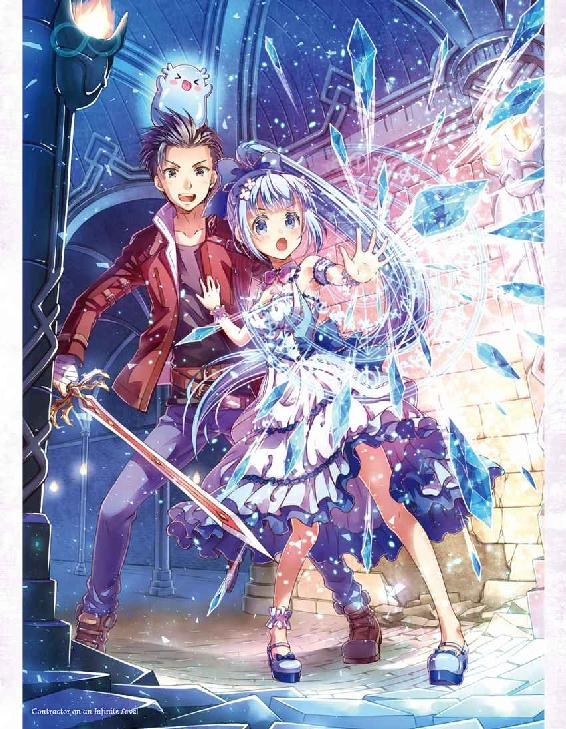

| レベル無限の契約者～神剣とスキルで世界最強～2 | |
| わたがし大五郎 | |
| TOブックス (2017) | |
グラッド達の前に突如現れた、色欲の悪魔アスモデウス。その狙いは300年前の因縁を精算するための、嫉妬の悪魔・リヴへの襲撃だった。グラッドはリヴの契約者として共に立ち上がり、悪魔同士の壮絶なバトルが幕を開ける！ だが、そんな中美少女スライムのテレサに異変が......？ 彼女に隠された謎が物語を紡ぎ、グラッドの運命を大きく変えていく。大人気世直しバトルファンタジー第２弾！
Illustration 秋咲りお
Design BEE-PEE

Prologue. 少女の涙
白く凍てついた遺跡に火球が炸裂した。
爆発による衝撃と轟音に揺さぶられ、積もった雪を振り落とす。
そこへ──。
「逃げてください、ご主人さま......ッ！」
少女が震えた声で叫んでいた。
彼女の名はテレサ。
空色のポニーテールと、深い海色の瞳が特徴的な、十歳ほどの少女である。
雪も欺く白い肌、精緻に整った容姿は愛らしく、まるで妖精のように眩い。
しかし、今のテレサは眼に大粒の涙を溜めて、恐怖を押し殺している。
無理もない。
......破滅の存在に、身体を奪われようとしているのだから。
「テレサは、俺たちと一緒に生きたいって言ってくれたよな」
顔を覗き込むと、心配かけまいと健気に笑みを作って応じる。
だが、どうにも消せない絶望が表情の端々に残っていた。
「俺も同じ想いだ」
もう逃げない。
抗うことを、立ち向かうことを恐れないと誓った。
「待ってろよ、すぐに助けてやる......絶対に俺は諦めてやらねぇっ！」
過去、何度も挫けそうになった。
そのたびに誰かが支えてくれて、乗り越えてきた。
大丈夫、どうにかなるさ。
だから......。
「神剣、力を貸してくれッ！」
▼Abilities：「英雄偽信」が解放されます。
両手から伝わってくる優しい声。
俺の怒りに呼応するかのように、刀身から業火が放たれる。
「戻ってこい、テレサッ！」
少女の手を掴んだ。
強く、強く、抱き寄せる。
現在を歩き始めるために────............。
Story1. 色欲の大罪神剣
聖アスタリア共和国所属、魔法都市ゼラム。
季節風の影響で四季がはっきりした、温帯に属する地域に繁栄した魔法国家だ。
この都市の最大の特徴はアルフォード王国魔法学院が設置された、世界有数の学究都市だという一点に尽きるだろう。
魔法学院の設立と共に生まれ、魔法学院と共に発展し、大陸中の魔術師が集い栄えた。
立ち並ぶ建物の造りは、鋭角の屋根が特徴的な古式建築様式でまとめられ、重厚で趣深い街並みを演出している。
中央通りには、石畳の街路から伸びたランプ式の街路灯が一定の間隔で並んでいた。
さらに魔術的な素材や物品に対する需要を受けて、他所との交易も盛んに行なわれており、人の出入りも活発であるため、商会ギルドを中心に店が立ち並んでいる。
飲食店、衣装店、剣や盾などを製錬する鍛冶工房のほか、各調剤店や魔術師ギルドも存在し、新旧の文化が混ざった都市である。
微かに朝もやが立ち込める、そんな都市の宿屋にて。
一人の女性が現れた。
†×†
「これからね、世界が改変するの！ 大罪遊戯が始まるわっ！」
綿毛のように柔らかそうなミディアムの紫髪に、山羊の角を生やした、十五、六歳くらいの見た目麗しい女性。
赤い満月のような瞳が特徴的で、妖艶で柔和な艶姿や立ち振る舞いから、仄かに漂う妖しい色香が魔性を感じさせるほど。すらりと伸びる手足が艶めかしいその肢体は、非の打ち所のない完璧なプロポーションを誇っている。
一方、背中にはコウモリのような翼を生やし、貞淑な雰囲気を漂わせながらも、開放された胸元や、身にまとう丈長の黒いドレスがボディラインを強調、スリットからは細く、美しい脚が白と黒のコントラストを露出していた。
「うふふ、自己紹介がまだでしたわね」
女性は機嫌良さそうに、にんまりと笑みを浮かべてくる、
それだけの挙動で、俺の頬を冷たい汗が伝っていく。
「わたくしは、色欲のアスモデウスと申しますわ♥」
色欲のアスモデウス。
三百年前に行われた断罪戦争で、世界を混沌に陥れた悪魔。
優れた悪魔により導かれる新世界創造を目的に、歴史の中でも過酷な戦争を繰り広げた種族の支配層──七つの大罪の一柱。
......でも、アスモデウスは神剣に封印された。
......人類のために悪魔を裏切り、今は俺の相棒をしている少女の手によって。
「あなた、どうしてここにいるのよッ！」
俺の隣には、拳を握って顔をしかめている少女の姿があった。
肩に魔術師の外套を羽織った、外見は十二歳ほどの少女。
長く明るい桜髪。強い意志を宿した真っ赤な瞳には、芯の強さを感じさせ、ごく自然に周囲の者たちと溶け込めるような、穏やかな気質を持ち合わせていた。
美貌と呼ぶよりは愛らしい顔立ちだが、少女もまた悪魔──。
「お久しぶりですわね、リヴちゃん♥」
嫉妬のリヴァイアサン。
三百年前に行われた断罪戦争で、人類のために悪魔を裏切った心優しい少女。
彼女の魔力、技量は非常に優れていて、知識も豊富。
修得している魔法も攻性から治癒まで幅が広い。
かつては悪魔の支配層として、七つの大罪の一柱として、畏怖されていたそうだ。
そんな彼女が人類に味方したからこそ、世界は繁栄に満ちている。
......しかし、リヴの力を恐れた人類は、彼女の魂を神剣に封印してしまった。
「質問に答えなさい、アスモデウスッ！」
「うふふ、懐かしい魔力を感じたから探知したから、辿ってきただけですわっ♥」
彼女たち──大罪の悪魔の魂が封印された神剣のことを、世界は大罪神剣と呼んでいる。
大罪の力は人を軽く凌駕しており、聖アスタリア共和国騎士団総長をはじめ、熾天使、竜帝ほどの伝説的存在でも、圧倒的な差をつけて敗れたとされているほどの強者ばかりで構成されている。
ただの悪魔とは格が違うわけだ。
「折角ですから、ご忠告をしてあげますわね？」
呆然とする俺たちに、アスモデウスが悪戯っぽく告げる。
特に殺意は感じられなかった。
「──もうすぐ、大罪遊戯が始まりますわ」
「大罪遊戯......？」
俺の呟きに、リヴが呆然と肩を震わせていた。
額にびっしりと冷や汗を浮かべて顔色を蒼白にし、一瞬の沈黙が訪れる。
「......断罪戦争のことよ」
リヴは、俺たちに目を向けた。
空を焼き、大地を砕き、厄災をばら撒き、多くの血を流した世界規模の大戦争──。
それが断罪戦争。
もし、そんな戦争が再び勃発したら......。
押し寄せる戦火に巻き込まれて、どれだけの命が失われるのだろうか。
「アスモデウス、本気なの？」
「ええ、本気ですわ♥」
そう頷いて、穏やかに応えた。
「......人類は、他人の命を平然と奪う野蛮な種族ですもの」
ん？ 俺の見間違いかもしれないが......。
今、寂しそうというか、辛そうな表情をしていなかったか？
「うふふ。ところで......リヴちゃんはいつまで人類の味方をしておりますの？」
「どういう意味よ？」
「リヴちゃんは人類のために戦いましたわよね？ その結果、身体を奪われて魂を神剣に封じ込められましたわ。おかげで三百年も孤独を過ごすことになりましたわね？」
「──っ！」
リヴは睥睨していた。
その反応を楽しむように、アスモデウスは微笑んでいる。
......たしかに、その言葉は真実だ。受け止めるしかない。
初めてリヴと出会った時、彼女は世界に裏切られたと悔しがっていた。
それでも迷って、迷って、迷い抜いた結果──世界を怨まない選択を取った。
「くすくす、人類とは身勝手な生き物ですわね」
「言ってなさい......！」
「でも、わたくしは違いますのよ？」
言葉の調子を一転させて、今度は優しく諭してくる。
高圧的な態度ではなく、友人を慰める親近感を篭めて、甘い言葉が紡がれる。
「わたくしはリヴちゃんを救ってあげたいのですわよ？」
そう、甘い毒。
心を搔き乱すほどの極上の言葉が紡がれる。
「人類は、リヴちゃんに何を与えてくれましたの？ 絶望ですわね？ ......そんな方々にこれ以上、尽くす義理はないはずですわっ！」
アスモデウスの言葉は間違っていない。
俺がリヴと同じ立場なら、二度と他人を信じようとは思わないはずだ。
「もう一度、お尋ねしますわね？」
アスモデウスは、リヴを迎えるように両腕を広げる。
「わたくしと一緒に世界を作り変えませんこと？」
ただ優しく、聖女が語りかけるかのように、微笑みすらも浮かべている。
「............」
リヴは何も言わない。
俯き、あるいは迷うように──頭を垂れる。
「契約者さんも、お友達も、特別に助けてあげますわ。わたくしを人類と同じに考えて欲しくはありませんの。だって、リヴちゃんは救われるべき存在ですのよ？」
悪意すら感じるほどの優しすぎる言葉。
魔力を込めているのではないか、とも疑えるほどに魅力的な言葉だった。
「リヴちゃん、答えは出ましたわね？ 恨み、辛み、文句、なんでもいいですわよ？ わたくしに言葉をぶつけてくださいませ。一緒に世界のために戦いましょう？ リヴちゃんは幸福を手にする権利がありますわ♥」
リヴはしばらくの間、無言でうつむいていた。
アスモデウスはそんなリヴの心が折れかけていると信じて、返答を静かに待つ。
説得に成功したと確信した笑みが表情に浮かび、もはや隠すつもりがないようだった。
「......グラッド」
そしてリヴは、ぽつりと、消え入りそうな声で俺の名前を呟いた。
刹那、神剣へと姿を変える。
......ああ、信じていたさ。
俺は神剣を掴み、瞬きすら挟めないほどの速さで抜き放ち、まっすぐにアスモデウスの喉へと突きつけた。
「悪いわね」
「リヴちゃん？」
「あたしだって戻りたい、三百年前に戻りたいわよ！ みんなに会いたいし、抱きしめて欲しいし、温もりを感じたいもの！」
リヴは叫んだ。
「あの日、国の偉い人たちが険しい顔でたくさん集まっていて......すごく冷たい眼であたしを見つめてきて......怖、かった......」
「それなら、この切っ先の意味は何のおつもりですの？」
「......アスモデウスは、あたしを救ってくれると言ったわね」
ぴったりと空中に固定されたかのように、剣先はぶれない。
ただ正確に、アスモデウスの喉を捉え続ける。
「あたしも救いたいのよ。この醜い世界を......たとえ、あたしが救われない結末を迎えても、あたしを仲間として迎えてくれたグラッドが、みんなが生きているからっ！ それがあたしの誇り......だからね、グラッド、これからも一緒にいて欲しい、かな......」
怯えた声音だった。
「......やれやれ、なんつーか、リヴにも弱い部分があったんだな」
ま、知れて良かった。
俺は苦笑いしながら、言ってやった。
「いいぜ。最後まで付き合うつもりだったしな」
「本当に？」
「ここで嘘は言えないだろ」
「え、ええ、それもそうよね」
おかしそうに笑うリヴ。
照れているのか、恥ずかしがっているのかは判断できない。
俺たちの間に穏やかな空気が流れた。
「......理解に苦しみますわね」
アスモデウスから、一種の神々しさが消え失せる。
面倒臭そうに息をつき、スキップを踏んで後方へ遠ざかった。
「リヴちゃん。やっぱり貴方を説得することは不可能のようですわね」
「ええ、悪いわね」
「せっかく仲直りできると思ったのに、とっても残念ですわ──......」
途端、空気が変わった。
同時にアスモデウスの声が、恫喝的なものへと変わる。
「──傾聴なさい。裏切り者」
悪魔の幹部格らしい言葉で、俺たちを忌々しそうに一瞥し、宣言した。
「愚かしくも人類に加担した罪は、もはや弁明の余地もございませんの！ わたくしの手で始末してあげますわっ！」
明確に伝えられた、その敵意。
俺は全身に寒気を感じ、思わず息を呑んだ。
「万華鏡の牢獄、展開！」
魔力が展開される。
瞬間、蠢く濃霧が客室を喰らいつくした。
背後に立っていたはずの、仲間たちの気配が消えている。
......結界か。
俺とリヴだけが別空間に隔離されたらしい。
「三百年前の勝負、ここで決着をつけさせて頂きますわっ！ 戦闘開幕！」
アスモデウスが右手の指をパチンと鳴らす。
光が生まれた。
雲よりも白く、雪よりも冷たく。
一片の穢れもない純白の光が柱として顕現し、天井を貫いて俺たちへと降りそそいだ。
体を襲う強烈な爆風。
音もなく、視界もなく、無音の破壊がすべてを吹き飛ばす。
「グラッドっ！」
俺は神剣を握ったまま空を跳んでいた。
アスモデウスの放った光が俺たちへ直撃し、跡形もなく客室を吹き飛ばし、さらに爆風に押し上げられて、はるか上空を漂っていたのだ。
「うふふ、ご挨拶の代わりですわよ？」
俺は見た。
真っ白に包まれた世界でたった一人、黒い翼で羽ばたく悪魔の姿を。
これが悪魔。
かつて地上を震撼させた高位存在。
そして浮遊していた体が急降下──地面に落下する！
「あたしを使って！」
無我夢中だった。
神剣を民家の壁へと突き刺す。
摩擦で火花を散らしながら減速し、地面へと近づいたところで飛び降りるように石畳の上を転がった。
「グラッド!? しっかりして！」
「大丈夫だ。まだいける！」
リヴは泣きそうな声で呟いた。
「クスクス。契約者さんは、大罪神剣がどういう存在かわかってないようですわね♥」
「存在だと......？」
「大罪神剣は忌み嫌われる孤立した存在ですわ。関わりを持つと契約者本人のみならず、多くの他人を巻き込んで絶望のどん底に落とす存在──リヴちゃんと一緒にいても、あなたには災いしか振りかからないですわよ？」
恍惚な表情を浮かべ、身を悶えさせるアスモデウスは右手に魔力を生み出し、雷光の十字槍を形成する。
一切の慈悲無き眼光で俺を見下ろし、迸る一撃を振り落とした。
「災いしか降りかからない？ いいや、わからないなっ！」
神剣に魔力を宿した斬撃──劫火一閃を放つ。
キィン──と、乾いた音を立てて、雷光の十字槍が弾け散った。
「やりますわねっ......！」
アスモデウスは苦い表情で羽ばたき、距離を開けていく。
「たしかに大罪神剣は世界から恐れられている。俺も、リヴに出会うまでは怖かった」
生物は死に対して恐怖を抱く。
それが自然の摂理。
「わかっているのに綺麗ごとをおっしゃいますの？」
「そうだな。それの何が悪い？ リヴが悪魔だって俺は構わない。俺もリヴも、そんな小さなことを気にして一緒に旅をしているわけじゃねえ！」
遥か高みで見下ろすアスモデウスへ伝わるように、声を張り上げる。
「大罪神剣の本質について語られても、俺にはさっぱり理解できねえよ。俺はリヴと出会って一か月も経ってないんだ。ただ漠然とすごい奴ってことと、甘いものが好きで、優しい女の子ってことくらいしか知らない。だから──」
神剣を水平に構え、叫んだ。
「俺は、俺の信じるリヴを受け入れる。それだけだ！」
「グラッド......！」
普通の女の子として生きたいと、彼女はそう言ったのだ。
だから、俺はリヴを差別なんてしない。
たとえ女神が目の前に立ちはだかり、世界中から疎まれたとしても。
「......そう、残念なほど強い絆ですわね。妬けちゃいますわ」
アスモデウスは、拗ねるような声で吐き捨てる。
そのまま、右手を差し向けてきた。
「契約者さんの絆と、わたくしの力──どちらが上か勝負ですわねっ！」
アスモデウスが指を鳴らし、巨大な魔法円環の陣を構築する。
不快な呪詛の歌が聞こえてきた。
その瞬間を見計らい、俺は地面を蹴り上げる。
さながら稲妻の如く、狙い違わず接近──一閃を放つ。
「倒れ伏しなさい！ リヴァイアサン！」
「邪魔しないでっ！ アスモデウス！」
大罪と大罪の破壊力が攻めぎ合う。
一瞬の均衡。
衝撃の余波で瓦礫が吹き飛び、残っていた建物を崩す。
魔力が共鳴音を立てて、激しい火花を撒き散らした。
そして──。
「そこまでにして頂きましょう」
──破砕音。
猛烈な力の衝撃を受けて、ぱらぱらと、亀裂の走った結界の一部が砕ける。
「わたくしの結界が......!?」
驚愕するアスモデウス。
天井にぽっかりと空いた穴から、新たな影が降りてきた。
「アスモデウス様、お戯れはほどほどに」
俺たちとアスモデウスの間に割って入るのは、黒衣の騎士。
年齢は二十代半ば頃だろうか。
肩にかかるほどの銀髪に、冷たく輝く黒の双眸。
並の成人男性よりも頭一つ抜きん出た長身に、黒衣の上からでもわかる逞しい肉体。
その雄々しき佇まいに隙はなく、張りつめた空気が広がっていく。
......悪魔？ いや、ただの悪魔じゃない。
アスモデウスの威圧感など比ではなく、むしろ凌駕している。
「ベアトリクス、わたくしの邪魔をするおつもりですの？」
「あの方から、お目付け役を命じられておりますので」
ゆっくりと──。
黒衣の騎士は俺たちに視線を向ける。
「その忌々しい剣の姿。なるほど。嫉妬のリヴァイアサンと契約者ですね」
リヴ、そして俺を交互に見比べる。
アスモデウスの結界をあっさりと破った時から感じた殺意が、さらに興奮を増したかのように大きく膨らんでいく。
「あなたは先代魔王の腹心──忠義の騎士ベアトリクスねッ！」
「覚えていて頂いたようで光栄です」
リヴの言葉に流暢に応えて。
ベアトリクスは背中の剣──黒十字の巨剣を引き抜いた。
「このような輩と戦うなど穢れになるばかり。この者どもは私が処分致します故、この場はお退きください。これはあの方の命令です」
「......むぅ......納得が、いかないですわ......」
不満そうにベアトリクスの言葉を受け入れ、鷹揚に頷くアスモデウス。
ベアトリクスはかしずき、その手を取って甲に口づける。
「──王女に捧げし剣にかけて──」
ふたたびベアトリクスが立ち上がると、アスモデウスは身を翻した。
「さて、と」
あらためて、ベアトリクスが巨剣を構える。
「なるほど、嫉妬の大罪はまたしても我々に歯向かうというわけですね」
「そういうことよ。でもあなた、相変わらずの騎士道っぷりね。手にキスなんてしちゃって、余裕をみせてくれることで」
「久しぶりの挨拶がそれですか？ 昔から礼儀を知らない子でしたね」
「あら、敬意は払っているわよ？ 相手は選ぶけどね」
「そういうところが大嫌いでしたよ。貴方の泣き叫ぶ声が聞きたいほどに」
突如、ベアトリクスが爆ぜるように動いた。
「私たちは三百年の時を待ったのです。その間は不自由そのものでしたが」
暴風が吹いた。
大気が悲鳴を上げてねじ曲げられ、その場に竜巻さながらの旋風が巻き起こる。
「今は、力がある」
ベアトリクスの視線は間違いなく、俺たちをしっかりと捉えている。
──来るっ。
次の瞬間、ベアトリクスは巨剣を振りかざし、地を蹴り、駆け出した。
空間が軋んだ悲鳴を上げると同時に、ベアトリクスのまわりに黒い刃が生まれる。
それらはベアトリクスの指し示すがまま、黒い衝撃波となって虚空を裂く。
俺は、とっさに横へ飛んだ。
同時だった。
俺が避けるのと、衝撃波が周囲の建物を崩壊させたのと、リヴの反撃が放たれたのは。
「──顕れよ、エクスプロージョン！」
負けはしないと、炎の魔力を込めた極限魔法を放つ。
ベアトリクスの巨剣とリヴの魔力がぶつかりあって、魔力の余波を撒き散らした。
魔法なら、おそらくリヴのエクスプロージョンが上。
しかし、ベアトリクスにはまだまだ余力がある。
「はああああっ！」
そこへ、俺は飛び込んだ。
リヴの魔法の迎撃に生じたその隙を逃さず──穿つっ！
「ほう」
まともに腹部を貫いた。
だが、ベアトリクスは表情一つ変えることない。
そこへアスモデウスの小さな数発の魔力弾が俺たちへ襲いかかる。
なんとか避けたが、神剣の一撃がまったく効いてないようだ。
さすがに腹心ほどの悪魔になると、ただ神剣を振るだけでは倒せないか。
「うふふ。天風乱れ悪魔嗤う、って感じですわね？」
あまりの力を前に、数秒まともに声が出なかったのは事実でも。
「覚えとけ。俺たちにも、とっておきの隠し玉があるってことをな！」
宣言した刹那、再び結界を破砕する音が響いた。
新たな影が俺たちに向かって一直線、空間をすっ飛ばすような物凄い速度で落下してくる。
「よかった、間に合いましたね！」
遥か間合いの外から、銀鈴を鳴らすかのような声が、殺伐とした戦場に響いた。
「こちらはお任せください！」
狐耳を生やした影の正体は──元冒険者ギルドの受付嬢、お姉さん。
妖狐族に見られる鮮やかな薄茶色の髪。
九本の尻尾と、男なら目で追ってしまう抜群のプロポーションが特徴的だ。
淑女の雰囲気を漂わせながらも飛びきりの器量好しであり、天然気味の性格は可愛く、物腰も柔らかくて、誰に対しても分け隔てなく優しく接する女性だ。
そして、彼女は誰よりも強い。
「邪魔ですっ！」
お姉さんは鉄球を振り回し、だんっと一際強く地面を蹴って、空高く跳躍した。
「この速度は......」
鉄球をベアトリクスの頭へと振り落とす。
巨剣で弾き返したベアトリクスだが......。
「その程度ですか？」
お姉さんは煽るように、疾風の如く走り、跳ね、間断なく動き回っている。
一瞬の攻防だった。
「な、なんですのっ!? 悪魔の結界を、人外如きが強引に破るなんて──」
言いかけたアスモデウスの言葉が止まる。
気づいたらしい。
背後に立つ、二人の存在に。
「グラッドくん、こっちは任せてねっ！」
一人は金髪碧眼のラミアこと、リリス。
「ご主人さま、遅くなりましたっ！」
もう一人は空色の髪が印象的なスライム娘、テレサだ。
二人ともクロスボウを構えて、アスモデウスを狙い撃つ。
「俺たちは一人じゃない。あんな大規模な結界を展開すれば、すぐ異変に気付くさ」
「......なるほど。ただの雑種ではないようですね」
ぼそりと、ベアトリクスが無感情で呟く。
「アスモデウス様、結界を解いてください」
「うふふ、了解ですわ♥」
アスモデウスを中心に張り巡らされていた結界が消えていく。
そして、現れる住民たち。
何十、何百という住民たちが、俺たちへ視線を送っていた。
元の空間に戻ってきたのか？
「宴は終わりです」
言うなり、こちらの返事も待たずにベアトリクスは虚空に身を躍らせる。
その瞬間。
「逃げろっ！」
俺は叫んだ。
ベアトリクスが巨剣から魔力を爆発させる。
リヴが慌てて防護結界を展開した。
轟っ！
魔力の衝突が生み出した強烈な余波で、周囲の建物が崩落した。
『きゃあああああっ！』
たちまち、魔法都市は混乱に包まれた。
「リヴァイアサン、これは宣戦布告に過ぎません。あの方の名において大罪遊戯──愚かな人類への血の粛清を行います。これより死の未来を覚悟してください」
ベアトリクスは、足元に魔法円を展開させる。
「またお会いしましょう」
溢れる光に飛び込んだベアトリクス。
空間が、軋んだ共鳴音を響かせた。
......転移魔法か。
光が千々の欠片となって、ベアトリクスの姿が消えていく。
「くく」
......なぜか、ベアトリクスはテレサを見て笑っていた気がした。
「うふふ。契約者さんには素敵な贈り物を送りますわ♥」
今度はアスモデウスが微笑んだ。
「この場にいる全員に、本当の恐怖を与えてさしあげますの。今までにお見せした力が全てだと思わないで欲しいですわ♥」
「アスモデウス......あなた、まさか......」
神剣となったリヴが何かに気づいたように慄く。
「なかなか鋭いですわね。正解ですわ。わたくしの本気を受け取ってくださいませ？」
アスモデウスは髪を掻き上げ、魔力を放出した。
仕掛けてくるつもりか。
「色欲の大罪として恐れられた、わたくしの固有能力──！」
大きく息を吸い、右目を開かれて......！
「恋獄魔眼！」
能力発動の声が響き渡った。
最初に光が放たれたが、発動する能力の詳細な効果まではわからずとも、それが俺たちに向けられた何かしらの攻撃であることは理解できた。
そこへ。
「ご主人さま......」
背後で、テレサが呆然と呟いた。
儚げな表情で、俺に視線を向けてくる。
「テレサを......抱いてください......！」
「は？」
「テレサは気づいちゃったのです。命ある者は愛を求めます。愛する人と家族を作ろうとする温かな想いが抑えられないのです！」
テレサが俺の服を、ぎゅっ、と掴み、蕩けた瞳で見つめてくる。
様子がおかしいな。
普段のテレサなら、こんな行動はありえないのだが......。
「グラッドくん......」
今度は、甘く身をよじらせたリリスが、消え入りそうな声で俺の腕に絡んでくる。
艶っぽい反応に続いて、ラミア特有の尾が俺の身体を優しく締めつけて。
「ご主人さま、テレサが何を伝えたいかっていうとですね──」
少し大胆になったテレサたちは、こう言った。
「子供が七人は欲しいです♥」
「やぁん、抜け駆けは駄目だよっ！ わたしとも繁殖行為しようね♥」
ガバッと押し倒してきた。
そのまま俺のジャケットを脱がせ、ベルトを外そうとしてくる。
「おい待て！ 服を脱ごうとするな......脱がそうとするな！ やめろって！」
「なな、何をされているんですか！ しっかりしてください！」
お姉さんが、すぐに二人を引き剥がしてくれた。
「やられたわね。今のがアスモデウスの固有能力、対象を催淫状態にする色欲の魔眼よ」
「アホかっ!?」
変な能力を掛けてくれやがって！
「さらなる成長を期待しておりますわ、契約者さん？」
「あ、こら、ちょっと待て──」
「ばいばいですわ♥」
アスモデウスが優雅に手を振って、取り巻く光によって身体が覆い隠される。
微かな音も大気の流動もなく、ゆらりっ、と消えた。
「「 ♥♥♥ 」」
色欲の虜となった彼女たちを置いて。
「グラッドさん、今のうちに離れてください！」
「あ、ああ」
お姉さんが、二人の手足を紐で縛りつけていく。
どうするんだ、この状況。
「......でも、なんでリヴとお姉さんは催淫されなかったんだ？」
「あたしは耐性があるからだけど、お姉さんは何でかしら？」
ふと脳裏を過ぎった疑問はしかし、石畳に生まれた亀裂とクレーターを見て納得した。
「..................」
結界を力で破り、忠義の悪魔と互角に渡り合い、移動するだけで地形を崩壊させていく。それが妖狐のお姉さん。
「「 怖かったのか 」」
色欲の悪魔からも、普通の女性として認識されなかったようだ。
色欲の大罪神剣『アスモデウス』
▼Unique Abilities
・大罪ランク ： 第７位階級 サキュバスクイーン
・断罪レベル ： １
・恋獄魔眼 ： 対象を魅了し、自身の配下として使役する
・人体封縛 ： 対象を魔力で絡め、肉体の自由を奪う
・獣魔の翼 ： 契約者に悪魔の翼を与え、空を飛び交う
・高速詠唱 ： 詠唱を早め、本来の時間の半分で発動できる
・万華鏡の牢獄 ： 上位結界を展開し、対象を閉じ込める
・色欲覚醒 ： ？？？
▼Interval1. 忠義のベアトリクス
──氷雪遺跡、祭壇の間。
「ふむ、上手く合流したようですね」
黒衣の騎士ベアトリクスは、黒十字の巨剣を肩に担ぎながら、月を仰いだ。
「ぶつぶつと何ですの？」
アスモデウスは訝しげに顔をしかめ、
「まあいいですわ。ベアトリクスの独り言は今に始まったことじゃありませんもの。わたくしは手駒を集めてきますわね」
そのまま真っ直ぐに出口へと歩いていく。
たった今、一撃で仕留めたばかりの氷竜の死体を乗り越えて。
「......貴方には判らないでしょうね」
ベアトリクスは、アスモデウスの背中に笑みを差し向けた。
（それにしても見違えました。あの姿、まさしく私の眷属となった証。切っ掛けを一つ与えるだけで、あの娘の抱える闇は更なる深淵へと深まった）
娘、とはアスモデウスのことではない。
グラッドたちと一緒にいた、ある少女のことであった。
「グルルゥ......！」
と、新たな氷竜がまた一匹、身の程をわきまえずにベアトリクスへ襲いかかる。
氷竜は一瞬で肉塊に変わった。
竜族は大陸の絶対強者──その一匹である氷竜ですら、悪魔には敵わない。
（あの娘は保険に過ぎません。ですが、リヴァイアサンの動きは封じられるでしょう。十分に利用価値はあります）
ベアトリクスは絶対の確信を抱く。
黒十字の巨剣に付着した血を見て、その濃い色こそが何物にも代えがたいと思っているかのように、口端を吊り上げる。
「私も再生の宝具を探すとしましょう。この神殿のどこかにあるはずです」
ベアトリクスは知っている。
この遺跡に、死者をも蘇らせる宝具があることを。
「あれさえ手に入れば、あの方も大変喜んでくださる」
呟きながら、ベアトリクスは探し続ける。
あの方を完全復活させる、その日まで──。
Story2. 断罪戦争の歴史
三日後の魔法都市ゼラム、騎士修道会の執務室にて。
「──と、いうわけで、君たちをしばらく投獄することにした」
「ふざけないでよ、この聖騎士──ッ！」
突如、紅蓮の炎と衝撃が渦巻き、爆音が響き渡った。
リヴが唱えた爆発魔法が、戯言をほざいた聖騎士総長に容赦なく炸裂したのだ。
その爆発の余波によって部屋の窓ガラスは吹き飛び、壁は焼け焦げ、絨毯は炭と化した。
煌びやかな絵画や古めかしい本棚、磨き抜かれた飾り鎧、ソファーやシェードランプなどといった品の良い調度品の数々は無残に半壊。
総長の執務室の内装は、もはや見る影もなくなった。
「がはっ!? ごほげほごほっ!? な、何するんだ、我々を殺すつもりかっ!?」
真っ黒焦げになった総長が床に這いつくばりながら、非難がましい声を上げている。
「やかましいわよっ！ あたしたちから悪魔襲撃に関わる騒動について聞きたいことがあるって連行したのに、一方的にあたしたちを悪人扱いなんてひどいじゃないっ！」
「悪人扱いとはなんだ！ 我々は悪魔から狙われている君たちを保護しようと思っているだけだ！ 感謝してくれたまえ！」
「鉄格子付きの三畳一間で暮らせとか囚人と一緒でしょうがっ！」
リヴは怒鳴って、右手を伸ばした。
その右手を、俺が止めた。
「リヴ、やり過ぎだ。もう魔法は使うな。次に魔法を放ったら、本当に投獄されるぞ」
「だ、だって......グラッドが命懸けで戦ったのに、この仕打ちって......っ！」
リヴは泣きそうな表情だった。
「落ち着けって。何か物凄く回りくどい言い回しだったが......つまり、騎士修道会は俺たちの身の安全を保証したいという話だろう？」
「その通り。さすがはグラッド殿、話がわかる！ いやー、領主様がな？ 魔法都市を救ってくれた恩人に、できる限りの誠意を尽くしなさいと言い出してな？」
「誠意で投獄されたらたまらないわよぅ......っ！」
総長へちらりと目をやると、蛇十字の紋章が刻印されたペンダントを下げていた。
──騎士修道会。
大層な名前ではあるが、知らない人も多いだろう。
彼らは騎士を騙っているが、その正体は女神を崇拝する修道士に過ぎない。
たしか悪魔や異教徒との戦いに現れては国に従事し、その活躍から数多くの所領を与えられ、今では豊富な財力を背景に持っているとの噂を聞いたことがある。
「とにかく、俺たちは保護をしてもらうつもりはない。悪魔に狙われても仕方ないし、殺されても文句は言えねえ。生きるために、これからも剣を振り続けるしかないからな」
俺がそこで言葉を切ったあと、総長は腕を組みながら言った。
「しかし、君たちのおかげで魔法都市の被害は最小限に収まった......一体、何者なんだね？」
その問いに、俺は憂いを湛えた表情で窓際に寄り、外の景色に目を向けた。
空は見事に晴れ渡っていた。
植樹と色とりどりの花が躍る花壇や、外側に広がる静かな街並み。
いつもと何も変わらない風景だ。
魔法都市は、今日も賑わいを見せている。
「何者かと尋ねられても......もちろん、旅人でしかないが」
「あれだけの魔法を見せておいてか？」
「ま、リヴはちょっとばかり特別だからな。見逃してやってくれ」
遠い目で語る俺の言葉に、リヴがぼそりと口を挟む。
「見逃してくれないなら、この修道会を燃やしちゃうからね？」
「やめてくれ、せっかく建て直したばかりなんだぞっ!?」
「だったら、わかるわよね？」
にやりと笑うリヴに、目的を断たれた総長は掌で顔を覆って、意気消沈している。
俺たちを見るその瞳の奥に、恐怖の色が潜んでいるような気がするのだが、とりあえず深くは考えない。
......なんかもう、本物の悪人に思えてきた。
†×†
「まるで襲撃なんて、起こらなかったみたいよね」
「何をしんみりしているんだ？ お前は」
俺は、リヴの頭をくしゃっと搔きまわした。
「あたしだって、しんみりしたくなる時くらいあるわよ？」
「そりゃ悪かった。リヴが落ち込んでいるのは珍しいからな」
「むうっ。まるであたしが馬鹿みたいじゃないっ」
リヴは頭を掻きながら、頬を膨らませていた。
あれから三日、アスモデウスたちが立ち去った後始末は大体終えている。
──と言っても、建物への被害なんかは、これから領主を中心に修復されるらしい。
俺たちは騎士修道会から同行を強制的に求められ、聴取を受けていたわけだ。
アスモデウスたちがどこへいったのか、俺は知らない。
リヴは心当たりがあるようだが、騎士修道会には話せないと言う。
修道会のお偉いさんは、俺たちの問いに言葉を濁すだけだったが、最終的に魔法都市を守った功績が認められて、今回の件は不問に落ち着いた。
まるで俺たちが悪者みたいだったのが気になるが......。
ともあれ、そこそこの報酬金を頂いた。
......悪魔と戦うのに見合った金額かどうか、というのはさておき......。
魔法都市は、再び地道に復興を続けることとなったわけだ。
「とりあえず、飯でも食いにいくか」
「ええ、そうしましょう」
言って、リヴが振り返る。
「みんなも待っているしねっ！」
俺たちは、待ち合わせ場所へと急いだ。
†×†
──喫茶店『仔猫の夜明け亭』。
魔法都市の片隅にある小さな喫茶店の扉が、ちりりーん、と鐘の音を鳴らして開いた。
足場板で作られた床と、赤煉瓦の壁との対比は落ち着いた雰囲気を醸し、良い感じに観葉植物が置かれている。
大きな吹き抜けの階段もあり、外観からは想像できないほど開放感があった。
「いらっしゃいませ──あれ、グラッド？」
扉を開けた先では、首を傾げた白猫のウェイトレスが立っていた。
ちょこんと生えた猫耳。明るいプラチナブロンドの髪。
ほどほどに整った顔立ちながら、まだ初々しさも残る素朴な表情の少女だ。
その顔には見覚えがある。
「シュシュ？ ここで働いていたのか」
「うん、昔から働かせてもらっているよ？」
淑やかな笑みを浮かべるシュシュであった。
ろくに櫛も通されていなかった銀髪はふんわりとしており、印象的な翠玉色の瞳はぱっちりと開かれている。
華奢で小柄なその肢体や、精巧に整ったその細面はアンティーク・ドールを想起させるほど。
笑っている顔は以前と違い、さぞかし魅力的に映った。
「ねえ、また事件に巻き込まれたってホント？」
「あ......まぁ、そうだけど、なんで知っているんだ？」
「みんなが話していたからだよ？」
曖昧な笑みを返すと、シュシュは何も聞かずに奥のテーブル席へと案内してくれた。
「ほら、先に来てるよ？」
四人がけのテーブル席には、普段はあまり目にしないメニューを手に取って、そこに書かれた文字を見つめるリリスとテレサ、対面にお姉さんが座っていた。
「あ、お待ちしてましたっ」
俺たちを見つけて、手と尻尾を振るお姉さん。
「おつかれさまー！ ごめんね、わたしは頭脳労働って苦手だから、一緒に行けなくて......」
「ん、気にするなって」
申し訳なさそうに頭を垂れるリリスに、笑って返す。
リリスは物事をあまり深く考えておらず、他人に騙されることも多い。
そんなリリスを修道会に連れても、嘘をつけない性格なのは熟知しているので、今回はお姉さんと一緒に行動をしてもらっていた。
「ご主人さま、こちらへどうぞです！」
リリスの隣へ腰をかけると、スライム化したテレサが、膝に乗ってきた。
隣にはリリスが座って、対面にはお姉さんとリヴが仲良く腰かけている。
「さ、メニューを決めましょう？」
すでに朝食を取るには遅すぎて、昼食には早すぎる時間であった。
そんな時間のせいなのか、店内には俺たち以外に三人の客しかいない。
ふむ、好都合だ。
他に客がいる場所で、悪魔が断罪戦争の再現を──などという話はできないわけで。
俺とテレサ、リリスは注文を取りにきたシュシュに、それぞれ軽い食べ物を注文。
「リヴとお姉さんは......？」
シュシュに促されて、メニューを眺めていた二人は同時に言った。
「デザート全部」
「水だけでお願いします」
「お前ら、嫌がらせか」
思わず突っ込んでしまった。
「だ、だって全部美味しそうなんだもんっ！ ちゃんと食べるからいいでしょっ？」
まぁ、食べられるなら構わないが。
「私、特に体型は変わってないんですけど、体重がどんどん増えているんですよね......」
耳を垂らして、深刻そうに溜息を吐くお姉さん。
「お姉さん、見た目は痩せてるのにね。それなのに昨夜、体重を計ったら機械が壊──」
「ああっ！ リヴさんっ！ バラしちゃ駄目ですっ！」
リヴの口を塞ぐお姉さんは、恥ずかしそうに尻尾をぶんぶん振っている。
......すまん。体重が増えたのは多分、俺のせいだ。
二週間前、墜ちた英雄の手によって太古の神竜が召喚された。
危うく大陸もろとも滅ぼされかけたが、神剣と力を合わせて、どうにか消滅させることに成功したのである。
その時、神剣が与えてくれた能力『経験発現』と『成長分配』が重なって、神竜を倒した時にお姉さんが一気に成長してしまった。
以前は、並の冒険者より手練れ程度だったが......。
▼お姉さん 17歳
・種族 ： 妖狐
・職業 ： 破壊者（史上二人目）
・武器 ： モーニングスター ＋ 筋肉
・レベル ： 94
・グラッドへの好感度 ： １８４６（１００が標準）
今はこうなってしまった。
素直に謝れば許してくれるだろうか。
いや、責任を取って結婚させられる気がしなくもないので、黙っておこう。
「......って、お姉さんも少しは食べた方がいいと思うが......」
「大丈夫です。昔はパンの耳だけで過ごしていたので慣れています」
お姉さんの答えに、リヴはにんまりと口を開いて。
「あら、残念ねお姉さんっ！ ここのアップルパイは直産で甘いのよ！ ちょっと前に林檎を齧ってたんだけど、これがもう美味しくて頬っぺたが落ちる勢いなの！ それを食べられないなんて残念ね！ きっともう二度と食べられないでしょうね！ お姉さんはそれだけ痩せているのに、甘いものを我慢するなんて、ああ、なんて残念なのかしら」
「ひ、酷いですっ！ 悪魔ですっ！」
お姉さんが涙ぐんでいた。
「シュシュ、お姉さんにもあたしと同じものをお願いするわ！ 砂糖もたっぷり使っていいからねっ！ シュシュにも分けてあげるから、仕事が終わったら食べなさいよー？」
「ありがと！ 沢山作るから待っててね！」
「あっ、あっ......た、食べます！ 食べますから量を減らしてくださいー！」
店の奥からシュシュが親指を立てていた。
こちらは嬉しそうに尻尾を動かしており、ご機嫌のようだ。
......リヴの奴、急にどうしたんだ？ 他人を挑発するなんて珍しい。
「リヴちゃん、ちょっと太ったらしいよ」
「ああ......」
仲間を増やそうとしているわけか......。
お姉さん、頑張って耐えてくれ。
ほどなくして、シュシュが注文通りに料理を運んできてくれた。
「はふぅ......」
テレサは机の上によじ登ると、両手に持ったティーカップへと顔を近づけて、ホットミルクを美味しそうに飲んでいく。なんだか、愛らしい光景だ。
「......で......」
シュシュがカウンターへ戻ったのを見計らい、俺は小さくため息をついてから。
「リヴに聞きたいことがあるんだが」
「............ええ、わかっているわ」
俺の問いに、しばしの沈黙を置いてから。
「断罪戦争に関して、知っていることを話すわね」
彼女は語り始める。
過去に何があったのかを──。
†×†
──三百年前。
世界には不穏な空気が漂っていた。
天使と悪魔は対立し、戦争をするために軍備の増強を推し進め、魔大陸で小競り合いを繰り返していた。
そして──。
そんな子競り合いが、本格的な戦争に発展するのに、さしたるきっかけは必要なかった。
いくつかの同盟国を巻き込んで起こる、平和への戦い。
誰も、しばらくは気づかなかった。
当時はまだある程度、平和の道を探し求めていたリヴでさえ。
戦いと混乱の中に死が蔓延した。
天使も悪魔も戦争の裏に潜むものの気配に気付いた時には遅かった。
すでに国は疲弊し、英雄と呼ばれていた者たちの多くは死に絶えて──。
世界中で、大量に出現した魔物の群れが、生き残った人々を蹂躙した。
いくつの命が失われたか。
いくつの国が滅びたのか。
天使と悪魔の戦い、と傍観を決め込んでいた竜たちも、ことここに至ってようやく、人間、人外に助力し、野に溢れる魔物の掃討に全力を上げるつもりだった。
──だが。
魔物の大量発生ですら陽動に過ぎなかったのだ。
皆の目が魔物に向いている間に七つの大罪の一柱──憤怒のサタンが、手下の悪魔を集結した。
当時はまだ、竜神アリエスの住まう聖地で、ごく一部の者にしか知られていなかった先代魔王の封印されていたバベルの塔に。
サタンは竜神アリエスとの直接対決に挑み、浮遊大陸を破壊し、聖者を殺し、徐々に死の世界へと変えていった。
サタンの狙いは竜神アリエスの命。
それを察知した竜たちを中心とする連合軍は、竜神アリエスに手を貸すべく、バベルの塔へと向かい──。
そして、先代魔王が復活した。
†×†
「......は......？」
リヴの話途中で、俺は思わず間の抜けた声を上げていた。
「復活って......どういうことだ？」
「わからないわ」
おいおい。
「何が起きたのか、サタンしか知らないもの。竜神アリエスを生贄に蘇らせたって伝えられてるけど、実際はどうなんだか......。とにかく竜神アリエスの消滅と、先代魔王が降臨したことで世界に勝利はなくなったのよ」
天使と悪魔は和解しかけていたものの、竜神アリエスを失ったことで対立。
竜も、人外も、人間の英雄たちも分断されて連携すら取れない。
かろうじて生き残ったという状況で、先代魔王が降臨したら勝利は不可能だった。
「そこで、あたしは悪魔を裏切ったの」
リヴの話によれば、平和を望む悪魔は少なからず存在したらしい。
天使と悪魔の戦争を通して、被害を知って。
当時の魔王も和平を結ぶべきと考えていたようだが......。
「先代魔王は──当時の魔王を殺害したのよ。先代魔王が世界を支配するって命令に歯向かった結果、塵も残さず灰にされたわ」
ふぅ、とため息をつく。
「先代魔王は圧倒的な支配者だったわ。魔王は七つの大罪から選定されるのだけど──あいつは支配欲の塊ね。刃向う者は仲間であろうと切り捨てる非道なやつよ」
じぃ、と俺たちを見上げてくるリヴ。そこへ質問を投げかけた。
「でも先代魔王は断罪戦争に参加してないよな？」
「そうね。あたしが先代魔王を封印したからね」
「えっ、そうなのか!?」
「そうなのよ。当時のあたしは限定的ではあるけれど、先代魔王を凌駕する力を持っていたの。次世代の魔王候補とまで呼ばれていたんだから」
軽い口調で語っているが、今の話ってかなり重要なことなんじゃ......？
あとは......リヴが話してくれた通りだった。
リヴ以外の大罪の悪魔が、世界の存続と破滅を賭けて、人々と戦って──。
劣勢に追い込まれていた人類に味方したリヴが、大罪の悪魔を神剣へと封印。
最後の戦いでリヴも封印されてしまったが──。
一年をかけて行われた戦争は、ようやく幕を閉じたわけである。
それこそが、断罪戦争の全貌であった。
「なあ、ずっと気になっていたんだが、神剣ってどこから出て来たんだ？」
「最初からよ。だって、神を殺すために作った悪魔の剣だもの」
あっさりとした答えであった。
「天使と悪魔は仲が悪くてね......。何度も戦争を起こしていたのよ。それでね、天使たちの王《虚ろなる神》に対抗するために作り上げたのが大罪神剣なのよ。高い魔力を持つ悪魔の魂を込めることで、所有者の存在能力を上昇させることに成功したの」
「なるほど。その特性を利用して七つの大罪を封印する触媒に使ったってことか」
「そういうこと」
リヴ以外は、出された食事に手をつけもせず、じっと話を聞いている。
「ベアトリクスも復活していたわね？ そして封印されているはずのアスモデウスも姿を現した。これって第三者の誰かが封印から解き放ってくれたってことになるわよね？」
大罪神剣は肉体を奪われている関係上、契約者がいないと自ら動くことができない。
つまり、アスモデウスにも契約者がいることになる。
「あの時、あたしとアスモデウスの戦いに、ベアトリクスが乱入してきたじゃない？ その時に漏らした言葉を覚えてる？」
「えっと、『あの方から、お目付け役を命じられておりますので』だったか？」
「ええ、あの方って誰だと思う？」
......まさか。
俺の嫌な予感に応えるように、リヴは小さく首を縦に振り──。
「先代魔王が復活しているのかもしれないわね」
もっともな意見であった。
アスモデウスがリヴの元を訪れた一番の理由は、戦力として招くためか、敵対するなら始末するためだったに違いない。
「憶測に過ぎないけどね。でも、もし復活していたら大変なことになるわよ」
「だが、リヴは過去に先代魔王を封印したんだろう？ もう一度封印するってことは──」
「無理よ」
リヴはきっぱりと、少しだけ震えた声で。
「神剣に吸収された悪魔は弱体化するの、今はこんな少女の姿だけど、昔はもっと威圧感があったんだから」
大袈裟に両手を広げるリヴ。
そんな彼女は、アスモデウスと互角だった。いや、若干押されていた気がする。
「もしも先代魔王が復活していたらまずい展開よ」
リヴの穏やかな声音には、恐怖が込められていた。
「あたしはアスモデウスを止めるつもり。断罪戦争の再現をするって宣言してたからね。おそらく、計画は止まらないはず」
最後に、リヴは俺たちをぐるりと見渡して言った。
「できれば──みんなに、手を貸して欲しいかな」
リヴは、力なく呟いた。
穏やかな風が、窓から流れ込んでいた。
店内の空気を震わせて、何処かへと消えていく。
......はぁ......。
俺は深くため息をついて、天井に下がったランプをぼんやりと眺めた。
結果から言うと、断るつもりなんてなかった。
リヴに命を助けられてから、彼女のために生きようと誓ったのは嘘じゃない。
だから、最後まで一緒にいるつもりだ。
とは言っても、みんなを巻き込むわけにもいかないだろう。
それが不安で黙っていたのだが......。
「先代魔王を鎮圧すればいいわけですね。任せてください」
「お、お姉さん？」
「リヴさんが大罪神剣って時点で、事情も予想がついてましたからね」
苦笑気味に頷くお姉さん。
「どうですか、リリスさん？」
「実力ではお役に立てないけど、足を引っ張るつもりはないからね！」
いつもと変わらない口調で、リリスも笑った。
「えへへ、旅をしたいという目的は同じです。テレサも頑張りますっ！」
テレサは、本当は怖いのだろう。でも、声を上げてくれた。優しい子だ。
「俺も同じ気持ちだ。どこまでも付き合わせてもらうよ」
「グラッド......！」
結局、一番怯えていたのは俺だったのかもしれない。
ここで物怖じしていたら、リヴと出会う前と何一つ変わらない。
敵がいるのなら倒すまで。それだけだ。
「みんな......！」
リヴは声を絞って、テーブルに置かれたホットミルクを一口で飲み込む。
直後。
「けほっ!? あぅ......熱いぃ......！」
「お、おい！ 無理するなよ！」
「わわ、お、お水を飲んでくださいっ！」
「......なんだか不安になってきました」
「......リヴちゃん、途中まで格好よかったのにね」
ホットミルクで舌を火傷したリヴ。
俺はそんな少女を眺めながら。
「......やっぱり無謀だったかもな......」
こっそり不安を漏らしたのであった。
▼Side Story1. テレサの魔法
──夜半過ぎ。
俺は宿のベッドで横になりながら、のんびりと過ごしていた。
あのあと、リヴの話は一旦終了。
俺たちは旅に備えて買い出しを行っていた。
先代魔王の復活が視野に入り出した現状、あまりゆっくりしている時間もなかった。
名残惜しいが、準備が整ったらすぐにでも出発するべきだろう。
だが、俺たちだけで先代魔王と腹心の悪魔を全部倒せるだけの要素があるだろうか。
まあ俺が言っても仕方ない。
むしろリヴを守ると約束した上で、アスモデウスは倒せず、そのあと乱入してきたベアトリクスに掠り傷も与えられなかったとか......格好つかない。
畜生っ。思い出しただけでも悔しくなる。
......はぁ。俺は、神剣がなければただの傭兵なんだよな。
右腕に刻まれた契約の証。
無限に伸びる嫉妬の力。
だが、ベアトリクスと互角だった。
契約者である俺が、嫉妬の力を引き出せていないことが原因だろう。
つまり未熟なのだ。
くそっ。やっぱり俺って弱いんだな......。
リヴのために戦う俺。
世界のために戦うリヴ。
その差はなんだ？
種族、才能、努力......あるいは全部か。
俺にはどれも足りていないのだ。
「あー、駄目だ。今日は寝るとするか......」
俺は頭をくしゃくしゃとかき、布団に潜り込んだ。
リヴは大罪遊戯を止めると言った。
断罪戦争の悲劇を再び繰り返さないために戦うことを決めた。
上位悪魔同士の関係とか事情はわからないけど、俺にできるのはリヴのために剣を振り続けることだけである。
リヴの力になりたい。
よし、明日は朝から鍛錬を行うとするか。
そう決めたら、少し気持ちが楽になった。
久しぶりに眠気も感じている。
最近はほとんど寝れなかったので、今日くらいはゆっくりと休みたい。
明日は良い目覚めを迎えられますように。
おやすみなさい──......。
†×†
「ご主人さまっ？」
......ゆさ......ゆさゆさ。
揺れを感じる。
「ご主人さまっ？ 起きてください、もう朝ですよー？」
どこか遠い所から呼びかけられているのを感じる。
「......ん」
夢見心地に彷徨っていた胡乱な意識が、ゆっくりと戻っていく。
「お疲れなのはわかりますが、どうか起きてくださいー！」
俺は、ゆっくりと目を開いた。
ここは俺が寝ていた宿の客室──ではない。
「どこなんだ、ここは」
気がついたら、魔物蔓延る大平原で寝ていた。
本当に──これはまた、何が起きたんだ。
うっすらと朝霧が漂う時間で、辺りはまだ薄暗い。
周囲には都市はもちろん、遠くに見える山岳地帯にも建物らしき街は確認できない。
「ぱんぱかぱーん！ ようやくお目覚めになりましたね、ご主人さまっ！」
意識を覚ますなり、見事な万歳をして喜ぶテレサを目の当たりにして、俺は目を点にした。
「おい、テレサなのか？ その髪色はどうした？」
「ほえ？」
きょとん、と首を傾げるテレサの様子を一つずつ確認していく。
テレサの髪の色は非常に珍しい淡水色だが、今は朱色に染まっている。
その瞳も紅玉のような色見を帯びて、普段の健気で一歩引いたテレサとは違い、元気いっぱいの表情を見せてくれる。
もしかして、髪を染めたのか？
年頃の女の子はお洒落で染めたくなるって聞くが、複雑な気分だ。
「テレサ、話がある」
「はい、ご主人さま」
「髪が女性の命だってことは知っている。ただ、一言くらい相談して欲しかった」
「あぅ、誤解されている気がします。わたしはテレサじゃなくて、ネレサですよっ！」
「ネレサ？」
「はいですっ！ テレサから分裂したもう一人のテレサですっ！」
どうしよう。さっぱり話が見えてこない。
「えーと、説明しますね」
ネレサは、にこりっ、と微笑みながら口を開く。
「昨夜、テレサったら皆さんに内緒でこっそりと宿を抜け出して、郊外でひっそりと魔法の練習をしていたんですっ！ あ、お小遣いで魔法書は買いましたよー？」
「......そうなのか」
テレサが戦えないことを悔やんでいたのは知っていたが、一人で練習をしていたのか。
俺たちに守られていることが辛かったのかもしれない。
「それで、テレサはどこに？」
「竜が連れ去っちゃったんですよ。困っちゃいましたね！」
「......ちょっと待て。今、とんでもないことを口走らなかったか？」
問答を繰り返すと、俺は徐々に冷や汗を掻き始めた。
もしかして、テレサはとんでもない事件に巻き込まれているんじゃないだろうか。
「このままだとテレサは食べられてしまいます。そう考えたテレサは慌てて身体を分裂させたんです！ わたし、ネレサがご主人さまへ助けを求めるために！」
「分裂って......どうやって？」
「えへへ、聞きたいですか？」
ネレサはドレスの裾からナイフを取り出して、自身の手首に押し当てた。
「やめておく......」
「そうですね！ ちょっと汚れちゃいますし♪」
言いたいことは沢山あるが、仮にもテレサはスライム種。
スライムは自在に分裂できると聞いているので、ネレサのような個体が生まれることも、まぁ理解できた。
「まったく、テレサは頑張りすぎなんだよ......」
俺はそう言って、ため息をつく。
夜に少女が一人で出歩いたらどれだけ危険か、一度教える必要があるかもしれない。
警戒心のないテレサではどれだけ餌食になりやすいか、それをちゃんと説明しないとな。
まぁ、テレサが困ってたら俺が出てって殴りつけるだけだが。
それでも、今回みたいに守れないことがあるからな。
「テレサはどこに連れさらわれたんだ？」
「この先にある赤竜の巣ですよ！ ちょうど繁殖期で、体力をつけるためにテレサを捕獲したみたいなんです！」
目的地が分かっていれば、あとは向かうだけか。
「急いで助けに向かうとするか」
「はいです！」
ネレサは微笑むと、甘えるかのように俺の腰に両手を回して抱きついた。
ぎゅっ。
爽やかな石鹸の香り、女の子の匂いが鼻孔をくすぐっていく。
直後。
──ミシリ。
背骨が軋むように悲鳴を上げた。
「ぎあああああ！ 腰が折れそうなんだが!?」
「ネレサは力に自信があるので、ご主人さまを巣までお運びします」
その怪力があるなら、赤竜に勝てたんじゃないだろうか？
「周囲の魔物も片づけておきましたよっ！」

よくよく見渡すと、首の骨を折られて泡を吹いた魔物の群れが見える。
生き残った魔物もネレサに怯えている。
......無理に魔法を覚える必要があるんだろうか？
「ご主人さま」
「ん？」
「ご主人さまは、いつもテレサのことを助けてくれるんですね」
少し嬉しそうに、ネレサは言った。
「ああ、一緒に旅をしているんだし、これくらいは当然だろ」
だから、答えた。
「わぁ、さすがです！ これからもお守りしてあげてくださいねっ！」
「ああ、もちろんだ」
「ずっと、ずっとですよ？ 約束ですよ？」
「ああ、任せておけ」
「テレサを世界で一番愛してあげてくださいね！」
「いや、それは難しいが」
ぎゅっ。
「............愛してあげてくださいね」
みしり。
「あっ！ わかった！ わかったから、力を緩めて......っ！」
「もう、ご主人さまは素直じゃありませんよね♪」
照れるネレサを前に、俺は思った。
......早く普通のテレサに戻って欲しいなぁ......。
†×†
大平原から一転。
道なき道を進んだ先に辿り着いたのは、獣の匂いが漂う竜の洞窟だった。
雨が降っていないにもかかわらず、地面は湿気を帯びて半液状化。
見上げるほど巨大な洞窟には、古代樹の根が地面のいたるところから顔を覗かせて、少しでも気を抜けば一歩踏み出すだけで根に足を取られかける。
「うげ......何だあの不気味な狼。頭が二つあって火を吐いているんだけど」
「あれは希少種の双頭狼です。温厚な性格で、滅多に人を襲わないですよ！」
「へえ、そうなのか」
俺たちに気づくと尻尾を振りながら近寄ってきた。
へえ、かわいいな。頭くらい撫でてやるか。
「牙には強い毒性を持っています。噛まれたら即死するのでご注意してくださいね」
伸ばした手が止まった。
と、その腕めがけて双頭狼は飛びかかってくる。
「うわっ!? ちょ、ちょっと待てっ！ こいつ噛みつく気だぞ!?」
「えへへ、きっと遊んで欲しいのですよ！」
ネレサは双頭狼に近づき、軽快に尻尾を掴んで放り投げる。
「先へ進みましょう？ 今は遊んでいる時間がないですよ？」
双頭狼は悲鳴を上げて逃げてしまった。
さすがはネレサ、力技である。
何事もないように洞窟内の壁にはヒカリゴケが密生し、燐光を放っている。
おかげで真っ暗闇の中をやみくもに彷徨うことにはならずに済みそうだ。
「......順調に進めそうだな」
「はい、罠がなければ大丈夫そうですね！」
地面から突き出た木の根を、可憐な仕草で飛び越えるテレサ。
──カチリ。
「ほえっ？」
可愛らしい戸惑いと共に首を傾げるネレサ。
直後。
四方の壁の亀裂から、何十本という鉄の矢が俺たちに向かって撃ち出された。
「やばいっ！」
反射的にネレサを抱き寄せ、身を屈める。
すぐ頭上を一瞬で掠めて通過していく何本もの矢。
「はわわっ!? ご主人さまが大胆ですっ！ 初めてなので優しくしてくださいね！」
「今はそれどころじゃねえよっ!?」
ぺちっ、と軽く頭を叩きながら、身体を捻る。
よ、避けられた。
生きているって素晴らしい......。
「楽しかったですね！ もっかいやりましょう！」
「そうじゃないだろっ!? わざと罠を発動させようとするなって！」
「だってー、楽しそうなんですよ！」
無邪気な笑顔で頷くネレサ。
テレサと違って、楽しいことには全力を尽くすタイプだ......。
俺は頭を痛めながら、思わず壁に寄りかかった。
「いいか？ 俺たちの目的はテレサを助け出すことだろう？ 今もテレサは怯えているかもしれない」
ネレサは、ハッ、としたように顔を上げた。
「そ、その通りです！ ネレサたちは軽い気持ちで助けに来たわけじゃありません。それなのに、ネレサは罠が楽しくて遊ぼうとしていたなんて、最低です......！」
よかった、気づいてくれたんだな。
「ご主人さま、ネレサが間違っていました。今はテレサを救出することだけを考えます！」
「ああ。それに、そこまで心配しなくてもいい。竜は確かに強いかもしれないが、一匹くらいなら俺だけでも戦える」
これは嘘じゃない。
リヴと出会うまでは無理だったかもしれないが、神剣の契約者となってからは竜とは対等以上に戦えるようになった。
怯える必要はない。
「流石はご主人さまです！ 先へ進みましょう！」
「ああ。その調子だ、ネレサっ！」
拳を上げるネレサ。
待っててくれ、テレサ。すぐに助けてやるからな。
「あ、ご主人さまの剣を持ってくるのを忘れました！」
「よし帰ろう」
剣のない俺はただの一般市民なわけで、竜に勝てるはずがない。
「助けに行かないんですか!?」
「事情が変わったしな。今遭遇したら殺されるだけだぞ」
「でも、ご主人さま、背後に赤竜がいますよ？」
ネレサが目を凝らしながら呟いた。
微震と共に、通路を震わせる何か巨大な足音が聞こえてくる。
これは間違いない。竜のものだ。
「走れ、逃げるぞっ！」
奥に向かって全力で走る。
爆炎に巻かれながら現れたのは巨大な赤竜。
体高十メートル。
全長で言えばその倍以上はあるだろう。
一体だけでも通路の横幅を埋め尽くしかねない巨体と、強靭な鱗と、その内側の筋肉と脂肪の三重鎧。
竜は日陰と湿地を好む生態なので、この洞窟はうってつけの住処なのだろう。
「ちっ！」
こちらへ詰め寄って来る赤竜。
対し、俺もまたネレサを抱えて一気に距離を離した。
──集中しろ。剣がなければお話にならない。
──このままでは殺される。
と、前方で道に迷っているらしき少女を発見した。
「わ、ご主人さま!? 助けに来てくださったんですね！」
おっと、本物のテレサだ。
涙を目に浮かべて感激している。
「会えてよかった。大丈夫か？」
「はい、隙を見て岩陰に隠れていました！ ぐすん、怖かったですよぅ......」
「心細かったよな。あとは俺に任せて頭の上で休んでいてくれ」
「は、はい！ ありがとうございますですっ！」
言うな否や、テレサはスライムへと変身。俺の頭によじ登った。
「さて、と」
背後から振動が近づいてくる。
「このまま奥へ逃げたいが......」
「無理ですよ。この先にも赤竜がたくさんいます」
「ふむ。それなら背後の赤竜に注意しながら出口を目指した方がよさそうだな」
「わっかりました！ ネレサも頑張ります！」
まずは追ってきている赤竜をやり過ごすために、岩影へと移動した。
リヴ、見ているか？ これが契約者の勇姿だぞ。
「グルルアッ......！」
赤竜が追いついた。
俺たちの姿が見えないことが疑問なのか、ゆっくりと周囲を探っている。
ここが正念場だ。絶対に物音を立ててはいけない。
「へくちっ」
..................。
ネレサのくしゃみで、全てが台無しになった。
ゆっくりと岩影から顔を出すと、赤竜が俺たちをじっと眺めている。
「あぅっ！ どうして見つかったんでしょう！」
「......どうしてだろうな！」
俺は焼け気味に叫んだ。こっちも応戦しないと、三人揃って食われてしまう。
「ご主人さま！ ここはネレサにお任せください！」
「それだとネレサが危険だろ。ここは一緒に逃げるのが得策なんじゃ──」
「ふふん、ネレサには秘策があるのです！」
ゆっくりと赤竜に近づいて、ネレサは様子を伺う。
赤竜もネレサを警戒していた。
「大丈夫だろうか......」
「不安ですね......」
俺たちの不安を他所に、ネレサと赤竜の睨み合いが続いていた。
「テレサを連れ去って半日、ネレサは赤竜さんと会える日を楽しみにしておりました！」
「グルルゥ......」
戦闘が始まる。
「行きます！」
ネレサと赤竜の距離が詰まる。
「やあぁぁっ！」
一撃。
飛びかかってくる赤竜の鼻先めがけて拳を振り上げ、一瞬たじろいだその隙めがけ、さらに踏み込んで距離を詰める。
「たあっ！」
振り上げた拳が、狙い違わず顎先を打ちぬいた。
赤竜が倒れる。
上手い、脳震盪を起こしたのか。
赤竜のような頑丈な鱗を持つ相手の場合、無理に剣で斬りつけるよりも、筋肉に守られていない脳を揺らす方が確実に相手を無力化できる。
ネレサはもしかしたら、戦闘のセンスに関してはとんでもなく高いのかもしれない。
「赤竜さん、これで終わりですっ！」
拳を掌で叩きながら、赤竜を見下ろすネレサ。
そこへ──。
「きゅいっ？」
小さな竜が近づいてきた。
「え？」
小竜は赤竜へと駆け寄って、その頬を舐めている。
もしかして、生まれたばかりの子供だろうか？
「あぅ。ご主人さま、この赤竜さんは子供にご飯を与えるために餌を探していたみたいです」
ネレサが困ったように声を上げた。
今度ばかりは攻撃がしにくかったようで、ネレサが振り返る。
その途端、赤竜が動き出した。
「待て！ 戦闘中に背中を向けるな！」
「いいじゃないですか。何だか戦いにくくて......」
ネレサが抗議した、その時──。
一際高く舞い上がった赤竜が、両の翼を大きく広げた。
それが、音高く身体の前で打ち合わされると同時に、周囲の岩が、ごうっと舞い上がった。
「ふえっ!?」
思わず立ち尽くしたネレサの数メートル前方に駆け寄り、庇った直後。その姿は粉塵に包まれて──次の瞬間、俺たちは空気の壁に叩かれて、あっけなく宙を舞った。
突風攻撃か。
「ご、ごめんなさい......！」
ネレサは自体を理解したらしい。幸い、ほとんど怪我は負っていない。
俺たちは着地体勢を取る。だが、俺たちの真下には赤竜が口を開けて待っていた。
「う、嘘です......」
ネレサの身体が凍りつく。それしか言えなかったようだ。
怯えたネレサは、助けを求めるように宙へ手を伸ばして──。
「大丈夫ですよ、ネレサ」
──その手を、優しい白い手が、ぎゅっと掴んだ。
ネレサは、両目を見開いた。
俺は宙に身を躍らせながらも、浮き上がった岩場に身を躍らせ、ネレサを掴んだまま跳躍していた。落とさないように背中に手を回し、強く包み込む。
「頼んだぞ、テレサ!!」
「はいです！」
俺の叫び共鳴するように、人化したテレサは無我夢中で詠唱を始めた。
落下が始まる。
風が耳元で唸り、ジャケットがばたばたとはためく。
この高さから落ちたら大怪我は必須。
そんな思考が頭を掠めたが──ただ呆然と、頭の上で紡がれる白い光の魔法円を見ていた。
「《万象に願う・白き鉄槌の裁きを》──水精氷晶！」
テレサが放ったのは、氷の下級魔法であった。
拳ほどの氷塊をぶつける魔法だが、赤竜の喉奥へと直撃する。
「テレサも戦うんです！ みなさんと一緒に！」
魔法を修得するのは簡単なことじゃない。
特別な事情がない限り、容易に修得できるものじゃないからだ。
でもテレサは魔法を修得した。
正直、大変だったはずだ。
この短期間で修得したということは、こまめに練習をしてコツを覚えていったのだろう。
「ご主人さま、テレサも少しは強くなっていますか？」
ああ、なっているよ。
一歩ずつ、確実に前に進んでいる。
だから、俺も負けていられない。
右足を振り上げ、赤竜の頭に振り落とす。
ごがん！ という鈍い音と共に地に沈んだ。
「す、凄いです！」
重い蹴り技の反動で、俺たちは弾かれたように壁へと吹き飛んだ。
このままだとぶつかる！
「《氷霊よ・白の刃似て・具現化せよ》──氷結槍！」
次の瞬間。
テレサの詠唱によって、氷の矛槍が出現し──俺はそれを掴み、思いきり壁面に突き立てた。
氷が火花のように盛大に飛び散り、がくん、という衝撃と共に落下の勢いが鈍る。
「しっかり掴まっていろよっ！」
地上に落ちる直前、俺は氷槍から手を離した。
両腕でテレサとネレサを固く抱き、身体を半回転させて俺が下になる。
そして衝撃。
意識が遠ざかり──。
†×†
一時間後。
温かな雫が、ぽたぽたと落ちてきて頬に触れる。
その違和感で意識が引き戻された。
眼を開くと、俺を強く抱きしめたまま見下ろしてくるテレサとネレサと視線が交差した。
「よかった、無事だったんだな」
俺が唇をわずかに動かして言うと、二人もかすかに笑った。
「はい、おかげさまで！」
「生きていられました！」
そう、生きていた。
普通なら命を落としても仕方ない状況だが、俺たちは生き残った。
身体の芯から伝わる熱が心地よくて、頬がぼおっとする。
俺はゆっくりと体を起こした。
テレサの背中に右手を当てて、詠唱する。
「治癒魔法をかけるぞ、一応」
「は、はい......」
テレサたちも上体を起こした。
大人しく治癒魔法を受けている。
ネレサの治療も終えてから、俺は二人に向き直った。
腰が抜けたようにぺたりと座ったままのテレサは、まだ言うことが聞かない唇を動かして。
「あの......あ、ありがとうございました。助けてくださって......」
「テレサが大変ご迷惑をおかけしましたですっ」
見た目はそっくりの二人。
双子でもなく、偽物でもなく、スライム特有の個性で分裂した二人。
そんな二人に礼を言われて、俺はかすかに笑みを返した。
「気にすんな。そろそろ帰ろうぜ」
「......歩いてですか？」
「そうなるな」
俺がそう答えると、テレサは俺の手を握って足を踏み出した。
そこであることに気づいて、俺の顔を見る。
「みなさん、心配しているでしょうか？」
「だろうな......まぁ、素直に謝るとしよう。きっと許してくれるさ」
顔を見合わせて笑い、俺たちは今度こそ家路を辿るべくゆっくりと洞窟を歩き始めた。
外へ出ると朝陽はすでに上り、雲一つない快晴だった。
†×†
「どこいってたのよー！ もう、心配したじゃない！」
魔法都市へ戻ると、リヴが文句を言いながらも丁寧に待ってくれていた。
たった半日姿を見なかっただけだが、何だか新鮮に見える。
「すまん、ちょっとテレサに魔法を教えててな」
「魔法って......あれ、テレサが二人いる？」
「あぅ、これには海よりも深い事情がありまして......」
「あ、恋敵です！」
「へ？ 何のこと？」
「聞いてください！ テレサとご主人さまが抱き合っていたんですよ！ 一時間もっ！」
「あっ、おい待て。誤解を招く言い方をするなっ！」
「その証拠にほら、テレサの服が唾液でベタベタです！ あれはご主人さまが夜遠し──」
「はわわ、ち、違いますよっ!? これは連れ攫われた時に舐められたもので......ぐすんっ......はじめてがあんな......痛かったですぅ......」
「待てテレサ。なぜそんな台詞を言った！」
ほら、リヴから殺気が溢れてる。
「へええええ。そうなんだぁ？ いいのよ、うん。お幸せにね？」
意味深に微笑むリヴが俺に近づいてきて、右腕に両腕を絡めてくる。
......あぁ、誤解を解くのに時間がかかりそうだ。
でも、お姉さんに聞かれる前でよかった。
リヴだけなら誤解を解くのも、どうにかなるし。
「今の話、本当ですか？」
あっ......。
†×†
後始末は大変だった。
リヴが、お祝いと称してウェディングケーキをご馳走してくれたり......。
お姉さんが、赤ちゃんの服やらを笑顔で買ってきたり......。
事情を理解してくれたリリスが慰めてくれたり......。
どれだけ言い訳しても、
『大丈夫、あたしはグラッドを信じているわ。一番はあたしだって信じているし、一夫多妻制の結婚が容認されている国もあるからね、大丈夫だいじょうぶダイジョウブ......』
リヴは、壊れた人形のように虚ろな目を浮かべているし。
『グラッドさん、永遠の愛って素晴らしいと思いませんか？』
お姉さんは、意味深に包丁を研いでいる。何だか目が怖い。
うん。
この二人に誤解を与えるのは、命に直結するような気がした一日だった。
それと、ネレサは無事にテレサと合体して姿を消していった。
最後に『ご主人さま、またお会いしましょう！』と抱きつかれて、腰の骨が折られたことを追記しておく。
リヴが治療してくれなかったら、俺は死んでいたかもしれない。
「ご主人さま、ごめんなさいです......」
「謝ることはないさ」
俺は頭を撫でながら言った。
テレサと仲良くなれたから良しとするか。
それよりも、
「魔法修得おめでとう、テレサ」
「あ......ありがとうございます！」
誰かのために強くなれること。
それは立派なことだと、俺は信じている。
Story3. 白の記憶
俺たちが魔法都市をあとにしたのは、翌日のことだった。
朝もやの立ち込める街道を馬車で駆けていく。
まだ少々眠いのだが、俺たちの居場所は敵に知られているわけで、これ以上の滞在は危険と判断した。
となれば、さっさと動くのが得策というものである。
「目的地はここから南に二週間。シグル大山脈を越えた先に存在する──神聖樹よ」
荷台から身を乗り出して言うリヴ。
「あたし、先代魔王を封印したことがあるって話をしたでしょう？」
「あっ、喫茶店で話してくれたやつだよな？」
「そそ。先代魔王の封印は簡単にいかなくてね。神聖樹の最上階『天空監獄』に先代魔王を閉じ込めることにしたの。あそこなら月の魔力が満ちているから大規模な結界も張れたから」
やれやれとリヴが肩をすくめてみせる。
......神聖樹......。
たしか、聖アスタリア共和国の末端になすエルフたちの里だ。
地方領ほどの広さしかないが、土地条件に恵まれており、作物もそこそこ収穫できるし、魔物や他国からの脅威も、ほかに比べるとかなり少ない。
そして、神聖樹は有名な秘境でもある。
神聖樹は天使が育てていたらしいが、三百年以上も昔に放棄された植物らしい。
エルフたちが神聖樹を大きく成長させて、それを集落のシンボルとして話題を集め、かなり大きな観光地に発展したと聞いた覚えがある。
「あそこに大都市ができていることを知っているか？」
「えっ、そうなの？」
「ああ。迷宮都市と呼ばれて、冒険者たちの聖地としても崇められている」
「......あんな危険な場所に都市を作るなんて、正気なのかしら」
あんまり平和だとロクなことを考えないのか、よからぬ欲が出るのか......まぁ、先代魔王が封印されているとは誰も思わなかったのだろう。
「アスモデウスが言ってたけど、あいつらは断罪戦争の再現を狙っているわ。力を取り戻すまでは迂闊な行動をしないだろうけど、早く止めないと厄介なことになるでしょうね」
「......時間の猶予はあるが、急がないと手が付けられなくなるってことか」
「そういうことよ」
俺は思わず苦笑する。
本格的な被害が拡大する前に、一刻も早く神聖樹へ向かうしかない。
と、旅の目的が決まった直後だった。
「させると思うか？」
渋い声がする。
慌てて周囲を見渡すが、誰もいない。
「ご主人さま、上空から何かが近づいてきますっ！」
テレサの言葉を追って振り仰ぐ。
名も知らぬ鳥が大空を飛んでいる。
その鳥が──。
不気味なほどに忽然と姿を消した。
「っ」
馬車を停め、神剣を構える。
空が蠢いた。
無数の雲を散らし、飛び出してきたのは緑柱色の体表をした巨竜であった。
──特徴といえば、額に埋め込んだ碧石くらいのものか。
「原罪竜ドレッドノートじゃないっ！」
「知っているのか？」
「ベアトリクスの眷属よ！」
一言で分かる。刺客だ。
巨竜の狙いはリヴと契約者の自分だろう。
ドレッドノートは空を掻き分けるような速度で飛び、まっすぐ突き進んでくる。
その全長は他の竜を何倍も凌駕している。
「するとこいつが、ベアトリクスの腰巾着の一人ってわけだな」
「ほざけ、契約者」
ドレッドノートは、俺の言葉を鼻で笑い飛ばす。
「貴様らごとき、アスモデウス様の手をわずらわせるまでのことはない。このドレッドノートが引導を渡してくれる！」
「その忠誠心は褒めてやるが、お前じゃ力不足だ」
「褒めてくれるのは嬉しいが、頭にスライムを乗せた神剣の契約者も力不足だろう？」
「きゅぴっ!? テレサのことですか!?」
......否定できない。
テレサは俺の頭の上でずっと休んでいたんだっけ。
「力不足か否か、試してくれようか！」
言うなり、大空を旋回する。
次の瞬間──。
「危ないっ！」
俺はとっさに身を屈め、俺たちめがけて飛んできた原罪竜の爪を避わす。
ドゴォンっ！
鈍い音と一緒に、俺たちのすぐ傍にあった太い木々が、まとめて抉られている。
「おいおい......」
ただ優雅に飛翔するだけで巻き起こる旋風。
その強烈な突風に煽られた無数の砂塵と石の破片が、すごい勢いで飛び散っていた。
強力な攻撃だが......。
「仕方ないわね」
リヴは魔法を唱え始める。
神剣の刀身から、紅蓮の槍が生まれた。
「紅蓮槍！」
同時に、テレサの魔法も完成する。
「氷結槍！」
炎と氷の槍。
二人の放った魔法は、それぞれ軌道を邪魔せずにドレッドノートの翼へと直撃した。
「何っ!?」
思わず叫ぶ原罪竜。
神剣姿のリヴと、スライム姿のテレサが魔法を使うことは予想外だったようだ。
「ちぃっ！」
慌てて飛び退ろうとするドレッドノート。
「させませんよ」
お姉さんの蹴りが脳天に放たれる。
「──ぐふッッッッ!?」
全身を小刻みに震わせて、落下する。
「あいにく俺は優しくない。手加減はしないんだ」
「何を生意気なこと、を......!?」
言いかけた言葉が半ばで止まる。
気づいたらしい。
俺たちの上空に漂う、巨大な質量の存在に。
「──雷鳴だと」
晴れ渡る空、漂う白の閃光。
「言っただろう、力不足だって」
落雷が、神剣めがけて降りそそぐ。
「決着、だな」
軽く息を吐き出して、ドレッドノートの腕へと神剣を突き刺した。
鋼鉄よりも強度な竜の逆鱗。
その逆鱗が、神剣と雷鳴の破壊力を前に耐えきれず──。
「......見事、だ」
ドレッドノートが今にも絶えそうな呼吸で、倒れ伏した。
俺が今使ったのは、召雷と呼ばれる中威力の魔法で、対象を感電させる効果がある。
......実は、殺傷力がそれほどない。
何でこんな真似をしたかというと、ドレッドノートに確かめたいことがあったからだ。
「あの方って誰だ？」
ドレッドノートが一瞬、ピクリ、と反応した。
「先代魔王が復活しているのか？」
「さあな、答えられん。だが予測はついているのだろう？」
俺たちを試すように冷笑を浮かべてきた。
......あの方は、先代魔王の可能性が高いな。
となれば、これ以上はこいつに問いただしても仕方あるまい。
「くはは！ きさまら如き劣等種に、あの方を倒せるはずがないのだ！」
「あっさり負けたのに酷い言い草ね。あたしたちのどこが劣等種だっていうのよ？」
ドレッドノートは、リヴを睨みつけながらニヤリと笑った。
「胸だな」
「ぶっ殺すわ」
暴れるリヴを前にして。
俺はテレサたちを連れて、遠くから処刑を見守ることにした。
†×†
道なき草原に夜風が吹く。
首筋を撫でる旋風は思わず身を震わせるほど冷たく、息を吐けばそれが白い靄となって浮かびあがっていく。
「この辺りは寒いねー......」
「近くに氷の聖獣が棲みついていた遺跡があるらしいぞ。過去に封印されたらしいが、その時の血潮が今も残って、冷気を生み出しているそうだ」
「そうなんだ......うぅ、冬眠しちゃいそうだよ......」
リリスは両腕で身体を抱きしめて震えていた。
ラミアって変温動物らしいので、寒い場所だと冬眠する特徴があるそうだ。
このままだと可哀想だよな......。
荷物からローブを取り出して、リリスへと手渡した。
「わー、ありがとう！」
ご機嫌なリリスは鼻歌交じりに着込んでいく。
その仕草を眺めてから。
俺は冷たい風にあおられながら、夜の草原でロッジ型のテントを二つ組み立てていく。
「随分と手慣れているんだね！」
「傭兵時代の知恵だな。遠征中はテントが必須だったから」
旅を始めてから三日が経過した。
俺たちへ襲いかかる追手の数は減らないが、奇跡的にも全員無事だ。
幌馬車の荷台が多少傷ついてしまったが、このくらいは許容範囲の内。
次の街で直すとしよう。
「──でも、一体どういうことだろうね」
「三百年前の悪魔が、次々に復活した理由か？」
「うん」
「いくつかのパターンが考えられるな」
ありがちなのが、悪魔たちを封印から解き放った愚か者がいる、というパターン。
断罪竜が襲ってきたことを考えると、可能性は高い。
次に、大罪神剣の力を狙っているパターン。
魔法都市で戦った墜ちた英雄は、大罪神剣の力を狙っていた。
神剣と契約を結べば力を無限に引き出してくれるのだから、闇を抱えた連中が狙ってくる理由もわかる。
ただ、この場合は相手が悪魔以外に限られるが......。
「一番ありえそうなのは......」
俺は真剣な顔でぼそりと言った。
リリスは顔をしかめた。
わかっている。
その可能性が一番高いことを。
しかしそれは、もっとも望ましくない可能性だ。
「先代魔王が何かの影響で封印から解き放たれた──」
俺は空を振り仰ぐ。
「もしもそうなら」
雲一つない夜空に向かい、ぼつりと呟いた。
「俺たちは勝てるんだろうか？」
†×†
──などと暗い疑問を考えていても、結局のところ、身に降りかかる火の粉は振り払う必要がある。
「がぐふぅっ！」
お姉さんの鉄球が、ゴブリンの頭を粉砕した。
同時に飛び込んだ俺の斬撃が、もう一体のゴブリンをうち倒す。
「あぅ、まだ午前中なのに、もう七回も遭遇しています。神聖樹に近づいたら一体どれだけの敵さんと戦わないといけないのでしょうね......」
「いっそのこと、寄り道して時間を稼ぎたいくらいだな、これは」
「そうですよね......」
俺たちは、街道の行く手を見据えて言った。
街道の右手に見える小さな林。
左手には一面の麦畑。
丘の向こうは、遥かなシグル大山脈がその頂きを見せている。
......まだシグル大山脈も超えていないのに、次々に魔物が襲ってくるんだよな。
流石に疲れてきた。
リヴの話によれば、アスモデウスは直接戦うよりも、他人を惑わして手足の如く操ることの方が飛びぬけて得意だそうだ。
俺たちが進み続ける限り、この流れは止まらないだろう。
こうなったら半ばヤケだ。
どんどん進んでいくしかあるまい。
馬車に戻り、手綱を握って再び馬車を走らせた。
「そうだ、みなさんは温泉に興味はありませんか？」
お姉さんが言った。
「温泉？」
「はい！ この先にグランフェルトの街がありまして、温泉で有名な場所なんです！ 食料の買い足しも必要ですし、立ち寄ってみるのはいかがでしょうか？」
お姉さんの目が輝いている。
「もしかして、温泉が好きなのか？」
「はい！ 温泉が嫌いな女の子なんて存在しませんよ！」
「温泉ですか!? 是非、入りたいです！」
「お肌も鱗もツヤツヤになりそうだねー！」
テレサも、リリスも、温泉で頭がいっぱいのようだった。
人化したリヴだけは、腕を組んだまま難しい表情を浮かべている。
「あのね、断罪戦争を止めないといけないのよ？ あたしたちが少しでも遅れたら、大勢の人が被害に遭うんだからね？」
リヴの言うとおりだ。
俺たちが置かれている状況は、決して軽いものじゃない。
と意気込んでいると、お姉さんが囁いた。
「リヴさん、温泉には甘いお饅頭が売っています。ほどよい舌触りで、一口で溶けて、ほっぺたが落ちるほど美味しいって冒険者から絶賛されてましたよ？」
「グラッド、何してるの？ さっさと古代都市へ向かうわよ」
おい、さっきの決意はどこへ消えた。
「みんな、温泉入りたいわよね？」
「わわ、入ってみたいです！」
「い、いいのかなぁ？」
「まぁ馬を休ませる必要もあるし、一日くらいなら......」
「決まりね！」
リヴは鼻歌交じりに、意気揚々と地図を広げる。
一斉に群がる女性陣。
彼女たちの気迫に押されながら、俺たちはグランフェルトの街へ向かうこととなった。
†×†
──夢を見ていた。
火の赤と瓦礫が辺り一面に広がったあの日。
何でもできると思っていた万能感が、無力な自分という現実の前に崩れ落ちたあの日。
俺は、甲冑を纏った十八歳の少女を抱いていた。
燃え上がる村の中央で、不思議と少女は冷たかった
美しい顔立ちも、凛々しい表情も、滲み出る清冽な雰囲気も、ある種の神聖さに包まれている。
そこで、俺は──泣いていた。
『ぐっ......あ、ぁ......』
『グラッド、情けない顔をしていますね......ああ、今のは別に貶してはいませんよ......褒めてもいませんが』
地面に膝をついて、情けなく泣きじゃくる俺を、あの人は慰めてくれた。
『......俺......あなたの命を、奪うつもりなんて......こんなつもりじゃ......ッ！』
『まったく......温室で育てられた人間でもない限り......そんな理想は捨てなさいって教えたはずです......』
あの人は女性なのに強くて、凛々しくて、優しかった。
剣すらまともに握れない俺を邪険に扱わず、剣を握る意味について教えてくれたんだ。
『まぁ、私は無様な最後を迎えましたけど......これも我が運命でしょうか......』
あの人はいつも教えてくれた。
卓越した剣技を身につけても、実践をいくら経験したとしても、命ある限り、死ぬ時は一瞬なのだと。
『■■■ィ■■■ッ！ でも......ッ！』
『身寄りのない戦争孤児だった私は、生きるためには戦うしかありませんでした......だって、私は人狼です。人間じゃないのですから』
あの人は希代の天才。
秘剣の猛犬と称されるほどの強さがあった。
背丈よりも長い大剣を振りまわし、疾風の如く戦場を駆けまわる様から死神とも呼ばれていたほどだ。
そんなあの人を、俺は殺してしまった。
『......辛かったですよね。私が魔物に身体を奪われたせいで、村人を手にかけてしまったのですから......』
寂しげな表情で、俺を真っ直ぐ見つめてくる。
『でも、最後に愛する人に看取ってもらえるって、最高に幸せなことだと思いませんか？ グラッドが生き残ってくれて良かった、です。だから──』
一秒、待って。
あの人は、目をつむって。
『......生きて。生き続けて。世界の誰よりも強くなって、生きた証を胸に刻んでください』
それが遺言だったのか、迷った末だったのか、俺にはわからない。
『──んっ』
『────っ』
お互いの息づかいが絡み合い、あの人が息を詰めて、強烈な熱が頭の片隅に伝わっていく。
柔らかい唇。
触れ合うだけの口づけ。
俺にとっては初めてで、あの人にとっては最後の口づけ。
冷たい『死』の味がした。
『──さよなら』
どちらともなく、唇が離れた。
それを最後に、あの人は眠ったように息を引き取って──。
『■■■ィ■■■......？ う、ぁ、ああ......ああああああっ!!』
それからは、無我夢中で剣を振るようになった。
あの頃の俺は自分の手を汚すことができない、どうしようもない偽善者だったから。
自分の不甲斐なさであの人を失ったことを忘れたくて。
少しずつ、心が死んでいくのを感じた。
一日ごとに、まるで自分が自分じゃないかのように変わっていくみたいで怖かったのに──。
その感覚すらも、最近は薄れている。
俺が生き残れたのは──ひとえにあの人のおかげだ。
あの人がいてくれたから、俺は生き残ることができた。
あの日、俺は誓ったんだ。
いつか、誰よりも多く、大勢の人を守れるようになってみせると。
『グラッド？ もし、君に守るべき人ができたら──......』
あまりにも遠い記憶のせいか、世界は白く染まっていく。
何だか、あの人の顔にも白い霧のようなものがかかっていて、よく見えない。
それはもう、おぼろげであいまいで、よく思い出せない、在りし日の残滓──。
──白い記憶............。
†×†
「......夢、か」
夢の中の過去を彷徨っていた意識が、帰還する。
俺はのそのそと顔を上げた。
「グラッドさん、お目覚めですか？」
と、気配に気づいたのか、お姉さんがテントの出入り口から顔を出してきた。
「......どうしたんです？」
「いや、ちょっと剣でも振ってくるよ」
懐かしい夢を見たせいだろうか。
お姉さんは何となく、どこか霧の向こうのあの人に似ているような気がした。
†×†
誰もが寝静まった深夜において、俺は冷たい雨に打たれ続けていた。
頭上は雨雲に覆いつくされて、吹き荒れる風は冷たく、無数の雨雫となって地上に降り注ぐ。そんな凍てつく水滴を頭から浴びて、俺は──。
「まだだ......！」
ひたすらと、剣を振り続けていた。
夜は魔物の聖域。悪状況を故意に作り上げての訓練。
豪雨に見舞われ、魔物たちに囲まれ、振り続けた剣の重みで指先も痺れを感じている。
それでも剣を離すわけにはいかない。
「畜生......っ！ 約束しただろうがっ！」
悔しい。
自分の力では、届かない敵がいる。
「強くなるんだろうが......っ！」
否、強くなるしかない。
才能でも、修練の成果でもなく、純粋なる強さを追い求める必要がある。
「俺は、そうしなきゃいけないんだよっ！」
新たに迫ってくるのは、竜。
その姿を凝視して、剣を降り上げて、一閃を放つ。
振り抜いた剣先が、迷い違わず竜を葬った。
「......はぁ......っ......ぁ......っ......」
疲労困憊、剣を地面に突き立てる。
神剣の手助けがなければ、俺はただの人間だ。
そう、今は人間だ。
弱さを克服するのなら、さらに強くなればいい。
「俺は......」
リヴを手放したくない。
「最初は恩返しのつもりだった。そんな単純な理由で動いてた。男だしさ、護ってやりたいじゃないか......」
大罪神剣の伝承──。
まだガキの頃、教会で布教された神父様の話を聞いて、恐れていたことがある。
世界を破壊しつくすような存在が、いまもこの星に生きているなんて思わなかったからだ。
だが俺は知ってしまった。嫉妬の悪魔リヴァイアサンの、あまりにも脆くて可憐な一面を。
世界に裏切られ、世界を守ろうとした一途な少女を。
「あいつは純粋なんだ、すげえよ。それしか俺には言えねえ」
前触れもなく現れては、俺を支えてくれる。
性格も嫉妬深くて、子供っぽい甘えん坊かもしれない。
でも、誰よりも繊細だった。
強気な発言で自分を守り、本当の弱さを隠してひとりで泣いている。
それを知ってしまった。
「......傷つくのは、俺だけで十分だ」
リヴが世界を守りたいように、俺だってリヴを守りたい。
「かかってこいよ、魔物ども......ッ！」
まだ身体は動く。
剣を握る力が残っている。
降り注ぐ敵意を相手に、ひたすらに剣を振るい、薙ぎ払う。
冷たい雨の感触を浴びながら、俺は何度だって自嘲する。
「もう誰も、失いたくねえ」
リヴが笑って暮らせるその日まで、剣を握り続ける──......。
グラッドの所持スキル（一部のみ表示）
▼Combat Skill
・劫火一閃 ： 業火を放つ剣技。
・加速 ： 身体速度を数倍に強化する技能。
▼Magic Skill
・治癒魔法 ： 治癒魔法に関する知識を修得する。
・雷属魔法 ： 雷属魔法に関する知識を習得する。
・魔竜召喚 ： 竜を呼び出すことができる召喚魔法。
▼Active Skill
・地形探査 ： 魔力を通し、周囲の地形を地図のように読み取る。
・鑑定 ： 対象を解析し、あらゆる情報を読み取る。
・薬剤調合 ： 素材を混ぜ合わせ、薬を制作する。
▼Passive Skill
・竜言語 ： 竜との対話を可能にする。
・気配感知 ： 敵意を伝える警戒技能。
・状態耐性 ： 毒、石化、病、風邪などあらゆる症状を防ぐ。
・経験分配 ： 敵を倒した時、仲間の成長を助長する。
Story4. グランフェルトの街
グランフェルトの街。
山の頂点が真っ赤に染まったシグル大山脈、その麓に栄えた特異な街だ。
「へえ、ここは暖かいわね！」
「火山地熱の影響だな。真冬でも薄着で過ごせるらしいぞ」
この街は他に類を見ないほど、むせ返るような熱気に包まれていた。
まるで真夏のような暑さだ。訪れる観光客が多いのか、門付近には定期馬車が運航しており、露店通りも活気に溢れている。
そして、街には二つの白い塔が建っていた。
何かと思って塔に近づいてみると、何とそれは骨。巨大な竜の骨であった。グランフェルトの街を覆うほどの、巨大な骨の中に街が作られているのだ。
そんな街の宿屋『ミランジェ』にて。
「わああ！ とっても綺麗な建物ですっ！」
テレサが感嘆の声を漏らした。
宿屋は古城のような外観をしており、大きな二枚扉を抜けると、巨大なステンドグラスがお出迎えしてくれた。通路には真紅の趣深い絨毯が敷かれ、壁際には騎士の鎧と立派な絵画が一定間隔で並んでいる。一泊いくらするんだろうか。
「リヴさま、ここに泊まっていいのですか!?」
「もちろんよ。あたしに付き合ってくれたみんなへの、ささやかなお礼だから」
リヴが金貨で支払い、首尾よく部屋を取ることができた。
......金貨って、俺一人なら一年分の食費だぞ。
......俺、ヒモと思われてないかな？
「リヴさん、売店にお饅頭が売っていましたよ？」
「っ！ それはすぐ行かないとよね！」
「あ、リヴちゃん待って！ わたしも一緒に行くー！」
まだ荷物も置いてないのに、売店へと走っていく二人。
従業員さんに「走らないように」と叱られて、しゅんと項垂れている。
まるで子供みたいだ。
「......あはは、私もご一緒してきますね」
困ったように目を細めながら、リヴたちの後を追いかけるお姉さん。
残された俺とテレサは、先に部屋へと向かうことにした。
「ご主人さま、ご主人さま！」
荷物を両手に抱えていると、ぐいぐいと腕を引っ張られる。
「何だか美味しそうな匂いがします！ 一緒にご飯を食べませんか？」
テレサが指差す方に顔を向けると、宿屋の外──雑多な商店が寄り集まった一角で、無数の屋台が軒を連ね、精力的に食べ物を売り込んでいる光景があった。ハムやソーセージを売る屋台、肉の串焼きを売る屋台に、ヤシの実のジュースを売る屋台など、実に美味そうだ。
「荷物を置いたら、腹ごしらえでもするか？」
「はいですっ！」
足早に向かうと、客室の空気は独特だった。
柔らかくて心地の良い、落ち着いた雰囲気の洋室。
「わわぁっ、室内に温泉もあるんですねー！」
部屋に併設された露店風呂から、テレサの声が聞こえてきた。
露天風呂付きの客室である。
確認してみると、真っ白な蒸気に包まれた乳白色の濁り湯が広がっていた。
ごつごつとした天然の岩盤で作られた浴場は、天井が覆われておらず、青い空や輝く星を仰ぎながら入浴することができる。
湯船も五人くらいなら足を伸ばせそうなので、気兼ねなく旅の疲れを癒せるだろう。
「ご主人さま、あとでご一緒しますね！」
「いや、さすがにそれは......」
「えー！ 以前はご一緒に入ったじゃないですかー！」
抗議するテレサ。
たしかにスライム姿のテレサとは一緒に入浴したが......人化した状態ではまずいだろう。
取りあえず、温泉は後回しにするか。
「えへへ、今度こそ外へ行きましょう！」
「ちょっと待て！ はぐれたらどうするんだ！」
注意しても、テレサに届かない。
仕方なく外まで追いかけると、テレサはこんがりと焼いた牛肉と野菜の串焼きを二本注文し、一本を俺に渡して、美味しそうにかじりつく。
「わぁ、お肉が柔らかくて、野菜もシャキシャキしてます！」
口いっぱいに頬張るテレサの姿を前にしては、あまり怒る気にもなれなかった。
一週間も馬車の旅が続いたから、久々に浮かれているのだろう。
俺も大人しく、串焼きにかじりつくことにした。お、旨い。
「あっ、そういえばご主人さま、その腰の長剣──どうされたんですか？」
「ああ、これか？ いつもリヴが一緒とは限らないだろう？ 神剣がなければ俺はただの傭兵だし、力の恩恵も授かれない。護身用の武器くらいは携帯しておこうと思ってな」
「鍛錬も兼ねて、ということですか？」
「そういうことだ」
「それで夜にお姿を見かけないことがあったのですね！ あぅ、ご一緒したかったです」
「んー、気持ちよさそうに寝ていたしな」
「はわわ!? 最近はぐっすり眠ることができて、そ、その......」
「冗談だよ」
ぐっすりと眠れるってことは、俺たちを信用してくれているってことだろうし、ちょっと嬉しくなる。俺はお詫びとばかりに頭を撫でてみた。
「えへへ。ご主人さまの手、気持ちいいですっ」
嬉しそうに笑ってくれた。
「──さて、話はこれくらいにしておくか......」
俺は立ち止まり、テレサを背中に隠した。
「すまん、ちょっとばかり油断してたみたいだ」
俺は裏路地へと足を進めた。背後には大勢の人々。誰が観光客で住民だかわからない。
その中から、殺気を感じたのだ。
「この場から離れる。一緒に来てくれ」
「はいです」
人通りを避けるように道なりに進んでいくと──。
前触れもなく、蒼い輝きに彩られた光の円環が地面に浮かび上がった。
「転移!?」
大地を蹴って身を投げ出す。
刹那、背中を掠めるように鳥を象った雷撃が宙高くへと迸った。
「旅人さん、お待ちください」
現れる一人の人間。
素朴な服を着た二十代前後の女性。
女性が手にしているのは杖──魔術師か。
「ご主人さまっ！」
テレサも彼女の正体に気づいたようだ。
「いつのまにこの人を誑かしたのですか！」
「おい、違うだろ、そうじゃないだろ。それは俺にじゃなくて、アスモデウスに言ってくれ」
「うふふ。一瞬で見抜かれちゃいましたわね♥」
天上から現れるのは、アスモデウス。
やっぱりか。
アスモデウスの恋獄魔眼で魔術師を操っているのだろう。
「契約者さん、少しお話がありますの」
「......話だと？」
「リヴちゃんを説得して欲しいのですわ。もしどうあっても悪魔に戻らないというのであればそれはそれで仕方ありません。わたくしがこの手で直接連れて行きますわ」
まだリヴを諦めていなかったのか。
なぜここまで執拗に追いかけてくるのだろう？
まさか......。
「お前、そっちの趣味を......？」
「違いますわよっ！」
アスモデウスが、容姿に不似合いな甲高い声を出す。
「わたくしはただ、リヴちゃんと仲直りしたいだけで──」
どうリアクションを返してよいかわからず、アスモデウスは立ち尽くしている。
とりあえず、相手の気勢を削ぐことはできたようである。
さて、この隙に......。
「「 行かせません 」」
今度は後ろから声がした。
振り返ると、新たに操られた冒険者風の女性が二人。
「契約者さんは、洗脳された人間の命を奪えますの？」
アスモデウスが、ずいっ、と一歩前に出る。
「自分の意思で襲ってきたわけじゃないんだろう？ 無駄に戦う理由もないさ」
「うふふ、紳士ですのね」
アスモデウスが目を細めてくる。
「それでは、試させて頂きますわっ！」
返事も待たず、無数の光を放ってくるアスモデウス。
「ちっ！」
俺はテレサを抱えて素早くその場を飛び退いた。
光の矢は俺とテレサの間に突き刺さり、炸裂する。
煙が視界を遮った。
「ご主人さまっ！」
テレサの叫び声が響き渡ったのは、その時だった。
白の鈍い刃が煌いた。
「くっ！」
慌てて飛び退る。
俺は腰の剣を引き抜いた。
「契約者さん本来の実力──」
徐々に薄れゆく煙の中、ゆっくりとアスモデウスは姿を現した。
「見せてくださいませっ！」
アスモデウスが不可視の魔力を放つ。
すかさず剣で受け止める。
──ギィン！
アスモデウスの放った魔力と、俺の放った剣撃。
双方が衝突し、目を灼くほどの閃光と、空間すら歪める強烈な衝撃波がその場を駆け抜けた。
「なっ......!?」
悪魔の放つ一撃を正面から受け止めた事実。
その光景を前に、アスモデウスが驚愕の声を上げた。
「信じられないですわ......神剣のない契約者さんが、高位悪魔の一撃を相殺するだなんて！」
アスモデウスが眼を見開く中で。
「テレサ、後ろだ！」
背後に生まれた不穏な気配。
赤銅色の獅子の姿を模した雷撃の魔法。
地面を抉り、その口腔に稲妻の輝きが灯ったのを確かに見た。
「危ない！」
「ご主人さま!?」
俺がテレサを突き飛ばした刹那、身体が獅子に呑み込まれた。
「ご主────」
「どうやら、またリヴに助けられたようだな」
雷撃が虚空に収束していく。
石畳すら粉砕する一撃が粒子と化したその後に、俺は立つ。
左腕に、光輝く紋章を浮き上がらせて。
「契約者の証!? それで受け止めたっていうの!?」
アスモデウスが震え戦く。
その一瞬の虚をついて、俺は通りすぎざまにアスモデウスの身体を薙ぎ払おうとした。
──呪詛の衣、魔法否定。
神剣が持つ固有能力で、あらゆる魔法を打ち消すことができる代物。
契約の紋が刻まれた左腕にも効果は残っているようで、おかげで助かった。
「悪いが、これで......！」
勝負を決めようとしたが、しかし。
「あのスライムちゃん、苦戦していますわよ？」
俺は、動きを止めてしまった。
その言葉が嘘だとは見抜けずに。
「甘いですわね♥」
アスモデウスの右手が俺の頬を撫でた。
ただそれだけの挙動で、俺は地面に崩れ落ちてしまう。
何だこれ、全身が痺れて......神経を麻痺させたのか......！。
「うふふ、仲間想いですわね。そういう殿方は好きですわよ？」
完全に出し抜かれた。
「そんな悔しそうな顔をしないでくださいな？ べつに命まで奪うつもりはないですのよ？ リヴちゃんの弱点を知りたいだ・け・で♥」
アスモデウスが右腕を上げた。
その瞬間、テレサの身体も動かなくなった。
「あ、れ......？」
見れば、操られている女性たちの剣がテレサの影に突き刺さっている。
──影を縛っているのか!?
「「「 捕らえました 」」」
「チェックメイトですわね♥」
「ご主人さまぁ、ごめんなさいです......」
成す術もなく、手足を縛られていく俺たち。
やがて、アスモデウスに魔法をかけられて、意識が夢見心地になっていく。
そして──。
†×†
気がつくと知らない場所にいた。
薄汚れた壁に、まるで取り残されたような古代の聖人像がかかっている。
窓はなく、ランプの灯りが部屋を照らしている。
ここは朽ちた神殿か何かの小部屋らしい。
状態を確認すると、手足は縛られている......か。
目をやると、入口には女性が三人立っている。
俺たちを襲った女性だ。
おそらく見張りなのだろう。
剣を持って突っ立っているが、目から光は失われたままだ。
「目を覚ましましたか？ ご主人さま」
呼ぶ声に背後を向くと、そこにはテレサが寝転がっていた。
やはり同じように手足を縛られているが、俺と違うのは魔法円の上に寝かされていることだ。
「うぅ、ここから出られないんです......。スライムにも戻れなくて......」
自力での脱出は難しいようだ。
どうにかして街へ戻りたいが......。
「あら、契約者さんも目を覚ましたようですわね」
入口から、あいつの声が聞こえた。
身体を反転させると、腕を組みながら上機嫌のアスモデウスが鼻歌を口ずさんでいる。
「──で、契約者さん？」
唐突に声をかけられて、俺は少しばかり冷汗を掻いてしまった。
「今、貴方の置かれている状況が理解できているかしら？」
俺の前にしゃがみ、両手で頬を撫でるが──。
「よく見ると、リヴちゃんにはもったいないくらい素敵なお顔をしていますわね♥」
なぜだろう、アスモデウスを見つめていると背筋が冷たくなってくる。
俺を見てから興奮したように息を切らし、まんざらでもなさそうな微笑みを向けてくるのが不気味だ。
「先代魔王の生贄にしちゃうのはもったいないですわ」
は？
「先代魔王の生贄だって......？」
「うふふ、心配しなくても引き渡しはしませんわよ。リヴちゃんに恨まれちゃいますし、命は助けるお約束でしたから。でも生かしておくのなら、ここで多少の辱めを与えても問題はありませんわよね♥」
問題ありまくりだっての。
「ご、ご主人さまに手を出さないでください！」
助け船は背後から出た。
頼む、止めてくれ。
「うふふ、心配しなくてもスライムちゃんも、わたくしの下僕にしてあげますわ♥ それなら契約者さんと色々できますわよ？」
「...........................ご、ご主人さまにそんなことはできません！」
待て。今の間は何だ？
普段ならとにかく、今の状況では逆らえない。
ただ、魔法は使えるので脱出しようと思えばできるだろう。
タイミングを誤らないようにしなければ。
「うふふ、悪く思わないでくださいませ♥ 契約者さんだって、わたくしより酷いことを散々あちこちでして、沢山の女性を泣かせてきたのでしょう？」
「一度もしたことねえよ」
「うふふ......それじゃ下僕たち......」
アスモデウスの命令で女性たちが俺を取り囲んで、手を伸ばし──。
「ご、ご主人さまに手を出したら、大変ですよ！」
「へえ、何が起きるって言うんですの？」
「これは忠告です！ ご主人さまに手を出さないでください！ じゃないと──」
「じゃないと？」
女性たちは俺のベルトと服に手をかけていた。
テレサは静かな口調で、しかしはっきりと告げた。
「び、病気になりますよっ！」
......部屋の全員が固まった。
俺が女性たちにゆっくりと視線を向ける。
──ずざざざざざっ！
慌てて離れる女性たち。
アスモデウスは引きつった笑みを浮かべている。
「うふふ......リ、リヴちゃんは、こんなだらしない男がいいんですの......？」
渇いた笑い。
アスモデウスはゴミを見るような目で、俺を見下ろした。
「......てか、アスモデウスだけには言われたくないんだが」
「む、どういうことですの？」
「だってお前、アレだろ......色欲だし、経験が豊富──」
「あああありませんわよっ！」
頬を赤く染めて否定するアスモデウス。
その反応は本当っぽかった。
「わたくし、愛する殿方が現れるまでは純潔を守ることに決めていますわよっ！ 誰にでも肌を晒すだなんて、お猿さんでもしませんわよっ！ 不潔ですわっ！」
せ、正論だが......。
色欲の悪魔が自分を否定していいのか？
「......経験、なかったんだな」
「あっ」
さらに顔を真っ赤にして、アスモデウスは力強く背を向けた。
そのまま腕を組み、ツカツカと音を立てながら入口へと向かっていく。
「う、ふぐっ......わああああああああん！ もう顔も見たくないですわっ！」
号泣して立ち去るアスモデウス。
そっちに関しては初心だったようで、本当に色欲を司る悪魔なのか疑問を抱く。
だが、見張りも連れて行ったのは好都合だ。
「ご主人さま、今です！」
テレサが言う。
──ぶちっ。
俺は軽く雷属魔法を詠唱して、ロープを焼き払って立ち上がった。
テレサを縛る魔法円を足で擦る。
それだけで、テレサを魔法円から救い出すことができた。
「はわわ、ありがとうございます！ でも、ここは何処なんでしょうね？」
テレサがスライムに変身することでロープがほどけ、よいしょ、と俺の頭によじ上る。
「さっきから耳に違和感がある。空気も薄いことから考えると、ここは......」
「シグル大山脈ですか？」
「だろうな」
言って、俺は小部屋を出た。
周囲から気配はないが、気付かれても面倒なので、今までの会話と同様、小声で言う。
「さて、剣を取り返したら外へ出よう」
俺はジャケットを羽織り、静かに探索を開始する。
「グランフェルトの街まで戻らないとな」
そのためには、あの三人の女性を捕まえるのが手っ取り早いだろう。
†×†
「さて、説明してもらおうか。なぜ俺たちを攫った？ おっと小声で話せよ。少しでも騒いだら命の保証はできないぜ......？」
テレサに両手を氷漬けにされた女性の一人は、ようやく正気を取り戻したようで、光を目に宿した。
「ひえええええっ、お......お許しください！ どうか、どうか命だけはっ......！」
「そんなに怯える必要はないが......」
先ほど、目の前で他の女性二人にさるぐつわを噛ませ、個室に監禁した俺の言葉を疑っているようだった。
「別に命を奪うつもりはないぞ。お前さんが悪人じゃなければ、だが」
時間は真夜中であった。
神殿の窓から見上げた満点の星と、三日月の月が辺りを照らしている。
やはり俺たちが隔離されたのは、シグル大山脈の中腹にある古い神殿だった。
「俺たちから奪った剣は、どこに置いてあるか知らないか？」
「そ......それでしたら、倉庫にありました......」
女性はあっさりと、俺たちを案内してくれた。
丸腰で下山するのは危険である。
とりあえず今、できるだけ装備を揃えておきたい。
と、その時短剣を見つけたので、これはテレサに渡しておこう。
「そ、そういえば......！」
「どうした？」
女性は思い出したかのように、ぽつりと口にした。
「つい先ほど、グランフェルトの街に襲撃をかけるって聞いたような......」
............っ！
「まさか、俺たちを攫ったのは......」
「ご主人さま、先ほどからアスモデウスの魔力を感じませんよ......っ！」
......やられた。
アスモデウスは、俺とリヴを分離することが狙いだったのか。
前に交戦した時は互角だった。
では、契約者のいないリヴはアスモデウスにとって......。
「急いで下山しよう、テレサ」
「はいっ！」
「お待ちください、神殿の入り口には鉄格子が......！」
「大丈夫だ」
応えて、俺たちは入口まで駆け出した。
「離れてろ」
俺の言葉に二人が従うのと同時に、俺の剣が一閃する。
キィン。
鉄が震えるような鋭く硬い音。
そして。
がらがらがら──。
少々派手な音を立て、上下を断たれた鉄格子数本が、石の床へと転がった。
「わあああ、すごいです！」
俺の持っている剣は、出所不明の無銘とはいえ、魔法都市で購入した武器である。
魔力が込められており、強度も切れ味も普通の剣よりは格段に上質だ。
「──じゃ、あとで迎えにくるから」
女性には隠れているように伝え、神殿を飛び出した。
星空の下、山の中腹から。
俺たちはグランフェルトの街へと急いだ。
†×†
明け方。
流れる雲が、いい感じに月と交わっている。
俺は岩肌に背を預けて、先ほど熾した焚火で温まっていた。
──テレサを休ませるために、川の側で休憩を取っていた。
真っ直ぐに下山していたが、山岳地帯の荒れ果てた場所に神殿が建っていたので、目的のグランフェルトの街はようやく視界に入ったところ。
この調子だと、あと数時間はかかるだろう。
「ご主人さま、水浴びが終わりましたっ」
川からは、まだ髪に湿り気を帯びたテレサが現れた。
スライムは、綺麗な水があれば元気になる。
シグル大山脈の地下水は純度も高く、綺麗に澄んでいる。
まさに休むにはもってこいの場所だ。
「ご主人さま」
テレサは俺の隣へ寄り添うように座り、肩へ頭を預けてきた。
まだ束ねていない空色の髪が 淡い、淡い月光を浴びて幻想的に輝いている。
「......テレサが捕まっちゃったから、こんなことになってしまいました......」
「ん、謝ることじゃないぞ？」
そう返事をすると、テレサは力なく笑ってくれた。
責任を感じているのだろう。
どう声をかけてやればいいんだ？
俺は口下手なんだ。
異性の気持ちがわからないし、どう慰めてやればいいのかもわからない。
だから、あんまり期待しないでくれよ。
「テレサは旅が辛かったりしないか？」
「えっ？ みなさんとご一緒で楽しいですよ！」
テレサはそう答えると、夜空を見上げた。
「ご主人さまと出会って、みなさんと出会って、毎日が楽しいです！」
曇り一つない笑顔で、そう言ってくれた。
「......よかった、楽しんでくれていたんだな」
「えへ、もちろんです」
普段より素直なテレサは、ぎゅっと躰を寄せてくる。
「もっと、ご主人さまを感じたいです......」
心なしか、テレサの顔が先ほどより朱に染まっている気がする。
水浴びの直後のせいか、やたらと色っぽく見える。
......これ、反則だろ......。
ただでさえ、異性と二人きりという状況だというのに、甘えてくるテレサが反則すぎる。
どこまでも柔らかいテレサの肌。そして唇を噛んだ恥ずかしげな表情も、ほんのりと桜色に染まった肌も、今のテレサはすべてが艶っぽくて、否応なくドキドキしてしまう。
「あの、ご主人さまは──テレサのこと、どう思います？」
そこへ、とんでもないことを言い出した。
「あ、ああ。可愛いと思うけど」
「本当にですか？」
「......急にどうしたんだよ」
落ち着かせようとする俺に、テレサが言った。
「意地悪な質問ですよね。ごめんなさい。無理に答えなくて大丈夫ですっ。でも、テレサは敢えてご主人さまに質問したんです。だって」
いつもの引っ込み思案な性格はどこへやら、テレサは俺の手を握ってきた。
大きな瞳は震えているようで、いかに本気かを物語っている。
「記憶を失ったテレサに、こんなにも優しくしてくださったことが嬉しいんです。ご主人さまは、もしかしたら運命の......」
「待て」
「ふえっ？」
月を仰ぐ。
空の端が赤く染まり──。
「来る！」
炸裂する紅蓮の炎が、グランフェルトの街に襲いかかった。
天上に瞬いていた星明りが、無数の火の粉によって隠される。
直後、はるか彼方から、巨大な何かが崩壊する音がこだまする。
「今の音って......!?」
「都市を囲む市壁が破壊されたな。それも一か所ではなく、同時に複数箇所から破壊音が聞こえた。竜による突撃か、それとも魔物たちが攻めてきたか」
小さく息を吐き、立ち上がる。
テレサにはスライム化してもらい、頭の上へ。
火を消して駆け出した直後──大気を震撼させる、竜の雄叫び。
「今の唸り声は......！」
リヴが使役する、魔竜の咆哮であった。
戦いが始まった。
「ご主人さま」
「ああ、わかってる」
たしかな力を込めて応える。
「片っ端から薙ぎ払う。それだけだ」
宣戦布告。
アスモデウスの襲撃へ、俺たちが挑む極限の抗争。
大罪遊戯の始まりだった。
Story5. 襲撃
グランフェルトの街を揺るがす鳴動。
灰色の煙から響き渡る魔物の咆哮。
吹きあがる火の粉によって、空は真っ赤に塗りつぶされていた。
建物も、上階部分がないものや、瓦礫の山と化している物が見られる。
騎士団とすれ違いながら、破壊を受けた大通りに出ると──。
何の前触れもなく、幾重もの影が上空を埋め尽くした。
「ワイバーンですっ！」
どの建物よりも上背であり、巨大であるワイバーンの姿を捉える。
その数、七。
次々と空から現れる。
透き通った硬質の翼に、碧の鱗。
大小混じり合うその光景は、餌を見つけた肉食獣のようで。
「餌」
「餌ガ、キタ！」
「殺セ、奪エ！」
「黙れ」
俺は短い口上で開戦の火蓋を切った。
ただ地を蹴っただけで、ワイバーンへ肉迫する。
魔力を込めて、剣戟を振るう。
爆ぜるワイバーンの群れ。
テレサの魔法も炸裂し、災を打ち消した。
「顔も名前も知らない竜に構っていられるか」
昔なら一体でも充分な脅威になるワイバーンが、まるで障害になっていない。
少しは俺も成長したようだ。
「急ごう。このくだらない遊戯を終わらせる！」
「はいです！」
宣言した矢先、爆音が聞こえた。
目の前の壁が勢いよく破壊されたのは、その時だった。
爆風の振動を受けて、都市そのものが微震する。
地面をひっくり返したような振動、それも徐々に大きくなっている。
地震じゃない。
巨大な生物が近づいてくる地響きだ。
直後、巨大な『獣』の爪と牙が、視界を埋め尽くす。
「ふえっ......っ！」
「落ち着け、こいつは魔獣ベヒモスだ。知能も低いし、空も飛べない。アスモデウスに操られたのか」
爆炎に巻かれながら現れたのは、魔獣ベヒモス。
体高八メートル。
全長で言えば俺の三倍以上はある。
俺たちが横歩きするのも大変なのに、煉瓦を削りながら巨体で進んでくる。
「ちぃっ！」
こちらを見るなり詰め寄ってくるベヒモス。
地面を蹴り、一気に肉迫した。飛びかかってくるベヒモスの鼻先めがけて剣を振り上げ、さらに踏み込んで距離を詰める。
「はっ！」
──剣閃。
ゴトリ、と頭が弧を描いて飛び、ベヒモスが凄まじい断末魔を上げた。
「お疲れさまですっ！」
深々と息を吐く。
「先を急ごう」
目にかかった前髪を片手で払い、剣を強く握りしめた。
その刹那。
「......何だ？ 声が聞こえる？」
「ご主人さま？」
風に運ばれてくるのは、誰かの声だ。
身を翻し、駆ける。
火の手の上がるメインストリートを走り抜けて間もなく、見覚えのある狐耳が、踊るように燃えさかる教会の中で誰かと戦っている。
『......ぐずっ......だれっ、かっ......』
──そこからは、幼い少女の悲鳴が聞こえてきた。
「まさか、取り残されているのかっ!?」
「き、教会が燃えちゃいますよっ！」
紅蓮の視界。
教会が全焼するまで、もう時間がない。
炎に巻かれた壁を強引に蹴り飛ばし、飛び散る火の粉に肌を焼かれながらも、教会の内部へと飛び込んだ。
真っ赤な視界。
その奥に立ちはだかるのは──下級悪魔レッサーデーモン。
「お姉さん、頭を下げてくれ！」
「グラッドさんっ!?」
気迫とともに、正面から放たれた炎の矢を長剣で受け止める。
牽制の炎の矢は虚しく消滅した。
間合いを一気に詰めると、頭上から低く魔法の詠唱が聞こえた。
「水精氷晶！」
テレサの放った一撃が、レッサーデーモンの右足へと放たれる。
致命傷には成り得ないが、不意をついた一撃をまともに受けたレッサーデーモンから、鈍い声が聞こえた。
そこへ、斬撃を叩き込む。
グシャリ。
一瞬にしてレッサーデーモンの頭を断ち割っていた。
「また会えてよかった、お姉さん」
「はい、無事だったんですね！」
お姉さんは安堵したように、短く息を吐く。
その体躯に傷らしい傷はない。
ただし、周囲には何十体というレッサーデーモンの屍が散らばっていた。
......放っといても大丈夫だったか。
俺は内心、ほっとしていた。
「グラッドくん、この娘が危険なのっ！ 逃げ遅れちゃったみたいで！」
「リリス？」
濛々と立ち込める黒煙を避けるように、リリスも姿勢を屈めていた。
リヴの姿は見当たらない。
「たす......け、て......」
リリスの腕の中に眠っているのは、一人の少女。
十歳に満たない年齢だ。
炎と煙に巻かれて意識も虚ろなまま、掠れた声を絞り出す光景がそこにあった。
「......よし、もう大丈夫だからな。ここは危険だから安全な場所へ移動するぞ」
少女を背負い、外へ向かおうとして──。
「教会が崩れ落ちますっ！」
天井が崩落し、俺たちを囲むように瓦礫と炎の壁が埋め尽くす。
くそっ、脱出路が閉ざされたか。
「わああ、どうしよう!?」
「このままでは、私たちまで......」
一瞬、脳裏をかすめる最悪の未来。
同時、その危惧を拭い去る高揚が全身を駆けめぐった。
「......諦めるものか」
ただ生贄に捧げられていた頃とは状況が違う。
情けなく泣いていた俺を励まし信じてくれた、かけがえのない存在がいる。
そんな存在が、懸命に戦っているのだから。
「......このままでは終わらせない。俺が絶対、この娘たちを守ってやる！」
剣を構えた。
その時、唐突に空が瞬いた。
見上げれば、黄金の巨竜──。
天を埋め尽くすほどの黄金の翼が、牙が、爪が、全て俺たちへと向けられていた。
「グラッドさん！」
お姉さんの悲鳴に、竜の咆哮が重なる。
瞬間。
その口内に凄まじい雷鳴が溢れ、空気が震える。
......稲妻の息吹だ。
黄金竜の、万物を焼き尽くす破壊の雷。
放たれるまでもなく、ただそこにあるだけで感じる圧倒的な力。
この力を前にしたら、誰でも無条件で理解できる。
赦しも、抗う意味も、希望すら持てないのだと。
......ギリ。
歯を喰いしばった。
俺は黄金竜に対し一言、告げる。
「命を何だと思っていやがる、竜共が......！」
ドクンッ!!
俺の意志に、心臓が強く鼓動を刻む。
力が唸る。
魔力が絞られる。
その眼で見ておけよ、悪魔ども。
俺はただ神剣と契約し、運命に蹂躙されるだけの存在じゃないってことを、この一撃を以て刻んでみせる。
──先代魔王、滅びの序曲を。
「成功してくれよっ！」
稲妻の息吹。破壊を生み出す息吹。
生物に死を与えるために、ただ降り注ぐ。
俺は、一歩進んだ。
全身が生み出す怒りを剣に宿し、雷撃の中へ飛び込んだ。
それが合図となって──。
「劫火一閃ッ！」
ザンッ!!
──瞬間、息吹を生み出していた黄金竜の肉体が塵と化した。
「......ようやく成功したか」
怒りのあまり、全身から血が噴き出しそうになる。
劫火一閃は、大罪神剣がないと使えないスキルの一つ。
だが、神剣が常に手元にあるとは限らない。
だから、俺は剣を振り続けた。
自分の力で、リヴを守れるようになるために。
「今の一撃で瓦礫が粉砕されてるよ！」
「急ぎましょうっ！」
俺たちは教会を走り抜ける。
同時だった。
教会を抜け出すのと、教会が音を立てて崩れ落ちるのは。
「わああ、ご主人さま凄かったです！」
「ほんとだよ！ びっくりしちゃった！」
駆け寄ってくるテレサとリリス。
「悪い、心配かけたな──あ、そこの騎士の人たち、この子を頼む！」
救出した少女を騎士団へ預けた。
「お......兄ちゃ、ん......？」
「助かってよかった。もう大丈夫だよ。あとはゆっくり休むようにな」
薄目を開け、力なく笑う少女に手を振った。
「リヴは？」
「アスモデウスが撤退したので追いかけてます。東へ飛んでいったので、おそらく氷雪遺跡に向かったのではないでしょうか？」
「わかった」
急いで後を追うとしよう。
俺は頭を振ってから、駆けようとした。
「あ、あのっ」
その時、お姉さんが少しだけ大きな声を上げる。
「お二人が姿を消して、とても心配しました。きっと事件に巻き込まれていたんですよね？ 詳しくは後で伺います。私たちは、もう少し騎士団の方々のお手伝いをして追いかけます！」
......心配してくれたんだ。
俺は何だか照れくさくて、その狐耳を撫でた。
「ひゃうぁっ!?」
「ありがとう。後で、事情は話すから」
お姉さんは尻尾をぶんぶんと振って、慌てていた。
「グラッドくん、それセクハラだよー？」
リリスがジト目で見つめてくる。
「えっ、そうなのか？」
「い、いえ！ グラッドさんなら構いませんから！」
お姉さんは真っ赤な顔でそう言ったあと、俺の腕を両手で掴んで──。
「ここに心配している人がいますから、必ず戻ってきてくださいね」
上目遣いに頼んできた。
その念の押し方が妙に可愛らしくて、俺はつい苦笑いしながら頭を撫でた。
「ああ、もちろんだよ」
「はい！」
剣を握りしめ、俺たちは氷雪遺跡へ急いだ。
色欲の大罪神剣『アスモデウス』を目指して──。
†×†
氷雪遺跡への道中は順調だった。
馬で移動していることが効いたのだろう。
途中で魔物が焼き払われた痕跡を何箇所か見つけたが、リヴの魔法で間違いない。
「リヴさま、ご無事だといいですが......」
不安な声で言うテレサ。
俺は軽く頷いた。
「何とか大丈夫だろう。でも急いだほうが確実だな」
「そうですねっ！」
「ああ、見えてきたぞ」
俺とテレサは正面に注目する。
──氷雪遺跡。
この遺跡の噂は知っている。
かつて一度、この地方を滅ぼした氷の聖獣が光の聖女によって倒されて、流れ出る大量の血潮が都市遺跡を氷漬けにした、とされている。
以来、氷が溶けることはなく、徐々に外へと侵食しているそうだ。
わりと有名な話だが、本当だったとはな。
しかし。
「あぅ、静まりかえってます......」
異様にひんやりとした空気。
生々しいほどに強烈にたちこめている獣のにおい。
遺跡の入り口は、真っ白なほど凍てついていた。
「不気味な場所だな......」
頭の上で、ぷるん、と身体を震わせて、テレサも呟いた。
「はい、妙な感じがします」
俺は遺跡全体に充満する、魔力を薄めたような、おかしな気配を感じ取っていた。
遺跡はただ、静かに佇む。
どこにでもあるはずの鳥の声も、虫の声すら聞こえてこない。
そのくせ、気配だけはある。
崩落した柱の陰からも、近くの石像からも、すぐそこの遺跡からさえも、異様な者の気配が漂ってくる。
「......こんなに異質な気配を放っている以上、内部にアスモデウスが潜んでいたとしても、これじゃさっぱりわからな......」
俺が言い終わるよりも早く──。
ざわり。
周囲が不気味に歪んだ。
「ふえっ!? なな、なんですか!?」
テレサが細い悲鳴を上げる。
俺は硬直し、背中に冷たいものが駆け抜けた。
空間が歪み、俺たちを取り囲むように現れたのは氷狼アイス・ヴォルフ。
その数は、軽く十を超えていた。
「はわわ、襲ってくるつもりでしょうか!?」
「多分そうだろうな」
よく考えてみれば、アスモデウスが遺跡まで移動したということは、リヴを確実に葬るための罠を仕掛けてあるということだ。
おそらくリヴはこの先にいるだろう。
そしてリヴが回避した罠に偶然俺たちが引っかかった、といったところか。
と考えれば、リヴとの距離は随分と近づいている。
ともあれ、まず第一の問題はここをどうやって切り抜けるか、である。
......氷狼アイス・ヴォルフが十匹以上、これは厄介だ。
このアイス・ヴォルフというのは、世間で魔物と呼ばれているものたちの中で、上位に位置する。
竜に比べたら呆気ないが、彼らは氷の魔法を放ってくる。
さらに肌は鋼のように固く、竜の鱗に準ずる強度を持っているとされている。
むろん倒せない相手ではない。
多少面倒だが、油断しなければ倒せる。
「グルルゥ！」
アイス・ヴォルフたちが、俺たちへにじり寄りながら唸る。
瞬間──。
「ガアッっ！」
唸り声一つで。
無数の白い槍が一斉に構築されて、俺たちに向かって放たれる。
その数、数十本。
「ちぃっ......！」
身をよじって真横へ飛ぶ。
直後に肩を掠っていく白い槍を合図に、俺は疾駆した。
「はあああああっ！」
反射的に飛び込んだ。
どうやら次の魔法までは、ある程度の時間を置かないと発動できないらしい。
「！」
俺は剣で薙ぎ払う。
まずは一匹。
続けて、飛びかかってきたアイス・ヴォルフを蹴り上げて、身体をねじり、左右のアイス・ヴォルフを葬る。
そして、テレサも魔法を唱えて一体を葬った。
残り六体。
人数が不利なことに変わりないが、今ので随分と戦いの流れはこちらに傾いた。
「グルオォォンッ！」
逆上し、雄叫びを上げつつ飛びかかって来るアイス・ヴォルフ。
俺は尚も身を避わしつつ、間合いを計る。
何とか隙を見つけたいところだが......。
アイス・ヴォルフの動きが機敏になった。
爪や牙で襲ってくるだけなら楽なのだが、散発的に魔法を仕掛けてくるのが曲者なのである。
テレサの魔法も命中しない。
アイス・ヴォルフたちのボスが、的確に指示を出している。
魔物はこれだから嫌いなんだ。
「お前らは、眠ってろ！」
剣を振りながら叫ぶ。
さらに三匹を葬ったが、待機していた残りのアイス・ヴォルフが白き槍を生み出した。
その瞬間、テレサが頭からずり落ちた。
「ご、ご主人さま！」
「しまっ──」
叫びかけた俺に、しつこく飛びかかるアイス・ヴォルフ。
白き槍がテレサへと放たれて──。
ゴヴンッ！
その魔法が火炎球に焼かれた。
「今のは......」
叫ぶ俺の目前で最後のアイス・ヴォルフが、瞬時に灰と化し消える。
高位の魔法使いが使う〝紅蓮槍〟だ。
「待たせたわね！」
言いながら、一人の少女が遺跡から登場する。
......ったく、おいしいところを持っていくな。
肩に魔法使いの外套を身につけた、桜髪の少女である。
動きの止まったアイス・ヴォルフに背を向けて、俺は少女に笑いかけた。
「悪い、遅くなっちまったな。リヴ」
†×†
「へええええ、やっぱりアスモデウスに捕まっていたのね」
リヴは面白くなさそうに、ぷくっ、と膨れてそっぽを向く。
俺たちは、氷雪遺跡の内部を歩いていた。
天井、壁──あまねく一面に張り付いた氷と冷たい空気のおかげで、さすがに普通の遺跡とは雰囲気が違う。
「あたしは遺跡に入ってすぐ、外からグラッドたちの声が聞こえたの。だから、急いで駆けつけたってわけ」
リヴと俺たちが遺跡に着いたのは、ほぼ同じくらいの時間であった。
途中でアスモデウスに逃げられたリヴは、自分の足でこの遺跡まで歩いてきたという。
「合流できてよかったわ」
「はいっ！ ご心配おかけしました！」
テレサはリヴと視線が合うと、深々と一つ礼をする。
地形探査スキルを使って、奥に向かって歩き続ける。
「妙な空気が漂っているわね」
照明魔法を唱え、ひと息つきながら言うリヴ。
「アスモデウスの罠には気をつけましょう。あたしの後についてきて。あいつを倒さないと、グランフェルトの街はいつまでも魔物に襲われそうだしね」
「──うふふ、そうですわね♥」
遠くで声が響いた。
遺跡の反響で声がこもっているが、あれは──アスモデウス。
「聞こえていますわよね？」
音が反響して、一体どこから聞こえてくるのか──。
しばし沈黙。
危険感知スキルが反応した。
「伏せろっ！」
皆がいっせいに身を伏せたその瞬間──。
陽光などよりもはるかに強烈な閃光が、俺たちの頭上を貫いた。
Story6. 二つ大罪、氷雪遺跡
氷雪遺跡、祭壇の間。
百年も昔に氷の一角獣が倒され、その血潮で周囲を雪と氷の地に変えてしまった都市遺跡。
十二本の支柱に支えられた祭壇の間には、竜神アリエスを模した朽ちた石像がある。
そこに、アスモデウスの姿を見た。
「早かったですわね」
開口一番、アスモデウスが俺たちに向かって告げた。
「魔獣たちがもう少し粘ってくれると思ったけど、期待しすぎたみたいですわ♥」
「あの程度であたしたちを止められると思ってたの？ 随分と甘く見てくれるわね」
「うふふ、そうかもしれませんわね」
リヴの言葉を浴びながらも微笑みは絶やさない。
薄紫の髪をなびかせて、女豹さながらの黄金色の双眸を向けてくる。
見られている。
ただそれだけで、背中から冷たい汗が流れていくのを感じずにはいられなかった。
「一つ、聞かせてくれるか？」
背中に走る悪寒をこらえ、俺は正面から見据えた。
「お前、何のために戦っているんだ？」
「んー？ くだらないことを考える人族なんか、消えた方がいいからですわよ？」
「くだらないこと？」
「......契約者さんには関係ないことですわ」
大罪と恐れられた悪魔の、拗ねるような拒絶であった。
「リヴちゃん、わたくしは信じていましたのよ？ 必ず仲間に戻ってきてくれるって。でも、最後まで同胞を倒し続けましたわね。そこまで堕ちたなんて悲しかったですわ。かつて親友だったわたくしにも刃を向けましたものね」
リヴと、親友だった......？
「裏切られた。何度も悩んで、悔しくて、戦いたくありませんでしたわ。それでも散っていった同胞のために、リヴァイアサンと戦うことを決意しましたのよ！ だって許せないですわ。穢れた人族なんかのために、偉大なる悪魔を否定するだなんて！」
それが、アスモデウスの戦う理由だった。
かつて親友だったからこそ、苦悩したのだろう。
そして、戦う道を選んだ。
「契約者さんも、わたくしを倒したいのですわよね？ でしたら、さっさと始めましょう──悪魔の殺し合いを!!」
「グラッド、ここはあたしに任せて！」
叫ぶと同時に、アスモデウスが転移する。
リヴの背後から現れた。
「悲しいですわ！ リヴちゃんは悪魔に戻れないなんて!!」
対し、リヴも地を蹴っていた。
「アスモデウス、あなたなら真の平和を理解してくれるって信じていたのよ。でも、貴方は最後まで理解してくれなかった......」
リヴが焔の槍を放ち、アスモデウスが氷の剣で対抗する。
爆発。
眩い閃光に包まれる。
「いくらリヴちゃんの頼みでも、それだけは聞けるわけありませんわ！ 人族なんていつだって命を踏みにじる！ リヴちゃんもそうだったでしょう！」
「そう......アスモデウス、まだあの事件を気にしているのね」
「──っ」
アスモデウスが動揺した瞬間。
リヴの手に燃え上がる魔力が生み出されていた。
「人は愚かよね。あの事件がきっかけで、アスモデウスは酷く傷ついた。でもね、善良な人だって沢山いるのよ？ その命を奪う権利は誰にもないのよ」
真紅の爆轟──エクスプロージョン。
拡散する熱膨張の気流が、巨岩をも粉砕する衝撃波となって燃焼する。
「綺麗ごとを......っ！」
アスモデウスの魔力。
拡散する爆風が、ふっと心地よい春風に移り変わる。
魔力へ直接干渉したようだが、間近で見ている俺には理解すらできない次元の戦いであった。
「聖霊たち、お願い！」
リヴの振り上げた足が、地面を踏み抜く。
直後、地鳴りと衝撃が駆け抜けた。
噴き上がる熱風。
何千何百にもおよぶ灼熱の竜がアスモデウスへと迫る。
俺はテレサを熱風から守るように抱きかかえ、その場から離れた。
そして。
「らしくないですわね。大罪の悪魔には魔法が効かないってこと、忘れましたの？」
アスモデウスへ触れる直前で消滅した。
魔法否定──大罪悪魔が身にまとう呪詛の衣。
「その程度の魔力で、わたくしは──」
「あなた、あたしを誰だと思っているの？」
アスモデウスの文句を聞く前に、リヴは跳躍する。
疾い。
その手には、眩いばかりの灼熱を放つ剣が握られていた。
「望みし狂炎の御剣!!」
裂帛の気迫。
地を、空を裂く一撃。
鳴り響く大破壊音、大気が震えた。
リヴから放たれた極大の熱剣が、目に映る全てを呑み込んでいく。
「っ!?......かはッ......!?」
苦悶を隠し切れない顔つきのアスモデウス。
強力な結界を突破され、さらに両腕を焼かれたのか。
リヴの全力が、アスモデウスへ届いたのだ。
「......流石は嫉妬の悪魔ですわね。これで全盛期の力の二割ってところですの？」
「あなたには関係ないわ」
無造作に近づいていくリヴ。
そんなリヴに、アスモデウスは冷たい微笑みで──。
「そう。やっぱり戻れませんわね」
「............？」
「残念ですわね。元の姿に戻れていたら、たとえ本来の力の半分以下でも、わたくしに勝てたでしょうに」
「何を言ってるの？」
「リヴちゃんの敗因は、封印で力を失いすぎたことですわよ？」
アスモデウスから生まれる薄紫色の魔法円環。
複雑多様な円環と文字と、五芒星とを重ね合わせた奇妙な結界。
「人体封縛っ!?」
結界から生まれた光が、リヴの全身を拘束するように絡めとり──。
「リヴ！」
「来ないでグラ──ぐ......あうっっ......!?」
俺が駆け寄るよりも先──。
絶叫が響き渡り、リヴが結界の中心で倒れ伏した。
「わたくしでは、リヴちゃんには勝てないってわかっていましたわよ？ ここまで呼び寄せたのも、あらかじめ結界を用意して、対策するために決まっていますわ♥」
地面に倒れたリヴが、妖艶な笑みのアスモデウスに踏みつけられた。
「我が魂を束縛する愚かな神剣よ、治療なさい」
アスモデウスが短く呪文を紡ぐと、両腕の火傷が回復していく。
何だ、今の......？ 神剣の力を行使したのか？
「さあ、終わりですわよ？」
「......ふざけないで......あたしはまだ、負けてないわよっ......！」
結界の光によって大地に拘束されながら。
それでも起き上がろうと、歯を喰いしばりながら四つん這いで顔を起こすリヴ。
「呆れましたわね、まだ喋れますの？ うーん、危険ですわね。完全に無力化しておかないと、何かの弾みで封縛も突破されそうですわ」
擬縮させた氷。
眩しいほどに輝く超低温の魔法を掌にのせて──。
「とりあえず、ほどよく凍らせて頂きますわね♥」
アスモデウスが手を振りかざした瞬間。
「させねえよ」
リヴが倒れるタイミングで、躍り出た。
両手に握った剣を、強く振りかぶる。
「くっ、契約者さん......！」
アスモデウスの掌に擬縮した氷が、突如として猛り狂ったように膨れあがる。
虚空で蛇の形を描きながら、極寒の一撃が俺へと放たれた。
「自惚れないでくださいませ！ 大罪神剣のない契約者さんなんて怖くないですわ！」
一瞬の閃光。
視界を光が埋め尽くす。
「グラッドっ!?」
リヴの絶叫が響き──。
「契約者だから戦うわけじゃない」
反撃。俺は全力で剣を振り下ろし、魔法を弾く。
「リヴと一緒に生きたいから、戦うんだ」
大地を踏みしめ、何の淀みもなくそう宣言する。
......俺はリヴのように強くない。
リヴは人類を守りたいという想い一つで、悪魔と戦うことを決意した。
その背負った重みが今ならわかる。
昔の俺には到底......無理だ。
「だから、俺はリヴの力になりたいんだ！」
「......！」
無理して魔法を弾いた影響か、全身に激痛が走る。
それでも、ここで倒れるわけにはいかなかった。
「かかってこいよアスモデウス、これが最後の勝負だ！」
雄叫びを上げる。
「──格好いい姿を見せつけて、リヴちゃんに認めてもらいたいのです？ うふふ、いじらしくて可愛い子ですわね！」
アスモデウスが嗤う。
「でも、身の程をわきまえなさいっ！」
飛翔するアスモデウスの全身から黒の瘴気が立ち上る。
すべてを塗り潰す荘厳にして絶大なる力。
闇に染まった天上から降りそそぐのは、流星群のごとき石飛礫だった。
雨雫ほどだが触れるだけで、すべてが瓦礫と化す。
そんなものを浴びれば、大怪我という言葉では済まされないだろう。
それを──。
「黙れ」
俺は真正面から駆け抜けた。
剣を握りしめ、アスモデウスだけを見据えて駆け抜ける。
「契約者は神剣がなければ力を引き出せませんわ。魔法を弾くのにも限界があるでしょう？」
アスモデウスが、その片手を高々と天へ掲げる。
「星よ、堕ちなさい！」
──流星群。石飛礫がそのまま炎を宿す星となり、そのことごとくが俺を押しつぶす軌跡で落下してくる。
「さようなら、契約者さん。人間にしては楽しかったですわぁ！」
アスモデウスのこぼす微笑は憐憫か、それとも純粋なる賞賛か。
燃える流星は、俺めがけて墜落。
地上に粉塵が舞い、赤く溶けた溶岩流が天を衝く勢いで噴きあがる。
──だが、流星の落下位置に俺はいなかった。
「え？」
「魔法の特性を知ってるのに、避けない馬鹿はいないだろう？」
剣を振りかぶる。
だが、それを眼前にしてもアスモデウスの微笑は消えない。
「で？ ただの剣でどうします？ その剣でわたくしの結界を突破できるとでも」
「無理だな」
パキン、と音を立てて砕ける剣。
「最初の一撃で、お前の結界は俺には破れないって分かってた。じゃあどうやってお前に勝つかなんて、最初から決まってるだろ」
アスモデウスの右腕を掴みあげる。当然のように抵抗され、俺は何度殴られても微動だにせず、ただ天井へ掲げるように掴み続けた。
「俺は契約者だ。神剣と一心同体なんだよ」
足元から輝く発動体。
直後、灼熱の大風が吹き荒れた。
「アスモデウス、これで終わりよっ！」
「リヴちゃん!? わたくしの封縛から自力で突破できるはずは──」
その時、アスモデウスは気付いた。
リヴの隣に立つ小さな存在に。
「ご主人さま、作戦通りに結界を解きましたよ！」
「上出来だ、テレサ！」
アスモデウスの顔が蒼くなった。
「グラッドが、テレサが、みんなが頑張っているのに、あたしだけ寝ているわけにはいかないのよ！」
アスモデウスが目を見開く。
「いっけええええええええ！」
真っ赤な閃光が視界を埋め尽くす。
そして──。
†×†
氷雪遺跡、祭壇の間。
熱波の残滓だけが周囲に満ちて、大気は不気味なほどの静寂に包まれていた。
「グラッドッ！ どこにいるのよっ！......お願い、出てきてっ！」
必死に声を張り上げるのはリヴだった。
「リヴさま、落ち着いてください！」
「だって、だってぇ......」
リヴは、あたしのせいで消えてしまったかもしれない、と言いたいのだろう。
今頃、そう言いかけた言葉をぐっと押し殺し、泣いているんだろうか。
ま、リヴの暴風によって天井が削れ、俺まで巻き込まれてしまったのだから、そう考えるのも無理はないか。
なら、いつまでも眠っているわけにはいかないよな。
瓦礫から這い上がり、右腕を掴んだままのアスモデウスを引き抜いた。
「......俺たちの勝ちだ、アスモデウス」
煌く月の下、禍々しい瘴気が切り裂かれた蒼空の下で宣言する。
アスモデウスは無言で倒れたまま、微動だにしない。
「ご主人さま、終わりましたね......」
そんなテレサの声すら遥か彼方に置き去りに、リヴは呆然としたような、泣きそうな表情で近寄ってきた
「......グラッド？」
地平線の先に生まれたわずかな朝陽。
その逆光となる形で、問いかけてくるリヴ。
「おう。しぶとく生きてるぞ」
ゆっくりと笑った。
「......グラッド。アスモデウスに......？」
勝ったのね。
そう口にしようとしたのか、リヴは唇が震えて言葉にならなかったようだ。
かける言葉も容易に浮かばなくて、俺はじっと見つめるだけで精一杯。
「ま、倒したのはリヴだけどな。俺もちょっとは頑張ったんだぜ」
──全身火傷だらけの満身創痍。
こんな姿になっても気丈に笑ってみせたのは、なぜだかわからない。
足取りが軽くなった。
「............」
無意識のうちに、俺はリヴの頭にそっと手を置いていた。
我知らずのうちに高鳴っていた胸の鼓動。
──必要とされることが嬉しかった。
大罪の悪魔が始めた最悪の戦争。
三百年前に起きた人類と悪魔の戦い。
過去の亡霊。
それらの戦いに終止符を打つべく必死に抗い、傷だらけになって戦うリヴの役に立てたことが、こうも胸を熱くするとは思わなかった。
「リヴ？」
「............」
ふらふらと抱きついてくる。
リヴは、嗚咽交じりの声で言った。
「心配、したんだからね......あたしなんかのために......無茶......許さない、から......」
無言で顔を押し当ててくる。
「............悪い、それだけは約束できないな」
「............馬鹿。本当、馬鹿」
俺のしていることは、愚かなのかもしれない。
でも、考えても仕方ないことだ。
無茶をしなければ守れない存在が、目の前にいるのだから。
†×†
氷雪遺跡、祭壇の間──。
リヴがアスモデウスと二人っきりで会話したいと申し出て、一時間が経過した。
「何かあったのでしょうか」
テレサが心配そうに見守っている。
俺も流石に長すぎる気がする。
そう考えて、リヴのほうに振り返ると、
「──うるさいわね、その口を縫い合わせるわよっ！」
......物騒な言葉が聞こえる。
声をかけるべきか悩んでいると、向こうが俺に気づいた。
「......グラッド」
はっとしたようにリヴが俺を見る。
会話していたはずのアスモデウスは反応を示さず、暗い顔で俯いていた。
少し考えた様子を見せてから、リヴが唐突に言った。
「グラッド、アスモデウスと話をしてみて！」
「は？」
何を言いたいのか分からない。
が、その表情はかつてないほどに真剣だった。
「ねえ、もう忘れちゃったかもしれないから、もう一度だけ言っておくわ」
リヴは叫ぶように、アスモデウスに向かって言った。
「あたしはあたしよ。生まれた時から、平和で楽しい人生を送ってやるって決めてるの」
俺たちは、口を挟まずに見守った。
「胸張って生きたほうが絶対楽しいわ。まだあたしを友人だと思うなら、忠告と受け取って欲しいわね」
そう言って、リヴはリリスたちの傍まで戻っていった。
俺とアスモデウスを残して。
「......今さら、ずるいですわ......」
バツの悪そうな顔で視線を逸らすのはアスモデウス。
彼女の身体には傷一つない。
リヴの魔法に巻き込まれた時の怪我は、とっくに治療済みだ。
──アスモデウスは自分の敗北を素直に認めた。
「なあ、アスモデウス」
俺は隣に腰かけた。
「あの事件って何だ？」
「......どうして、そんなことを聞きますの？」
「さっき俺が戦う理由を尋ねた時、お前の様子が変だったから、かな」
「......へえ、ちゃんと観察していますのね」
そういうことになるのだろうか。
ぽつりぽつりと、アスモデウスが語り出した。
「......理解に苦しむ事件ですわ」
天井を仰いだ。
「断罪戦争が始まる前、わたくしと仲良くしてくれた人間がいましたの。でもね、巫女として生贄に捧げられちゃいましたわ。そのせいでわたくしは人間が嫌いになりました」
「......それで、人間を滅ぼすって決めたのか？」
「半分は正解ですわね」
「というと？」
アスモデウスは押し黙ったあと、絞り出すような声で言った。
「......先代魔王様の妾の子ですの、わたくし」
そいつは、気づかなかったな......。
「そんな生まれだから、色々な人に疎ましがられて」
溜息を吐くアスモデウス。
「わたくし、大罪の中でも最弱なのですわよ？ それでも先代魔王様は選んでくれた。わたくしの父親として......いえ、わたくしの魔力を目当てに」
まったく面白そうには見えない、乾いた笑みを浮かべながら彼女は続ける。
「わたくしが悪魔として、前線の戦力として」
魔王の家の事情なんて、俺には遠い世界の話だ。
だが、こいつはくだらないことに巻き込まれているんだな、ということは理解できた。
「本当はリヴちゃんの言葉が正しいってわかっていましたわ......でも、引き返せないですもの。先代魔王の娘として生まれたからには、悪魔のために戦うしかないですもの......」
さっきから後ろ向きだな、という軽口は胸にしまっておく。
代わりに、素直な感想を述べた。
「くっだらねえ」
「......え？」
なるほど、この様子じゃリヴも怒るわけだ。
「そんなことをして何が楽しいんだ、お前？」
「何がって......」
「俺はリヴと契約ができて良かったと思ってる。辛いことがあっても、悪魔が襲ってきても、あいつが笑ってくれると嬉しくなる」
それが俺のやりたいことだから。
「お前も血筋なんか忘れて、やりたいことをやれよ」
そんな権利が自分にあるのか、と。
そういう顔でアスモデウスは呆然としている。
幼い頃からの経験が、彼女にそんな強迫概念を植えつけてしまったのだろう。
仕方ない。自分で自分の価値を認めることができないのなら。
誰かがそれを認めることから始めるしかあるまい。
「......それが難しいっていうなら、そうだな」
俺は言った。
「お前は俺のために生きろ」
「......へぁ？」
アスモデウスがぽかんとして、間の抜けた声を出した。
うん？
何か言葉が足りなかったか。
言い直しておこう。
「ええとだな、俺はお前のことが嫌いだ」
「え、ええ」
「都市が襲われ、家を失くしたやつらだっている」
「そう、ですわね」
「でもリヴがお前を生かした。何でだと思う？」
「何でって......」
「少なくともこの世で一人、お前のことを必要としているやつがいるってことだ」
アスモデウスが驚いたように顔を上げた。
「お前が自分を信じられないなら、まずは俺の信じるリヴを信じてみろ」
「そして俺を信じろ。リヴの信頼に応えられるように生きろ」
俯いていたアスモデウスは突然、ぽろぽろと涙をこぼした。
小さな体に秘められた氷が、解けているようだった。
「......契約者さんは、いつもそんなことを平気で言ってますの？」
彼女は顔を上げ、目を瞑りながら囁いた。
「......リヴちゃんを認めることはできませんわ。でも、実力で勝てないから大人しく引っ込んでいてあげますの」
「ったく、素直じゃないな」
ばつの悪そうな表情で苦笑するアスモデウス。
そんな彼女を前にして、遠くでリヴが笑顔を浮かべていた。
「契約者さん。これからもリヴちゃんと末永くお幸せに──」
そう言いかけた時だった。
背後に感じた強烈な気配に、俺は振り返った。
「やはり裏切りましたか、アスモデウス様」
いつから傍観していたのか。
片手で黒十字の巨剣を担ぎ、身に着けた黒衣を冷気で揺らしながら、薄笑いを浮かべて立っている。
──先代魔王の腹心、忠義のベアトリクス。
「先代魔王様は、アスモデウス様が悪魔を裏切るのではないかとご心配されておりました。貴方様は優しすぎる。グランフェルトの街へ襲撃をかけたかと思いきや、戦力も不十分──まるで、人間に敗北することを望んでいたみたいですね」
「ベアトリクス、貴方......最初からわたくしを監視していましたのね」
「ええ、先代魔王様は実の娘であろうと、悪魔を裏切るなら始末しろと命じられました」
虫を殺さないような顔のまま、立て続けにベアトリクスは魔法を放った。
「くっ！」
リヴが立ちはだかるが押されている。魔法否定では防ぎきれない。このままじゃまずい。
「契約者さん、お下がりになって！」
「アスモデウスっ!?」
彼女が俺たちの前に立ちはだかり、その瞬間──。
「リヴちゃん、良きパートナーと巡り合えましたわね」
アスモデウスの固有結界が砕ける。
「ちょっと、アス──」
声が届くよりも、早く。
俺たちを庇い、両手を広げて立ち塞がったアスモデウスに魔力が襲いかかる。
「──最後に、これなら......わたくしも、格好いいですわよね？」
風が舞い、遺跡が崩壊する。
「リヴちゃん......、契約者さんと、お幸せにですわ......」
彼女は最後に笑って。
俺も、リヴも、テレサも、笑えなくて。
「......Arrivederci、今まで、ごめんなさいですわ......」
一直線に放たれた魔法は、アスモデウスの胸を貫いていた。
「アスモデウスッ！ う、嘘でしょ......？ あなたがこんなところで......うぅ......ひっく......うぅ、あ、あああああああっ......」
まるで時間がゆっくりと流れているかのように、永遠にも感じられる苦痛。
俺は、息を止める事しかできなかった。
「アスモ、デウス......？」
たしかにそこにいるのに、ぴくりとも動かない。
アスモデウスが散って。
ベアトリクスが嗤って。
リヴが泣き叫んで。
「ご、ご主人さま......？」
その時だった。
黒い衝動が込み上げた。
「......許さねえ」
何だろうな、この感情。
悲しくて、辛くて、怖くて、憎らしくて、複雑な感情の渦に心が押しつぶされそうだ。
ただ、一つだけわかることがある。
それは。
「てめえは絶対に許さねえッ！ ベアトリクス!!」
俺が、本気で怒っているということだ。
†×†
俺が身構えるよりも早く。
忠義の悪魔ベアトリクスは、己の巨剣を高々と天井へと向けた。
「破壊の禁章・天剣ミカヅチ」
蒼白に輝く遺跡の内部が、一瞬にして黒に塗り替えられる。
「これは......!?」
黒に侵食される光景を前に、俺は慌てて飛び退いた。
「け、結界です！ テレサたちを逃げられなくしたみたいです！」
「ええ、折角の殺し合いに余計な手出しをされては興ざめです。馬鹿なアスモデウスも始末しましたし、もはや内からも外からも、出入りは断たれたと知りなさい」
轟音を響かせて床を蹴りつけるベアトリクス。
その音が俺の鼓膜に届いた時には、ベアトリクスの姿はリヴの眼前まで迫っていた。
「さらばです、嫉妬のリヴァイアサン！」
ベアトリクスの巨剣が、稲妻を宿した。
しかし、リヴは動かない。放心状態だった。
「アスモ、デウス......」
リヴは泣いていた。悲しんでいた。応戦できるような状態じゃない。
アスモデウスが亡くなり、心を痛めたのだろう。
そして、それこそがリヴの心の弱さを見抜いたベアトリクスの作戦だったに違いない。
最初から、俺たちは掌の上で踊らされていたのだ。
それを理解した瞬間、怒りが込み上げた。
「ベアトリクスッ!!」
真下から拳をすくい上げ、巨剣を殴りつける。
その拳が直撃した瞬間、雷属魔法の魔力と見えざる何かが俺とベアトリクスの間に閃光となって瞬時に分解、無数の粒子と化していく。
「俺の拳を、ただの素手だと思うなよッ！」
「ほぅ」
拳と巨剣の打ち合い。
無茶と思える劣勢の攻防は想像通りで、俺の肉と骨を容赦なく砕いていく。
意識が飛びそうになるが、吹き飛ばされるわけにはいかない。
「......負けられねえ」
絶対、勝たなければならない。
俺は嫉妬の大罪リヴァイアサンの契約者だ。
リヴのおかげで、生き延びることができた。
もう一度、この腐った世界を生きてみようって思い直せるようになった。
それなのに、まだ何の恩返しもできてないんだ。
「このまま、終われねえんだよ！」
思い出すのは過去の記憶。
『ねね、ここから出たいと思わない？』
リヴが助けてくれた。
『契約者さん、お下がりになって！』
アスモデウスが庇ってくれた。
『グラッド？ もし、君に守るべき人ができたら──......』
あの人が、俺を心配してくれた。
いつも、誰かに守られてばかりだった。
俺を助けてくれた人たちに追いつこうと思っても、いつも遥か高みへと進んでいる。
惨めだった。
男なら、泣いている女性を守ってやりたいじゃないか。
それなら、どうして俺はこんなにも弱いんだ。
リヴを支えなくちゃいけない時に、何をしているんだよ。
これが俺の覚悟なのか？
誰も助けることすらできず、目の前で惨殺されるのを指を咥えて見ていろっていうのか？
「ふざけんな、諦められるかよ！ 俺はまだ何もしてねえじゃねえか！ 動け！ 動けよ！ 動きやがれ！ 動けよ、動けッ!!」
無慈悲な運命が待ち受けているならば、抗ってみせる。
今、ここで──証明してみせる。
「愚かですね。自ら死へと急ぎますか。それなら──」
刹那。
「開け、冥界の魂よ」
ベアトリクスの巨剣が、赤黒い輝きを生み出す。
「秘剣──」
片手を振り上げるベアトリクス。
強烈な不可視の魔力が放出されるのを、俺は感じた。
「──覇月」
同時だった。
ベアトリクスは柱があった高さまで跳躍し、俺がそれに向かって拳を振り上げる瞬間が。
──血塗れの拳。
──雷撃の刃。
天から振り下ろされた無数の刃と、地から振り上げた拳が正面から衝突。
その余波で生まれた衝撃の渦が大気をふるわせて、氷雪遺跡いたるすべての壁面に亀裂が走る。
「全員、まとめて消え去りなさい！」
魔力が俺の身体を突き破った。
そう認識した直後には、全身が激しく熱を高ぶらせる。
あいつらを守るんだ......。
リヴを、テレサを、殺させるかよ......。
無意識の内にそう誓った瞬間、右腕が一瞬ブレる。
気づいた時には走っていた。
そのままリヴとテレサを抱きかかえた。
「......は？」
ベアトリクスが、間抜けな声を上げる。
「グラッ、ドッ......？」
リヴは我に返ったように俺の顔を直視した。
「ご主人さまっ!?」
テレサの瞳が大きく揺らいでいる。
「......大丈夫か？ 怪我はないよな......はは、無事でよかった、ぜ......」
そんな二人に、俺は鮮血を噴き出しながら笑いかけた。
仰向けに倒れ、一瞬だけ痙攣したことは理解できた。
間に合ったようだ。
「......何で......」
ただ一つ。
何よりも熱い衝動が俺を突き動かした。
それはかつて経験した覚えがないほどに強い自責の念だった。
「無事って......グラッド、血、血がいっぱいでて......駄目よ、死んじゃうじゃない！」
「す、すぐに止血をしないとまずいですよ......！」
真っ青な表情で治癒魔法をかけてくれるリヴ。
涙をこぼしながら自分のスカートを布の代わりにして、止血するテレサ。
怒っているような、心配しているような、そんな表情が入り混じっていた。
「どうして庇ったの!? あたしは悪魔で、生きていたらみんなを不幸にする存在なのよっ！ あたしといればみんなに悪いことが起きる！ だから、グラッドは無理しないで......！ ベアトリクスに殺されちゃう......」
悲痛に震える声で、俺の顔に手を伸ばそうとするリヴ。
俺はその手を振り払った。
「リヴ......もう、無理しなくていいんだ......！」
その小さな身体を、おもいっきり抱きしめる。
治癒魔法のおかげで、少しだけ身体が動くようになってきた。
「む、無理なんて、何も......」
「何言ってやがんだ。孤独が人一倍嫌いなのに、自分だけ犠牲になろうとするんじゃねえ！」
俺は知っている。知っているんだ。
リヴが笑うのは、恐怖から己を欺くためだってことを。
「俺はな、リヴから受けた恩を忘れて逃げるほど──」
頭に手を添えながら、言ってやった。
「腐っちゃいねえよ」
狼狽しているベアトリクスが、声を漏らした。
「......まさか、先ほどの一撃に耐えたというのですか？ たかが人間が？ そんな馬鹿なこと、あるはずがない......ありえない......!!」
取り乱すベアトリクスに、俺は言った。
「俺にとってのリヴはな、デカい奴なんだよ。今までの人生を塗り替えて、新たな目標を教えてくれた恩人なんだ」
ゆっくりと振り返る。
「どれだけ救われたと思ってやがる」
拳を握った。明確な敵意を向けて、ベアトリクスを睨む。
「どれだけ感謝していると思ってやがる」
リヴは目にいっぱいの涙を浮かべて、涙腺を決壊させていく。
彼女はいつもそうだ。
自分のことに鈍感で、馬鹿みたいに他人に依存する癖に、俺が傷つけば、いつも泣いていやがる。
俺はな、もうそんな顔は見たくないんだよ。
「リヴは俺のすべてだ。俺はリヴのために生きると誓った。救いを求めているなら俺がどうにかしてやる。辛いことも、悲しいことも、俺が引き受けてやるよ」
そのためなら、喜んで悪魔と戦ってやるよ。
今度は俺が、リヴの道標になる番だ。
「......だから笑っててくれ。俺が必ず、生きててよかったって思わせてやるから」
と、リヴが背中に手を回して抱きついてきた。
「ぐすっ......自分の問題に、一番ビビってるあたしが......馬鹿、みたいじゃない......」
「はは、そうかもな」
髪を掻き上げてやる。
ふわっと、彼女の匂いが漂った。
「ここから始めてみる......グラッドと、一緒に歩くために」
不意に、頬に感じる温かな感触。
それがリヴの唇だと気付いたのは、すぐのことだった。
「大好き」
リヴは顔を綻ばせて、にこりと笑っていた。
──どくん。
心臓が高鳴った。
内側が熱くて、強い何かが湧き上がる。
▼Abilities：「焔帝開花」が解放されます。
この力はいったい......？
「あたしの力の一部が復活してるみたい......でも、どうして......？」
直後、リヴの身体が紅蓮に燃え上がり、刃渡りの長い巨大な剣へと姿を変えた。
どこか懐かしくて、力強くて、尊い感覚がする。
「......まさか、神剣が新たな力を発現させたというのです？ そんな馬鹿なことが......!?」
ベアトリクスの戸惑う声音。
同時に、俺の右腕に巻かれていた包帯が千切れていく。
聖痕が激しく輝き、さらに複雑な紋様を描いていた。
怪我が癒されていく。
嫉妬の大罪神剣『リヴァイアサン』
▼Unique Abilities
・大罪ランク ： 第３位階級
・断罪レベル ： ２
・スキル吸収 ： 魂の残留思念を己の力へと変換する。
・魔法否定 ： 契約者をあらゆる魔法から身を護る加護。
・経験発現 ： 成長限界を解き放ち、成長速度を数千倍に増加させる力。
・焔帝開花 ： 神剣・第二段階の解放。
人は脆くて、儚い生き物だ。
どんなに力を持とうとも、複数の命を持って生まれてくることはない。
リヴが、呆気なく封印されたように。
アスモデウスが、地に伏せたように、例外は存在しない。
まして、人間は能力的にも論外だ。天使や竜、悪魔のような圧倒的な存在とは違う。
いずれ、俺も亡くなる日が来るだろう。
リヴが幸せになれる時まで、生きられるだろうか？
笑っていられるだろうか？
それはわからない。だが、わからなくても。
「......俺は、それでも守るって決めたんだよ！」
抑えきれぬ衝動が、喉を突き破って外に出た。
唇をかみしめて。
爪が掌に食い込むほど堅く拳を握りしめて、未来を夢見た。
唯一無二の仲間と共に。生き抜いてみせる。
「強くなるさ。誰にも負けないくらいに、リヴもテレサもリリスもお姉さんも、周りのすべてを守れるくらいに！」
もう二度と、後悔したくない。
もう二度と、誰も失いたくない。
そのために、神剣を鋭く構える。
眼前に立ちふさがるベアトリクスに向かって宣言した。
「かかって来いよ、忠義の悪魔。俺の誓いと願い、そしてこの大罪神剣......今ここに契約者としてお前を討つッ！」
「人間風情が嗤わせてくれますね！」
ベアトリクスの背後から、感知不能であろう魔力が展開される。
圧倒的な破壊の魔力──。
「どうしてだろうな。もう、負ける気がしねぇよ」
と同時に、俺は傷だらけで遺跡を駆けた。
一直線。
何の仕掛けもなく、小細工もなく、ただベアトリクスに向かって。
そして、一瞬だった。
「水精氷晶！」
肩に掴まるテレサの声が、ベアトリクスの魔力を打ち消した。
「心のままに剣を振って！ 新たな魔法を教えてあげるわっ！」
轟、っと燃え上がる火柱。
リヴを握ったまま声に突き動かされ、疾走りながら身を屈めた。
......感じる。彼女たちの存在が、俺の背中を後押ししてくれる。
命の息吹を受けた走り。その力強く蹴りつける疾走が、ベアトリクスの放つ高速剣技を紙一重で避わすことを可能にしていた。
「炎を嫌わないで！ 炎を使役するんじゃなくて、炎と一つになる極意よ。それを受け入れた時、グラッドは何よりも強い存在へと変わるから！」
黒十字の巨剣による雨のような斬撃。
風を切り裂き、大地を震わせる。
対して、俺はリヴの息吹に刃の流れを任せ、ただ無心で剣を握った。
「──天高き・躯の集い・赤き炎となれ──」
紡ぐのは、新たなる力。
「鳳凰烈火！」
「秘剣覇月！」
俺とベアトリクスが交差する。
「──っ」
煌く黒十字の巨剣が肩先を掠めていく。
左肩から全身を伝っていく超高熱と激痛。
それでも、俺は止まれなかった。
左肩から噴き出す鮮血に目もくれず、ベアトリクスへ紅蓮の神剣を振るい続ける。
「私が、人間に敗れるというのですか......!?」
ベアトリクスは、息が詰まるほどに声を張り上げる。
焦りと疲労で浮かぶ汗を拭うことも忘れ、怯えていた。
灼熱の風に白髪をなびかせて。
その手で、どれだけの命を奪ってきたんだろうか。
「覚悟はいいか、ベアトリクスっ！」
ベアトリクスからは先ほどまでの見下しきった感情は一辺たりとも見られず、今はただ震えている。
俺は一気に距離を詰めて、煌く神剣を振り落とした。
触れる剣先。怯える悪魔。確信した勝利──。
これで、終わりにする。
「劫火──一閃っ！」
神剣が生んだ断罪の刃は──。
忠義のベアトリクスの体を、ものの見事に断ち割っていた。
「こんなはずでは、なかった......」
ピシリッ、と黒十字の巨剣に亀裂が入り、崩壊音が響き渡った。
まるで硝子が砕け散るように、無数の輝く破片となって消えていく。
やがて、地に崩れたベアトリクスの肉体も同じく薄らいで。
最後には、空気に融和するようにして消えていった。
▼Skill：『第二秘剣・覇月』を修得しました。
▼Skill：『天剣ミカヅチ』を修得しました。
†×†
ベアトリクスが消え去って、氷雪遺跡には本来の静けさが戻っていた。
結界が消失したのも、まさにその直後のことだった。
「グラッドさん！ 先ほどから凄い衝撃が......アスモデウスッ!?」
「は、離れないと危ないよっ!?」
堰を切ったように雪崩れ込んでくるのはお姉さんに、リリスの姿まで。
「ど、どうしてアスモデウスが倒れているんですか!? それに、この破壊痕はいったい......」
「あー......まあ、話せば長くなるんだが」
忠義の悪魔は肉体を失って、たったいま跡形もなく消滅してしまった。
「リヴちゃん、もしかして......アスモデウスにヒーリングしているの？」
「グラッドさん、これは......いったいどういうことですか？」
「事情は話すから、まずはアスモデウスを助けるのを手伝ってくれ」
慌てて鉄球を収めたお姉さんは、片膝をついたまま治癒魔法を発動させているリヴの横へと駆け寄った。
リリスはテレサと一緒に止血を行っていく。
......心臓を貫かれたんだ。
......そんな大怪我を、俺たちが治せるだろうか。
薬剤調合でありったけの薬を作っていくが、結果は変わらないだろう。
それでも今は信じて、すがるしかない。
アスモデウスが助かるという未来。
その願いは──。
「......ん」
奇跡。
まさしく『運が味方した』という言葉の体現のごとく。
彼女が、意識を取り戻した。
「アスモデウス！」
「リ、リヴちゃん？ わたくし、死んだはずじゃ......」
「グラッドのおかげよ！」
「契約者さんが？」
状況を確認して、虚ろだった意識が一気に覚醒したようだ。
俺に視線を送ってきた。
「お前、リヴとの戦いで、神剣の力を使って傷を癒していただろう？」
「え、ええ......神剣の力を解放しましたけど」
「アレを見て思ったんだ。神剣って生きているみたいだな、って」
「神剣が、生きている......？」
今回の戦いを通して、俺は確信した。
大罪神剣は生きた剣に違いない。
リヴやアスモデウスといった悪魔の魂が込められているから誤解を生むが、神剣はリヴたちを守るかのように力を与えてくれる。
まるで、母親が子供を守るかのように。
そんなわけで、俺は先ほどからアスモデウスの中にある神剣へ語りかけていた。
早く助けないと、お前の主人が死んじまうぞ──ってな。
そして。
その時、たしかに聞こえた。
幻聴じゃなくて、たしかに聞こえたのだ。
『私を呼んでくれたのは貴方ですか？』
──神剣の声が。
そんなわけで、アスモデウスを助けたのは俺たちじゃない。
皮肉にも、アスモデウスの魂を封じ込めている──大罪神剣だ。
「忌むべき神剣が、わたくしを守ってくださったなんて......」
アスモデウスは複雑な表情を浮かべているな。
「ま、それよりも、かけてやる言葉があるんじゃないか？」
リヴが、アスモデウスを見つめていた。
「そう、ですわね」
アスモデウスは、少し気恥ずかしそうに視線を逸らしてから言った。
「ただいま、ですわ」
涙ながらの明るい台詞を前にして、リヴもまた、満開の笑みを見せる。
テレサも、リリスも、お姉さんも、顔を優しくほころばせていた。
そしてアスモデウスは、意を決したように宣言した。
「責任は取らないといけませんわよね」
今、この瞬間の喜びを。
アスモデウスはきっと、生涯忘れないだろう。
気づけば。
空は黄昏に染まり、どこまでも続いていた。
Epilogue. 次なる世界へ
聖アスタリア共和国、グランフェルトの街への襲撃事件。
リヴたちの活躍により、最悪な結末の憂き目を逃れたこの事件は、関わった相手が大罪の悪魔ということもあり、社会的不安に対する影響を考慮されて内密に処理された。
街に刻まれた数々の破壊の傷跡も、王都が全面協力で復興に取り組むことが発表された。
共和国天馬騎士団が総力を上げて徹底的な情報統制を敷いた結果、グランフェルトの街でこの事件の顛末を知る者は当事者である俺たちと、ごく一部のお偉いさんしかいない。
もちろん、全てが闇に葬れたわけじゃない。
かつて世界を襲った伝説の大罪級悪魔が復活したことや、神剣を巡って激しい戦いを繰り広げた青年がいるらしい......など、そのような出所不明な様々な噂が真しやかに囁かれていた。もっとも、一か月もすれば飽きられる程度の噂だが。
事件の当事者であるアスモデウスが教えてくれたが、グランフェルトの街を襲撃したのはベアトリクスによる指示だったらしい。城壁などを攻撃したのも直接的な被害を減らすためらしく、どうにも本気で街を消すつもりがあったのかは些か疑問が残った。
とりあえず、グランフェルトの街には以前と何ら変わりない、平和で退屈な日常が戻ってきた。
そして──。
†×†
ある晴れた日の午後。
二つの大罪神剣と関わってしまった俺は、街を歩きながら、ふと、今回の事件を振り返っていた。
リヴとアスモデウス。
事件発生の当事者でもあり、事件解決の功労者でもある二人の存在は、共和国政府の上層部に感づかれつつあり、俺はこっそりと素性を探られていた。
幸いにも、浅からぬ縁がある商業都市の領主や白猫シュシュの暗躍があったおかげで、追及はすぐに消えた。
そして事情を知る側として、大罪神剣の存在は今後も隠す必要があると改めて自覚した。
「まったく......命が幾つあっても足りないな」
とは言え、これが俺の望んだ道である。
悪魔だろうが大罪だろうが、リヴはリヴだと思うし、アスモデウスが先代魔王の娘と知ったところで、俺は憎みも敬いもしない。
全ては今まで通り。
俺が気楽に考えていた、その時である。
「これでお別れですわね」
隣を歩く声に応じ、俺は振り返った。
そこには、どこか機嫌の良さそうなアスモデウスがいた。
「先の一件でわたくしは罪滅ぼしをしなければなりませんわ。もしかしたら、もう二度とお逢いできないかもしれませんわね」
「ん？ アスモデウスは転移できるんだろ？ 会いたければ会いにくればいいんじゃ？」
「うふふ、それも素敵ですわね♥」
アスモデウスは嬉しさ半分、寂しさ半分といったところだ。
少しだけ照れくさそうに頬を掻く。
「わたくし、本当は処罰を......受けるべき身なのですわ。契約者さんが何も言わないでくださったから、奇跡的に助かっただけに過ぎませんの。ここでわたくしが王都へ出向いたとしても、お父様──先代魔王が出向くかもしれませんし」
「そうかもな」
「それに......」
アスモデウスは、まるで父親を慕うに温かな微笑を浮かべた。
「......見てみたくなりましたの。断罪戦争で悪魔が敗北して、世界はどんな方向に向かっているのかを。わたくしたちの戦争に意味があったのか、確かめてみるのも面白そうじゃありませこと？」
それを聞いて、俺も微笑で返した。
「そうか。頑張れよ」
「......はい、契約者さん」
互いに笑みを交わし合う。
と、そこに桜髪の少女──リヴが割って入った。
「ちょっと......最初からずっといたのに、あたしが入れる雰囲気じゃないんだけど......」
「うふふ、リヴちゃんは相変わらず嫉妬深いですわね♥」
「い、いや......ち、違うからっ！ これは嫉妬じゃなくて、その......女の子として、兄を奪われそうな心境っていうか......その......うぅ......」
リヴは虚空に視線をさまよわせ、長い髪を指でくるくると弄びながら呟く。
切り傷でも負っているのか、その指にはなぜか絆創膏がいくつも巻かれていた。
「......でも、今回の件で先代魔王も本格的に動き始めるはずですわ」
「戦力はどのくらい残っているんだ？」
「殆どありませんわ。わたくしとベアトリクスという手駒を失いましたもの。だから、他の大罪神剣の復活を急ぐかもしれませんし、大罪遊戯の計画を再検討というのもありえるかもしれませんわね」
そう、アスモデウスの言う通りだ。
今回はベアトリクスと戦い、勝利したとはいえ、先代魔王は滅びていない。
いまだ沈黙を守ったままの先代魔王が動き出さない、という保証もないわけで。
すべての解決には、神聖樹に向かうしかないのだ。
「あ、そうですわ」
アスモデウスは、懐から小さな革袋を取り出して、俺に手渡してきた。
「ご迷惑をおかけしたお詫びですわ」
リヴが袋の中身を覗き、
「......綺麗な砂利ね？」
「オリハルコンですわよ」
「へえええ、これが──......」
リヴが停止する。
............オリハルコンだって？
「オリハルコンって、あの伝説の鉱石よねっ!?」
「そうですわね。神聖樹では腐るほど取れましたけど」
「......嘘でしょ」
......マジかよ。
袋はそれほど大きくないが、中には砂利ほどのオリハルコンがぎっしりと詰まっている。
おそらくこれを売るだけで、金貨が軽く数百枚は手に入るだろう。
「本当に貰っていいのか？」
「ええ、構いませんわよ。それに、契約者さんにはいずれ、色欲の大罪神剣の契約者となって頂く予定ですから♥」
「ああ──って、急に何を言い出すんだか」
アスモデウスは嬉しそうに両手を頬にあてると、嬉しそうに身体をくねらせた。
「そうよ、アスモデウス......命の保証はしないわよ？」
「うふふ、リヴちゃん......冗談だといいですわね？」
二つの神剣少女から激しい火花を感じ、たちどころに騒がしくなる。
最近、この風物詩となりつつある光景を見るのが定番だった。
「やれやれ......純粋なのは羨ましいな」
呆れ半分、苦笑半分で、俺は騒ぎを遠巻きに見つめていた。
やがて争いも終わり、
「それでは、わたくしはこれで......あ、リヴちゃん」
「なぁに？」
「......再会できてよかったですわ」
アスモデウスはリヴを優しく見つめて、満足そうに背を向けた。
「またですわ、どうかお元気で」
「もちろんよ。旅には気をつけてね」
抜けるような青空の下で。
アスモデウスは、通りに増え始めた人々の中へと消えていった──。
†×†
グランフェルトの街、宿屋『ミランジェ』。
彼方に沈んでいく赤い夕陽を眺めながら──。
「あっ、温泉にまだ入ってないよ！」
リリスが、ぽん、と手を打った。
「立て続けに事件が起きて、すっかり忘れていましたね」
さっと立ち上がるお姉さん。
「行きましょう。温泉付きの個室ですから、気兼ねなく浸かることができます」
「待ったお姉さん。俺の性別を考えてくれ」
「はい？ 男性ですよね。何も問題ないのでは？」
「いやいや、問題しかないだろう。温泉ってそもそも男女別に入るもので──」
「それなら心配には及びませんよ？」
いたずらっぽい笑みでウィンクしてみせる金髪の妖狐。
「水着を用意してありますから」
「......水着？」
「はい」
俺の腕を掴んで、そのまま有無を言わさずお姉さんが歩き出す。
「さあ行きましょう。リリスさんと三人で、ゆったりと湯船の中で......」
「ちょっと待て!? 俺に何をするつもりなんだ......」
「わー、楽しそうだね！」
リリスにも背中を押されて、俺は温泉まで引きずられていった。
†×†
客室に併設された温泉。
露天風呂に濁り湯が湧き出す光景を前に、俺は水着で突っ立っていた。
というのも、お姉さんたちと一緒に着替えるわけにはいかないので、俺が先に着替えさせてもらったからだ。
それから、待つこと数分。
「グラッドくん、お待たせだよ！」
最初に入ってきたのはリリス。
碧色のビキニの上に、濡れても大丈夫なパーカーを羽織っており、肌の露出を最低限まで落としていた。
その気になれば公道も歩けそうなデザインで、とてもよく似合っている。
「私もいますよ？」
「ふぁっ!?」
岩盤をゆっくりと歩きながら、お姉さんも近づいてきた。
無自覚なのか、天然なのか知らないが、ぬいぐるみのように抱きつかれて、思わず声を漏らしてしまう。
しかも、その抱きつき方は大胆。
ぎゅっと身体を密着させて、前のめりに押し付けてくるのだ。
胸板に触れる双つの感触は柔らかく、ずっしりと重みを感じるほどの圧倒的なボリューム。
黒いホルターネックのビキニ姿で、胸がより強調されており、迫力は今までの比じゃない。
それが似合うのはお姉さんのスタイルの良さあってのことに違いないが、今の俺には刺激が強すぎる格好であった。
その妖艶な身体つき、男にとっては毒である。
蒸気のおかげで、その艶姿が曇って見えることだけが救いかもしれない。
「グラッドくん、似合ってるかな？」
「ああ、似合っているぞ」
「ほんと？ わー、よかったぁ......嬉しいなぁ」
「私たちに合うサイズの水着がありませんでしたものね」
ちらり、と胸を見た。
「はぅ、最近はお胸がちょっと苦しいもんねぇ」
「そうなんですよね。この歳でもまだ、成長しているたみたいで」
「「 あの人が羨ましいですよね 」」
あの人が、リヴを指しているような気がするのは気のせいだろうか？
たしかにリヴの胸は俺と何も変わらないというか、筋肉の差で俺よりも小さいが......。
あんまり身体のことを責めるのは可哀想だと思うぞ。
「グラッド君、背中を洗ってあげるよ？ ほらほら、おいでー！」
「いや、一人で洗えるから必要ない、が......!?」
「照れなくていいんだよ？」
リリスの尾が俺の右足に絡みつき、そのまま引きずるように引っ張られていく。
最近、俺の扱いが雑すぎる気がするんだが、気のせいだろうか？
「はい、ここに座って！」
水着の上からであるが、リリスが背中に回り込んでぎゅっぎゅと汚れを落としてくれた。
強すぎもせず、弱すぎもしない擦り方は、ただ気持ちよかった。
ほどなくして、ようやく温泉に浸かることができた。
──ちゃぷん。肌に伝わるほどよい温度と、ミネラル感の溢れる自然の香りが、何とも温泉の気分を盛り上げてくれる。
「はぁ、温泉って最高ですね」
「身も心も洗われる感じだよね」
「今日はゆっくり休んでおけよ。長居をしすぎたが、三日後には旅立つ予定だ。体調を整えておかないと旅の途中で倒れるかもしれないからな」
神聖樹までは、まだ一週間ほどかかる。
すべての発端たる先代魔王が、世界に現れた。
全ての始まりとなるか。
全ての終わりとなるか。
それは、まだ誰にもわからない。
「......やってやるさ」
窓を開け、夜風をその身に受けながら。
瞳を閉じて、俺は己の右腕をまっすぐ前へ構えた。
刻まれるモノ。
それは、リヴから授かった契約者の刻印だった。
俺を守るために、無限の力を顕現させる刻印──。
「俺が、先代魔王を止めてみせるから」
絶望に染まるかもしれない世界でも、右腕の刻印は煌々と輝きを放っていた。
俺にはまだ果たすべき約束が残っている。
そう語り掛けるように、淡く光り続けている。
「グラッドさん、頑張りましょう」
「きっと、もう少しで終わるよ！」
神秘的な瞳で見つめてくる彼女たち。
決意を秘めた、どこか心強い瞳だった。
「ああ、そうだな」
「はい！」
お姉さんが手を伸ばしてきた。
そう。
これはかつて、大罪の悪魔と恐れられた少女と、生贄だった俺の旅の始まりに過ぎない。
これからも旅は続いていく。
彼女が安住の地を求める限り、そして......平和な未来へ導く者が現れる日まで。
大罪神剣。
そう呼ばれる至宝を手に携えて、俺たちは戦う。
「一緒にお守りしましょう？ 世界はまだ続いています。そして、これからも──」
俺たちは、現在を歩き始める。
三百年、誰も辿り着けなかった安住の地平を目指して。
俺を慕ってくれる仲間を連れて──。
「みんなで紡ぐんです！」
俺は、手を握り返した。
†×†
一時間後、客室にて。
「あたしたち、完全にタイミングを逃したわね」
「ご主人さまっ、よくわからないですけど、浮気は絶対駄目なんですからね？」
火を噴くようなリヴに、テレサが便乗していた。
「いや......だからその、何もされてないし、そもそも浮気じゃないというか」
汗を掻くやら、瞬きするやら、不自由な身体を精一杯に活用して、俺は戸惑っていることを示す。いやまぁその、柔らかかったとか、気持ちよかったとか、正直な感想はあるわけだけど。
そんなところに。
「グラッドさん、今度は妹も一緒に温泉はいかがですか？」
油に火を注ぐように、お姉さんが現れた。
「お、お姉さん、やめてくれっ！」
「はい？」
お姉さんは、んーと考え事をしたあと、ぽんと手を打った。
「あー、なるほど。なかなか楽しそうなことになってますね。さ、リリスさんも加わるといいですよー？」
「わーい！ グラッドくん、さっきは腰をマッサージしてくれてありがとー！」
お姉さんの許しを受けて、三人の少女たちが果敢に突撃してくる。
リリスだけが、悪戯に瞳をきらきらと輝かせていた。
「お姉さん謀ったなっ！」
「さあ、何のことでしょう？」
「グラッドー、ちょっとお話ししましょう？」
やたらと優しいリヴの声。
そして。
とても男らしくない絶叫と、楽しそうな笑い声が、客室に溢れかえったのだった。
▼Interval2. 再生の宝具
──氷雪遺跡、祭壇の間。
紅い──。
紅い輝きに包まれていた。
「......契約者たちは、最後まで気付かなかったようですね」
破砕音。
猛烈な力の衝撃によって、祭壇の間が無数の瓦礫となって崩壊する。
ゆったりとした黒衣の外套にその身を包み──。
忠義のベアトリクスは立ち上がった。
さらに懐から立ち上がるのは、禍々しい瘴気。
「......再生の宝具──ペインリング。なるほど、無限の命をもたらすとされる秘宝の力は本物でしたか」
好戦的なその双眸が、さらに興奮を増したかのように大きく見開かれる。
「保険を使うときが訪れたようですね」
ズッ──轟音と共に震える遺跡。
ベアトリクスが、その外套から覗く巨大な腕で、魔力を壁に叩きつけたのだ。
「小娘よ、我が眷属よ」
黒衣の悪魔の双眸が、興奮を孕んで空へと向けられた。
「悲惨な記憶を宿し、我らがもとへ──戻ってくるのだ」
勢いよく、宙へ旅装束が投げ捨てられる。
旅装束は鷲に変化して、勢いよく飛んでいった。
「遊びは終わりだ、テレサ」
黒衣の下に軽甲冑をまとったベアトリクスは、嗤った。
目を疑うほどに華奢な身体ながらも、その全身に尋常ならざる瘴気と殺気を滲ませて。
「私が忠義を持ってリヴァイアサンを始末しよう。あの心の脆さ、そして、契約者たち人の弱さ──」
今、ここに。
先代魔王の腹心は、声の限り宣言した。
「足掻け契約者。私を失望させてくれるなよ？」
▼Side Story2. テレサの記憶
アスモデウスさまが発った翌日、テレサはご主人さまとお買い物を楽しんでいました。
......そうです、テレサは迷子になってしまいました。
一人で外を歩くことって殆どなかったので、正直言って心細いです。
しかも、グランフェルトの街は迷路のように入り組んでいるので、宿の場所も覚えていません。
あぅ、どうしましょう。
ご主人さまと早く再会したいです......。
せっかくのデートだったのに......うぅ、ツイてないです......。
そんなことを考えていると、中央広場に辿り着きました。
広葉樹が生い茂り、木漏れ日に濡れて、そよそよと葉が風に揺れています。
「わぁ、綺麗ですね！」
両手を広げてくるりと回って、そのままベンチに腰を降ろしました。
ずっと歩き続けていたので足がパンパンです。
小鳥の鳴き声が聞こえたので、青空を眺めていると──。
『──パパ、ママ！ テレサを置いて行かないでくださいっ！』
ふえっ？
泣きじゃくるテレサ──今よりも幼いテレサの姿が、はっきりと脳裏に浮かびました。
「あ、れ......」
痛い。頭が、痛いです。
猛烈な映像が、一気に脳裏に押しかけて、潰れちゃいそうなほどです。
「なんですか、これ......た、助けてください、ご主人さま......ッ！」
しばらく頭痛に苦しんでいると、やがてスーっと痛みが治まりました。
──失ったはずの記憶と一緒に。
「......そうでした。テレサには、役割が......」
思い出したのは、全てが赤く燃え上がったあの日の記憶。
テレサが復讐を決心し、リヴ様とご一緒に行動したという動機。
「......潮時、ですね」
ご主人さまに、別れを告げる時が訪れたようです。
Episode of Teresa. 忘却のカナリア
「おーい、テレサ？」
アスモデウスが発った翌日、俺はテレサと買い物をしていたはずだった。
服とか、食料とか、新しい剣とかを用意していたのだが、気付いたらテレサの姿が見当たらない。
どこで逸れたのか見当もつかないが、一時間ほど街中を探していると......。
中央広場の一角、広葉樹の真下にあるベンチに、テレサが座っていた。
「ん？」
でも、何故だろうか。
テレサを青空を眺めながら、冷たい表情を浮かべている。
俺と逸れて心細かったとか、寂しかったとか、そういう表情じゃなくて......こう、鬼気迫る何かを感じた。
あれはそうだな、俺があの人を失って、魔物を憎んだ時の表情に似ているのだ。
いったい、どうしたのだろうか？
「あ、ご主人さま......？」
俺に気づいたテレサは、呆然と見上げてきた。
「よぅ、探したぞ。思い詰めていたみたいだが、大丈夫か？」
「はい、大丈夫です。テレサはいつも通りですよ？」
にこにこと笑うテレサだが、妙な違和感が走る。
嘘というか、無理して笑っているというか......。
「ご主人さま」
テレサの前髪から覗く大きな海色の瞳が、揺らいだ。
「──信じていた人が復讐の相手だとしたら、どうされますか？」
やはり、普段とは様子が違う。
そんなことを聞いてくるなんて、何があったんだ？
「テレサ、それはどういう意味......」
「えへへ、お腹も空きましたし宿に帰りましょうか！」
俺の声は遮られてしまった。
明らかに、これ以上の追及を拒んでいる。
すぐ隣にいるのに、今は俺を見ていないテレサがどんな表情をしているのか、俺は考えながら黙ってテレサの横を歩く。
......もしかして、記憶が蘇ったのだろうか？
テレサは何も語らないが、その横顔は精一杯に笑顔を演じているようで、不安でいっぱいの暗い表情をしている。
もしそうだとしたら、思い出さない方が幸せだった過去を抱いていたのかもしれない。
『──信じていた人が復讐の相手だとしたら、どうされますか？』
その言葉の意味はきっと、呼びかけだった。
優しく、慰めてほしくて。
慈しむように、励ましてほしくて。
愛おしむように、救いを求めて。
だから、俺はテレサが遠のくのを受け入れながら。
受け入れながら、その暗黙の助けに答えた。
「────助けてやるからな」
たとえ、地獄の底だったとしても。
地獄から、引きずり上げてやる。
†×†
宿に戻ってしばらく、俺はリヴを自室に招き、テレサについて相談をした。
事情を知ってもらった上で、テレサのことを探れないかと考えていたのだが......。
「ねえ、テレサって何者なのかしら？」
「どういう意味だ？」
話を黙って聞いていたリヴが、疑問を唱えた。
三百年前──。
リヴとアスモデウスが最後に争った砦の地下で、棺に閉じ込められていたスライム。
テレサについて分かることは、それしかないのだ。
「ずっと考えていたわ。テレサはもしかして、あたしたちが砦を訪れることを知っていたんじゃないかって。あたしたちを、監視するために」
「おいリヴ──ッ！」
「グラッドと契約して、すぐにテレサが旅に加わって......きな臭いように思えないかしら？」
俺は思わずテーブルから身を乗り出して抗議しようとしたが、リヴの静謐な眼を見ては、文句を言えなかった。
「テレサを本気で疑っているわけじゃないわよ？ ただね、あたしたちと合流したっていうのが、本当に偶発的なものだったのかしら？」
「それは......」
唐突だった出会い。
リヴは俺の疑問だった全てを並べ、可能性の高い事実だけを浮き彫りにしていた。
何も言い返せずに言葉を失う俺に、リヴは申し訳なさそうに眉を下げる。
「ごめんなさいね、酷いことを言って。でもテレサが言ったのよね？」
リヴは低い口調で言う。
「──信じていた人が復讐の相手だとしたら、どうされますか？ って。それって、あたしたちに後ろめたい何かを隠し持っているんじゃないかしら」
......もしかしたら、俺は頭の片隅で考えないようにしていたのかもしれない。
今まで一緒に旅をしてくれたテレサに、俺は盲目であろうとしたから。
リヴに真っ直ぐに見つめられる俺は、しばらく動きを止めて、テレサが見せてくれた表情を全部思い返してから決意した。
「リヴ、力を貸してほしい」
「もちろんよ、みんなにも相談するわね」
これまでのこと。
これからのこと。
それらを今まで通りにするために、俺たちがやるべきことは──。
†×†
同日、深夜。
薄暗い月明かりが窓から降り注ぐ中で、誰かが廊下を歩いている足音が聞こえた。
ほぼ無音で、誰かは宿の外へと向かっていく。
「ふぅ......」
俺は天井を見つめた。
ここまでは、事前にリヴから告げられていた通りの展開だった。
部屋の扉からは合図をするように、トントン、とノックする音が聞こえた。
俺は部屋を出た。
事前に着替えてあったので、リヴと合流して外へと向かう。
気配はない。
ただし窓に目をやれば、半透明の鳥がスライム化したテレサを背に乗せて、街の外へと立ち去っていくのが見えた。
「みなさん、こちらの馬を使ってください」
お姉さんが用意してくれた馬へ乗り込み、テレサの後を追う。
やがて辿り着いたのは、リヴが予想していた通りの場所。
氷雪遺跡であった。
「以前より、魔力が満ちている感じがするわね」
氷の遺跡は眩しいほどの輝きに満ちており、崩れた祭壇の間で月を仰ぐ者がいた。
底冷えするような夜風に乗って、声が聞こえてくる。
「......どうしたらいいか、わからないです......」
空色の髪の少女が謝罪を口にしていた。
「......みんな、良い人ばかりで......テレサには、復讐なんて......」
誰に向かって話をしているのか。
答えはともかく、俺は声をかけた。
「よぅ、テレサ」
「────ご、ご主人さまっ!?」
テレサが勢いよく振り返る。
驚愕に染まった瞳で、みるみる顔色が失われていく。
「何してんだ、こんなとこで？」
そう言って、俺はテレサに近づいた。
「あ、う、うぅ......」
テレサは小さな体を委縮させている。
......俺は、彼女から聞いた言葉が蘇る。
『わたし、ご主人さまに出会う以前の記憶がないんです』
『ご主人さま、ずっと、お傍に......』
『テレサのこと、どう思います？』
『ご主人さまは、もしかしたら運命の......』
それらの言葉に嘘はなかった。
嘘は、なかった。
『怖いなら、いつでも俺を頼っていいからな』
だからこそ、俺はテレサに言葉を届けた。
それらを信じて、もう一度声をかける。
「夜中に何しているんだ？ 心配するだろうが。ほら、帰ろうぜ」
できるだけ笑顔で手を差し出したが、テレサは手を掴もうとはしない。
「あ、あはは！ テレサは考え事をしていただけですよ！」
「こんな場所でか？」
「あ、あう......」
いつも柔らかいテレサの瞳には、今は怯えしか宿っていない。
ふいに、テレサの視線が泳ぐ。
逃げ道を模索しているようだった。
「悪いけど、結界を張らせてもらったわ」
「入口には、お姉さんとリリスも待機している。もう逃げられないぞ」
怯えるテレサに、俺は乱暴する気がないことを伝えるために、両手を上げた。
「どうしたんだよ、何に怯えているんだ？」
「な、なんでもないです......なんでも、ないですから......」
陰りのある表情。
怯えて、小さくて、硬い声。
何かあるのは一目瞭然だった。
「ご主人さま、お願いです......！ テレサのことは忘れてください......！」
テレサは声音を硬くする。
涙が溢れそうになるのを、必死に堪えながら、言葉を絞っている。
「思えば、不審なところがあった」
俺は言った。
全てに答えを出して、仕掛けられた罠を暴きだすために。
「まず、砦の地下でテレサが閉じ込められていたということだ。隠し階段のさらに先に、どうしてスライムが一匹で閉じ込められているかが疑問だった」
「な、何故そう思われるのですか？」
まくし立てるテレサを、俺は手で制した。
「声がしたんだ。俺を呼ぶ、声が」
「......？」
「優しそうな声だった。その声に導かれて、俺はテレサと出会うことができた」
テレサは、大きく息を呑み込んだ。
「なあ、テレサ。記憶を失っていると言ったな。だが俺はこう言い返すぜ。お前さんは記憶を取り戻したんだろう？」
「......っ」
「正解のようだな」
俺は説明しながら、テレサが記憶を取り戻したタイミングを思い出す。
「う、ぐすん......っ」
テレサの声が嗚咽に揺らぐ。
瞳の奥に熱が滲んでいるようで、潤んでいた。
それでも、伝えないといけない。
「テレサ」
俺を頼っていい、と、約束したのだから。
「──誰の命令で俺たちに近づいた？」
言葉を並べるだけで、胸が締めつけられる。
「......言えないです」
拒絶の言葉。
俺は話を続ける。
「テレサ、お前さんは棺の中で衰弱していた。スライムだったから生き残れたが、あと少しでも発見が遅かったら本当に死んでいたかもしれないんだぞ」
「そうよ。誰に入れられたの？」
「......言えない、です」
「テレサを利用しているやつは、テレサの命なんて何とも思ってないぞ」
「そいつはね、自分の駒としてテレサを利用────」
「テレサが悪いんです!!」
空気が弾けるほどの大音声。
テレサが発したものだとわかった時には、彼女は逃げようとしていた。
「リヴっ！」
「任せて！」
小さな身体は瞬時にテレサを追い抜き、出入り口を塞いだ。
「行かせないわよ」
そのまま、テレサの両腕を掴んだ。
「......すんっ、ぐすん......」
幼い嗚咽が聞こえてくる。
「テレサ......」
慰めてやりたい。
だが、その前に確かめないといけないことがある。
俺は、先ほどテレサが見上げていた場所──月を仰いだ。
「いつまで隠れているつもりだ、ベアトリクス」
俺たちは一斉に身構える。
直後。
「ふむ、見抜かれていましたか」
月から溶け出すように魔力が零れ落ち、人型を構築する。
忠義の悪魔──ベアトリクスの姿として。
「月並みな台詞ね」
リヴが言った。
「砦で聞こえた声とお前の声はそっくりだった」
俺は、ゆっくりと告げた。
「ベアトリクス。お前がテレサと俺たちを引き合わせたんだろう？」
「ええ、正解です。私がすべてを仕組みました」
あっけらかんとした言い方に怒りが込み上げたが、どうにか冷静を保つ。
「これは想像だが、テレサは記憶を失っていたんじゃない。ベアトリクスが消したんじゃないのか？」
「ほう、何故？」
「魔法都市だよ。お前さんが撤退する時、テレサを見て笑っていただろう？」
「たったそれだけで気づいたのですか？」
「いや、きっかけに過ぎないさ」
今、ベアトリクスが生きていたことで確信へと変わったがな。
しかし、疑問だ。
「......ベアトリクス、何故、生きているんだ？ お前は確かに神剣で貫いたはずだ」
「疑問はごもっとも。では、特別に教えてあげましょうか」
ベアトリクスは懐から、黒い指輪を取り出した。
「これは再生の宝具──《虚ろなる神》の魂の一部が込められた遺品ですよ」
素人目には高そうな指輪、としか映らない。
だが、ベアトリクスの魔力に呼応して、邪悪な力が募っていく。
「《虚ろなる神》は不滅......これがあれば、死を超越することができるのですっ！」
ぞわわ、と悪寒が走った。
「ねえ、なんでテレサの記憶を消したの？」
「面白いことを聞きますね？ 我が眷属をどう扱おうと自由ではないですか」
「眷属って......」
言い返そうとした刹那。
「嘘じゃないです。テレサは復讐のために、ベアトリクスさまの眷属となりました......」
テレサは下唇を噛み締めながら、悲しそうに話す。
その言葉に、俺は虚を衝かれた。
「どうしてそんなことを？」
「リヴさま、わたしの家族を手にかけながら良く言えましたね」
「えっ」
「覚えていませんか？ 断罪戦争で、魔大陸の北の領地が争いの舞台となったことを！」
「......まさか」
「そのまさかです！」
テレサが氷の魔法を放つ。
リヴが持つ魔法否定の力によって弾かれるが、石床が砕けた衝撃で破片が跳び散り、リヴの頬を浅く傷つけた。
「痛っ......」
一瞬、リヴが怯んだ。
その隙に、テレサは束縛から逃れた。
「そうです！ テレサは北の領地で生まれました！ 長閑で平和な村だったのに、人間たちが侵攻したことで蹂躙されたのです！ 平和だったのに、幸せだったのに......！ 嫉妬の悪魔が、人間を連れて滅ぼしたんです！」
「ちょ、ちょっと待ってよ！ あたしはそんなこと──」
「今でも覚えています......！ テレサのパパとママを手にかけたのは、間違いなくリヴさまでした！ 酷いです、あんまりです......テレサたちは、ただ暮らしていただけなのに......どうして、そんな酷いことをされたんですかぁ......」
俺は初めて見た。
テレサが他人を憎んだ姿を。
『──信じていた人が復讐の相手だとしたら、どうされますか？』
あの言葉に秘められた真実。
あれは、ずっと一緒に仲良くしていたリヴが、自分の両親を殺した憎き仇だったことに気づいたからだ。
それを思い出して、テレサは迷ったのだろう。
「村を焼かれて、家族を奪われて！ そんなテレサをみかねて、ベアトリクスさまが拾ってくださったのです。復讐をしたいなら力を貸せって！」
テレサから大粒の涙が絶え間なく零れ、地面を濡らした。
「ご主人さまも、リヴさまも、リリスさまも、お姉さんも、みんながテレサに優しくしてくれました！ 頭を撫でてくれて、テレサを抱きしめてくれて！ テレサも、みんなのことが大好きで、同じくらい抱きしめたかったのに......どうして、こんな......」
嗚咽に揺らぐ言葉の濁流。
何を信じればいいのか分からなくて、掠れた声で涙を流し続けているのだろう。
その言葉を前に、俺は、俺は............。
「ちょっといいか？」
テレサの言葉が収まったタイミングを見計らい、疑問を抱きながらリヴに視線を向けた。
「リヴ、今の話は本当なのか？」
「ううん、違うわね」
リヴは俺の隣に立って、静かに首を横へと振った。
「あたしたち人間の軍は、魔大陸へ侵略したことは一度もないわ」
「嘘です！ だって、この目で──」
「テレサ」
リヴは落ち着かせるような声音で言った。
「あなたの記憶、捏造されていないかしら？」
「え......」
「魔大陸はね、瘴気が溢れているのよ。人が長時間触れたら命を落とすような猛毒の瘴気がね。そんな危険な場所へ、わざわざ人が足を踏み入れると思う？」
そう。瘴気とは、強い毒性を放つ魔力のことだ。
体内に直接、猛毒を流し込まれるような環境に、人間が攻め入ったとは思えない。
「でも、テレサはこの目で......」
「可哀想だけど、その記憶は作られたものに違いないわね」
リヴが悲しそうに続けた。
「それとね、テレサのご両親を亡き者にした相手なら、きっと目の前にいるわよ」
「ど、どういうことですか？」
リヴがテレサから視線を外した。
そこに立っているのは、黒衣の騎士。
背筋が泡立った。
ベアトリクスは嗤っていた。
「先代魔王は力での支配を続けていたわ。そしてね、その直属の部下たちも同じ思想を持っていたのよ。スライムってどんな種族とも仲良くなれる優しい魔物でしょう？ 先代魔王派からしたら、きっと面白くなかったでしょうね」
「そ、それじゃあ......」
テレサはガチガチと歯を鳴らしていた。すぐに震えは身体全体に広がり、足から力が抜けて、膝立ちになりながら、自分の体を掻き抱いた。
代わりに、リヴが訪ねた。
「先代魔王の腹心、忠義のベアトリクス。あなたの固有能力は『洗脳』だったわね」
「おやおや、真相に気づきましたか」
吐き気がするほどの、どうしようもない殺意が放たれる。
「あなたが、テレサのご両親を手にかけたのね......」
「ええ、その通りですよ」
ベアトリクスは楽しそうに嗤った。
「宝具の噂があった村に、愚図なスライムが一匹いましてね。まだ幼かったですが、私を見ては怯えていましたよ。ひと思いに殺してあげようと思ったのですが、そのご両親が私に噛みついてきましてね。ムカついたので殺してあげました」
「そん、な......」
「はは、馬鹿なスライムでしたね。仇が目の前にいるのに、私がちょっと記憶を捏造しただけで何でも言うことを聞く駒となりました。そこで、知恵と力を与えたのです」
「知恵と力？」
「言葉と人化ですよ。強い魔力を浴びれば、人の姿を保てる秘術です」
それが、テレサが人化できる本当の理由ということか。
「あなたは覚えていないと思いますが、私の配下となってからは多くの人間を殺しているんですよ。仇でもないのに、罪の無い子供まで手にかけて、素晴らしい駒として成長してくれました。やはりスライムも、腐っても魔物ということが証明されましたね」
「あ、ああああ......」
テレサは放心していた。
ベアトリクスに偽物の記憶を植え付けられて、本当の記憶は葬られたままの事実。
あまりにも救いのない話であった。
「あなたは最高傑作でしたよ？ まぁ、断罪戦争が終わってからは悪魔の迫害も厳しかったですし、私もある場所で封印されていましたが。そこであなたも一緒に封印されていたわけですよ。くくはははは！」
ベアトリクスは、テレサを嗤う。
「私が封印から目覚めてしばらく──今から一か月ほど前でしょうか？ この大陸で嫉妬のリヴァイアサンの魔力が目覚めるのを感じました。そこでね、すぐに偵察に訪れたんですよ。そうしたらリヴァイアサンが人間の弱そうな男と一緒に旅をしているではないですか。相変わらず甘いと思いましたが、断罪戦争の最後の舞台となった砦に向かっていることに気づきまして、罠を仕掛けることにしたわけです」
その罠こそがテレサ。
正直、テレサが三百年前の存在だったり、悪魔と一緒に人間を襲っていたという事実は予想外だったが......。
ベアトリクスは、一緒に封印されていたテレサの記憶を捏造して、俺たちに合流させた。
でも、
「何のために？」
「簡単です。リヴァイアサンの居場所をあの方に伝えるためですよ」
「あの方──先代魔王のことね」
「ええ、またまた正解です」
ベアトリクスは、ぱちぱちと拍手をした。
俺たちを馬鹿にしているのだろう。
「で、どうして先代魔王が蘇っているのかしら？」
「さあ、なぜでしょうね？ 私も知りません」
「あなたね──！」
「本当に知らないのですよ？ 先代魔王様は何もおっしゃってくださらないのですから」
それと、とベアトリクスは続けた。
「愚かなスライムの記憶は完全に消去しました。私が植え付けた偽りの記憶だけは残っていますが、本当の記憶が蘇ることは二度とないでしょうね」
どこまでも腐った野郎だった。
両親を殺されて。
記憶を奪われて。
人を手にかけさせられて。
復讐することも敵わず。
最後は封印されて。
『わたし、ご主人さまと出会う以前の記憶がないんです』
俺たちと出会ってからも、過去に怯えていた。
それなのに、
「てめえ、テレサを何だと思っていやがるんだっ!?」
「スライムが何ですって？ そんなの暇つぶしの道具に決まっているでしょう」
「ふざけんな！ テレサは優しい子なんだよ！ 笑顔の裏で泣きながら、前向きに頑張って生きていたんだよ！ それなのに、テレサの居場所をどこまでも奪いやがって......！」
「嫌なら強い意志を持って抗えばいいじゃないですか。それができないからこそ、いつまでも私の玩具になるのです」
こいつだけは許せなかった。
それはリヴも同じようだった。
「ベアトリクス、あなたね！ テレサにした仕打ちは泣いて謝っても許さないわよっ！」
「力を失ったリヴァイアサンに、再生の宝具を手に入れた私が止められると思いますか？」
「ええ、やってみせようじゃない！」
リヴの姿が神剣となり、俺が神剣を構えた瞬間だった。
テレサが、ゆっくりと立ち上がった。
「......返して、ください......」
テレサは、涙声でベアトリクスを睨みつけていた。
「わたしの大切な物を、返してください......！」
「待て、テレサっ！」
テレサは拳を作り、ベアトリクスを殴りつけようと走った。
しかし、
「返せるわけないでしょう？ もう残っていないのですから」
ベアトリクスに蹴られる。
「あ、ぅっ!?」
床を何度も跳ねる。
「テレサ！」
叫ぶが、テレサは返事をしない。
代わりに、リボンが解けた髪をかき上げた。
「......愚図で、馬鹿なテレサでもわかります。わたしじゃ、ベアトリクスには絶対に勝てないって......」
ぴきりっ。
テレサを中心に、膨大な魔力が渦巻いていく。
「ご主人さま......ここは、氷の聖獣が封印されていた場所なのですよね......」
「あ、ああ。そうだが......」
そこまで言って、俺は気付いた。
テレサが何をしようとしているのか、ようやく気付いた。
「ベアトリクス......テレサは、復讐を果たすためならば、何でも犠牲にしてみせます。昔のテレサがそうだったように......」
背筋が凍るほど、冷たい瞳だった。
そして、テレサは右手に魔法円を顕現させる。
──氷を見守りし聖なる守護獣よ
我は、汝が咆哮を求めし者
贄はここに 贄はすべて
万象を薙ぎ払う力となりて
安らかな幕引きを与えん──
それは詠唱だった。
合図となって。
ズンッ！
と、衝撃でもなく音でもなく、何かが腹に重くのしかかった。
そして、世界が変貌する。
遺跡は黄金の魔力を解き放ち。
壁は亀裂が走って砕け、リヴの結界を打ち破って大空に大規模魔法円環式を構築する。
外の境界が曖昧になり、星空すら消えてなくなった。
まるで世界そのものが張り替えられてしまったかのような感覚。
何もかもが禍々しく、潰される──。
消える。
消える──。
消え──る──。
「──聖獣が復活するわ！ 特定の地形を作り変える大規模召喚術みたいだけど、これは世界を作り変えているみたい！ 普通じゃないわよ！ 何なのよ、この力っ！」。
やがて、世界の全てが白銀に染まった。
「..................パパと、ママの、仇」
古今東西、伝説の聖獣という存在はごまんといる。
だが、そいつらの中にも序列があり、たとえば完全に倒せなかった聖獣は封印されることで決着がついた。
「ベアトリクス......あなただけは、許さないです」
「......ッ！」
逆に言えば、人類の手では絶対に倒せないという証。
彼らには絶大な力や、不可能を可能にしてしまう万能の力があるのだから。
ゆえに弱者である英雄は限界まで知恵を振り絞って難題に挑み──封印という方法を編み出した。
と、その時、雪の旋風が吹き出す。
バキンッ。
音を立てて、ベアトリクスの身体が粉々に砕け始めた。
「な、なんですか、この力は......」
雪がベアトリクスの身体に触れるたびに、肉体を砕いていく。
「スライムごときが、何を──」
「だま......れ......ッ！」
「こ、この......ッがああああああっ!?」
最初は右腕を。
続いて左腕を。
両足を砕き、胴体を断ち、かろうじて半身だけを残して。
「再生の宝具があると、何度でも蘇るのですよね。でしたら──ご主人さま」
テレサはベアトリクスの落とした指輪を拾い上げ、俺に放り投げた。
俺が掴むのを見届けると、テレサはベアトリクスの頭にありったけの魔力を叩き込み、
「──復讐、完了です」
テレサの拒絶に、ベアトリクスは断末魔すらも残せずに氷となって砕け散った。
すぐに影が覆いかぶさり、俺たちは空を見上げる。
驚愕した。
「なんだよ、これ......」
俺は見た。
二対の翼を伸ばし、天高くから見下ろしてくる白銀馬の姿を。
いや、馬と呼んでいいのかもわからない。
体躯は軽く二十メートルを超えており、竜にも匹敵する。
三メートルを超える長い角を頭に生やして、テレサの背後にゆっくりと舞い降りて。
ずぶずぶと。
ゆっくりゆっくりと魔力を循環させながら、額の結晶を広げて空洞を作り、テレサを取り込んでいく。
まさか、これが......これこそが......。
「氷の聖獣......だって言うのか......？」
この付近の地形を変えたとされている伝説の存在が、復活しようとしていた。
「......あはは、意識が消えそうです......」
テレサが力なく呟いた。
「......ご主人さま、リヴさま、テレサが時間を稼ぎます。だから、逃げてください......」
封印された聖獣を復活させ、その力を使うことで復讐を果たした代償として──。
テレサは吸収されかけていた。
生贄として、喰らわれるために。
「逃げられるわけないでしょう！ このままだと、テレサは完全に死ぬのよっ!?」
リヴが焦って、
────ぐしゅるるるる。
氷の聖獣が鳴いた。
ひどく耳障りな声は、聞くだけで鼓膜が破れそうな勢いであった。
氷の聖獣から、魔力が膨れ上がる。
隆起する大地。
今まさに俺たちが立っていたはずの岩盤を破壊し、大地を更なる氷で覆いつくしていく。
粉雪が舞い、極寒の空気を生み出した。
限りなく純粋な力の波動であった。
「テレサ......」
「これは間違いなく神竜に匹敵する魔力よ。いえ、それ以上かも......」
神竜以上。
その意味を、俺は肌で感じた。
「このままだと、テレサは助からないってことだよな......」
「ええ......」
ぞっと冷たいものが、身体の奥から脳天まで突っ走った。
それに駆られて、俺たちは今度こそ駆けた。
テレサを助けるために、前へ。
「あたしを使ってッ！」
「ああ、劫火一閃っ！」
神剣となったリヴを掴み、スキルを放ち、手を伸ばす。
しかし、
「......逃げて、ください......」
氷の聖獣が暴れ、俺たちに何十本もの氷柱を撃ちだした。
身体があっさりと宙を舞い、地面に落とされる。
それだけで、ああ勝てないな、と悟った。
俺なんて、結局はただの人間なんだ。
で、相手は正真正銘の化け物。
リヴですらあっさり打ち負けたのに、勝てるはずがなかった。
当たり前の理屈。
当たり前すぎて、誰も指摘さえしない理屈。
ああ、納得できるさ。
俺は弱い。
弱すぎる。
「......ご主人、さまっ......」
恐怖に震えたテレサの声。
目には大粒の涙を溜めて、恐怖を押し殺していることは明白だった。
「グラッド！ このままでいいの!?」
「.................................いいわけないだろうが！」
誰よりも、俺は自分に言い聞かせた。
壊れた右膝に、思いきり指を食い込ませる。
肉の潰れる音。骨のこすれる音。肉と骨とがぐちゃぐちゃに混ざる音。
──怒れ、怒れ、グラッド。
立ち上がる。
怒りで痛みを塗りつぶす。
取り込まれたテレサを直視した。
──これは......俺の戦いだ。
テレサを助けると誓った、俺の戦い。
諦めることなんてできなかった。
「なあ、テレサ」
吐息を漏らす。
「俺たちと一緒に生きたいって言ってくれたよな。今はどうだ？」
傀儡として操られたテレサ。
運命を狂わされたスライムの少女を、俺は救わなければならない。
「......一緒に、生きたいです......」
彼女が望んでいるのだから。
「よかった。俺も同じ想いだ」
──誰が逃げるものか。
テレサを救うことが俺の報酬なのだから。
「待ってろよ、すぐに助けてやるから」
我慢できず、包帯をむしりとる。
その下から現れたのは、リヴの瞳と同じ色の刻印であった。
炎の如く、灼熱に染まった腕。
「絶対に俺は諦めてやらねえっ！」
過去、何度も挫けそうになった。
その度に誰かが支えてくれて、乗り越えてきた。
大丈夫、どうにかなるさ。
だから、
「神剣、力を貸してくれッ！」
「ええ、任せてちょうだいっ！」
神剣から伝わってくる優しい声。
刀身から紅蓮の焔が放たれる。
▼Abilities：「英雄偽信」が解放されます。
▼Skill：『灼身術』を修得しました。
新たな力の発現であった。
──頭の中で、ガチン、とスイッチが切り替わる音がした。
神剣に反射した俺の姿。
全身が灼熱に燃え上がり、俺の髪の色さえも炎の如く染まっている。
まるで、進化。
それまでは一だった力が、無限にもなったような気分。
身体の回路が壊されて、壊れた場所に無理やり悪魔の魔力がねじこまれる。
視界が変わる。
世界が変わる。
根底から覆され、検証され、新しく生まれ変わる。
「......」
世界はあまりに遅く、白と黒だけの世界に映って見えた。
──テレサを死なせやしない。
──テレサを殺させやしない。
誓った想い。想募。感情。
そう、これは嫉妬だ。
胸を焼く羨望。
テレサを手放したくないという我儘な欲求。
「戻ってこい、テレサっ！」
誰かを失うことへの恐怖によって、力を最大限に発揮する。
それこそが嫉妬のリヴァイアサンの力。
「テレサっ！」
俺は疾走した。
自分の弱さを振り払うように。
自分の強さに振り回されないように。
強くあるために。
「大丈夫、あたしが一緒だから！ 必ず、全員で戻りましょう！」
リヴが笑った。
俺は、神剣を聖獣の額へと放った。
「掴めっ！」
神剣で結晶体を砕き、左手を伸ばす。
取り込まれていたテレサは呼吸を止めたかのように、目を大きく見開いていた。
俺は昂るでもなく、憤るでもなく。
あまりにも自然に、テレサを連れて帰るために手を伸ばし続けた。
「──ご主人、さまぁ！」
突き動かされるようにして、テレサも自分の意思で手を伸ばして握った。
強く、強く抱き寄せる。
「ったく、勝手に家出しやがって。あとでお仕置きだからな」
「は、はいです......！」
俺たちの叫びに呼応して、氷の聖獣が暴れ出す。
零距離、回避不可能、迎撃不能な氷の息吹を、俺たちへぶつけようとする。
──だが。
「させないよ！」
吐息が吐き出される直前。
「私たち、最高のタイミングのようですね！」
クロスボウの矢と鉄球が、聖獣の肉体を直撃した。
「リリス、お姉さん！」
「よくわかりませんけど、さっさと倒しちゃってください！」
立て続けに起きた奇跡。
それは、俺一人では実現不可能だったこと。
轟、っと、魔力が膨れ上がった。
普段なら制御できないほどの圧倒的な魔力の増幅。
テレサを左手で抱きかかえ、右手で神剣を差し向けた。
「覚悟はいいか、聖獣さんよ」
ようやく取り戻した温もりを手に、魔力を構築した。
「焼き尽くせ！」
この遺跡ごと、すべて溶かすつもりで神剣を放つ。
聖獣に反逆する余地はなかった。
魔力を集めて結界を張ろうとするが、分解されていく。
「退去なさい、高貴な聖獣さん！」
言葉よりも、魔力が暴走する。
次々と聖獣の魔力が溶けて、霧となって消えていく。
勝負は一瞬だった。
「テレサは──」
息を吸って、
「──返してもらう！」
祈りを込めて、神剣を振り下ろした。
光が走る。
──すべてが、凝結した。
空を覆っていた大規模魔法円環式が砕け、粉雪の代わりに今度は豪雨が降りそそぎ、リヴの炎さえも一時衰えさせた。
「......終わったわね」
リヴが実体化する。
着地するまでの短い間、抱きついてきた。
少し離れた場所にお姉さんとリリスが立っている。微笑していた。
「......あ、あの」
と、テレサは呟いた。
俺に寄り添い、ぶるり、と身体を震わせた。
「ふふん、テレサったらあたしを疑うなんて酷いわねぇ？」
「あぅ、返すお言葉もないです......」
「当然よね」
と、リヴが苦笑して頷いた。
「なんてね。ベアトリクスの問題だったし仕方ないわよ」
それから、こう告げたのだ。
「全部許すから」
「......リヴ、さま......っ！」
テレサは泣いていた。
ぎゅっと、力を込めてくる。
「......テレサには、待ってくれている人がいるんですね」
淡く、俺たちに笑いかけた。
「そうだな。俺も、リヴも、リリスも、お姉さんだって待っているんだぞ」
「はいっ......」
俺は囁いた。
「じゃあ、帰るとするか」
胸の中でいつもの笑顔を浮かべてくれるテレサが、今回の報酬なのだから。
「──みなさんっ！」
着地すると、ふぁさり、とテレサの髪が揺れた。
前髪が夜風に吹かれ、その奥で輝いた表情に俺は一瞬だけ目を奪われた。
だって、
「ありがとう、ございましたぁ......！」
過去、最高に可愛かったのだから。
†×†
──宿に戻って、風呂を浴びて、明け方に寝て。
夢を見た。
それは、テレサの夢だった。
三百年前、断罪戦争で焼かれたハルモニア村ってことは一瞬で理解できた。
『言っちゃヤダ、パパ、ママ......』
だって、スライムのテレサが泣いているのだから。
焼け焦げた匂い。
あまりにも静かな、深夜の村。
すでに両親は助からないってことが、何となくわかってしまった。
だから、テレサはこう言ったのだ。
『テレサも、一緒に逝く......』
あろうことか、近くに刺さっている剣に、飛び込もうとしていた。
自殺を図ろうとしていることを悟る。
だけど。
だからこそ、両親が言った。
『生きて。絶対、何があっても生きて。生きていれば、テレサを大切にしてくれる人が現れるから。いつも笑顔の、テレサのままで......』
死ぬと分かった身体で、そう約束したのだ。
約束したからこそ──テレサは、いつも笑っているのだろう。
†×†
翌朝は快晴だった。
雲一つなく晴れ渡り、窓辺から太陽の光を浴びた。
──あれから半日。
俺たちが帰ってから、最後の騒動が待ち受けていた。
「グラッド！ テレサがまた消えたのよっ！」
「ああ、知っているよ」
これほどまでに忙しい一日は、そう無いだろう。
だって、起きたら枕元に一枚の手紙が置いてあった。
そのまま拾い上げ、そこに書いてある文字を読んだ。
『みなさま、ご迷惑をおかけしてごめんなさいです。探さないでください』
その意味を、その気持ちを、俺はじっくりと噛み締めた。
そして、ジャケットも羽織らずに部屋を飛び出した。
テレサの部屋を見ると、荷物が消えている。
俺は街に飛び出した。
テレサは完全に俺たちの前から姿を消すつもりのようだ。
心配と不安は渦巻くが、俺は同時に何となく思っていることがあった。
絶対に見つけられるだろう、と。
不思議と何となくそう思って、先日テレサと買い物を楽しんだルートをなぞっている。
彼女を見つけるために。
「！」
俺は足を止めた。
そして、俺は向かった。
中央広場、広葉樹の真下。
そこに、空色の髪をした小さくちょこんとベンチに腰をかける少女がいた。
背負った荷物の重さで疲れているのか、軽く息が上がっている。
「あ」
やがて少女も俺に気づく。
怯えるくらいに肩を跳ね上げて、何度も目をぱちくりとさせている。
「「 ...... 」」
互いに手を伸ばせば触れ合える距離にやってきた。
テレサは何かを言いたそうに、何度も口を開けようとして、踏み出せない。
自己主張が苦手な、いつものテレサだった。
思わず苦笑してしまった。それなら。
「なあ、テレサ。願いはないか？」
「ふえっ？」
テレサは顔を上げる。
そのキョトンとした顔を見つめながら、俺は笑いかけた。
「願いだよ。俺がテレサの願いを叶えてやるってことだぞ？ ちなみに俺の願いはな、テレサがこれからも一緒に旅を続けてくれることだ」
テレサは気付いたようだ。
今日だけで何度濡らしたかわからない瞳で、ぐっと涙を堪えている。
俺は、もう一度だけ言った。
「俺の願いを叶えてくれないか？」
テレサが過去を悔やんでいるというのなら。
今日、ここから始めよう。
俺とテレサが歩き出す、本当の始まり。
ちょっと変わった始まりの契約。
「──はいですっ！ それでは、テレサの家族になってくださいっ！」
太陽のような笑顔で立ち上がり、俺に抱きついてきたのだった。
▼Interval3. 破壊を望むモノ
聖アスタリア共和国南部、迷宮都市アルビオン。
そこは、莫大に成長した神聖樹を中心に、経済が成り立っている冒険者の聖域であった。
──神聖樹の頂上、天空監獄。
不帰の層を登った最奥に、そいつはいた。
†×†
極夜の星空。
幾重にも張られた結界。
破壊された檻。
蹴散らされた天使たち。
異変まみれの天空監獄。
その中央に陣取るのは、甲冑を纏った躯の騎士。
月に浮かぶシルエットとしては、あまりにも不気味な光景だった。
「無様だな」
その躯は凛々しかった。
滲み出る雰囲気が、月明かりを反射する銀の甲冑と共に、神聖なる存在へと変えていた。
「......おっしゃるとおりです」
そして、目の前には黒き翼を広げる女性の姿があった。
彼女の手には破壊の精霊剣が握られ、切っ先は床へ突き刺さっていた。
「嫉妬の契約者は、貴様の知り合いだそうだな？」
「......」
躯の言葉は淀みなく、大いなる尊厳に満ちている。
「どうした、モルディベート？」
「......いえ」
「大まかな状況は確認できた。アスモデウスは裏切り、ベアトリクスは敗北した。我の血脈でありながら弱い、弱すぎるとは思わないか？」
「......はい」
躯とモルディベートが地上を見下ろした。
剣をひと薙ぎする。
ただそれだけで、迷宮都市アルビオンに巨大な亀裂が走り、剣圧の余波で建物は吹き飛ばされ、残骸の山と成り果てた。
当然、常識ではありえない。
ゆえに、それを為した彼らは普通じゃない。
先代魔王と堕天使。
彼らは俗にそう呼ばれる存在だ。
常識の埒外、殺戮の破壊者。
人智を越えた力を持ち、人をあっさりと殺す。
「まずは力を取り戻す。他の大罪神剣の復活を急げ」
「......御意に」
頷くモルディベート。
世界の地平線へ精霊剣を差し向ける。
遠くで黒い稲妻が落ちて、神聖樹が揺れるほどの爆風が襲いかかった。
一撃。
たったそれだけで、地図から一つの都市が姿を消した。
「くく、嫉妬のリヴァイアサン。これほど我を不愉快にさせる存在も久しい」
先代魔王の甲冑から、腐臭のする粘液が滴り落ちた。
「人は、魔王には勝てない」
絶対、確実の言葉。
先代魔王が右手を掲げた瞬間、膨大な魔力が融合し、周囲の空間を強引に捻じ曲げていく。
躯だった身体は、輝く半透明の翼を構築する。
その姿は天使のようであった。
「断罪戦争、三百年に渡る我が悲願──」
......嫉妬のリヴァイアサン。
......契約者グラッド。
先代魔王に立ち向かう英雄の再来。
決着の時が訪れた。
来るべき未来の情景を思い浮かべ、高揚する気配を感じながら。
「今こそ、世界を我が手に収める」
先代魔王は、凜とした声でそう宣言した。
†×†
「......ここは悪魔が衰退し、人間が支配する世界」
モルディベートも呟いた。
「......どうか気づいて欲しい」
かつて愛した青年に届くと信じて。
「......いつだって世界は、終わりを望んでいることを──」
その言葉の意味は、まだ誰にもわからない。
でも、ここからが本当の始まり。
歴史に葬られた少女と青年の叛逆の物語は、ここから紡がれる。
「......さあ、楽しみましょう？」
モルディベートは微笑んだ。
「......悪魔と世界、どちらが未来を掴むのか、を────」
（レベル無限の契約者〜神剣とスキルで世界最強〜 第二巻 了）
ボクの名前はシュシュ。
貧民街で暮らしている白猫です。
物心ついた時には両親に捨てられて、弟と一緒に橋の下で生活を送ってきました。
お陰で食べられる雑草は見分けられるようになったし、飛んでいる鳥も捕まえられるようになりました。
そんなボクにも悩みがあります。
「誕生日プレゼント、どうしようかな？」
弟の入院を控えて、ボクはお祝いに悩んでいた。
「ん、弟の誕生日なのか？」
隣に並んで、ボクの家の掃除に付き合ってくれるグラッドに頷いてみせる。
「うん、明日だけどね。二人だけの家族だから、是非、贈り物をしたいんだ」
「そっか。なるほどな」
グラッドはボクを絶望の底から救ってくれた恩人で、彼のおかげで、弟は手術を受けられることになった。
感謝しても感謝しきれない。
「弟は何が趣味なんだ？」
「あー、うん。聞かない方がいいと思うよ」
「聞かない方がいい？」
疑問符を浮かべるグラッド。
ごめんね。だって身内の恥だから。
最近弟の部屋へ掃除に行った時、箪笥の中から見つけたのは、グラッドの写真と女性用の衣装だった。それらが意味するものを悟った時、弟が恋仇だと理解した。
たしかに弟は髪も長いし、内気だし、可愛い物が好きだし、病弱の女の子に見えるけど、まさかそっちに目覚めるとは思っていなかったよ。
......お姉ちゃんっ、これからどうしたらいいのかな......！
ショックのあまりに膝をついてしまう。
「グラッドさん。シュシュさん。少し休憩されてはいかがですか？」
「おう、ありがとうな」
「紅茶とお菓子をどうぞ」
などと考えていると、優しげな声が聞こえた。
その人はふんわりとした髪と、大きなお胸──女性の魅力を詰め込んだような身体で、とても魅力的だった。
でも、ボクは知っている。
お姉さんは綺麗だけど、ゴリラのような怪力を持っていることを。
本当はゴリラが狐さんの耳をつけているだけなんじゃ......？ と疑っていたりして。
お姉さんは頭も良くて、グラッドと一緒に旅をしている。
つまりグラッドとお姉さんは恋仲にある可能性も否定できない。
あんなに綺麗な人が相手だと、ボクじゃ太刀打ちできそうにないや。悔しいなぁ。
それにしても、
「お姉さんを見ても......弟はまったく興味なさそうだったんだよね......」
このままだと弟は何処へ向かってしまうのか。
今から将来が不安です。
「そうでした。買い物に行きたいのですけど、道案内をお願いしてもいいですか？」
「ボクが？ 構わないよ」
「ああ、よかったです。それでは、よろしくお願いします」
グラッドに別れを告げて、ボクたちは買い物へ向かうことにした。
せっかくなので、お姉さんに質問してみた。
「グラッドって、いつも女性に優しいの？」
ストレートに聞く。
「うーん、そうですね。でも女性だけじゃなくて、男性の方にも同じですよ」
お姉さんの表情に暗い部分はなくて、むしろ嬉しそうに笑っていた。
「グラッドさんだけじゃなくて、リヴさん、リリスさん、テレサさんもお優しいです」
「素敵な雰囲気なんだね。そういえば、みんなは何をしているの？」
「こちらの部屋にいますよ」
お姉さんが示したリビングを開ける。
ガラッ。
『エロイムエッサイム......冥府の悪魔タロス様』
『『タロス様』』
『お姉さんから、グラッドを取り返す方法を教えてください』
『教えてくださいです』
『胸が大きいなんて羨ましいじゃないっ！』
『少しは分けてください！』
『悪魔（魔物）だって胸は欲しいのよっ！』
『......うー、もう眠いよぅ』
──ピシャッ。
「お姉さん、本当にみんなは優しいの？」
「はいっ。皆さん照れ屋さんですから」
「薄暗い部屋で、リリスさんを魔法陣の上に乗せて、何かの儀式をしていたんだけど......」
「あらあら、かば焼きが食べたいって催促かもしれませんね」
ううん、絶対に違うよ。
今思ったけど、お姉さんって天然だよね。
「いつも、こんな調子で旅をしているんだ......？」
「そんなことないですよ？ 今日は控えている方です」
グラッドも、お姉さんも、苦労している姿が浮かび上がった。
†×†
「これで買い出しは終わりですね」
食料を購入して、ボクたちは商店通りを歩いていた。
「今日はお祝いですよ。シュシュさんの弟さんのためにも、沢山のご馳走を──あら？」
お姉さんが祝ってくれているのに、ボクは足を止めてしまった。
雑貨屋さんのショーウィンドウには、猫の姉弟が身を寄せているぬいぐるみがあったから。
ボクと弟みたいで親近感が湧いてしまう。
「ふふ、シュシュさんに似ていますね？」
「やっぱりそう思う？」
「はい、とってもそっくりですよ」
弟の誕生日も近いし、プレゼントを送ってあげたいけど......。
▼価格：銀貨二枚（二万円）。
駄目だ、高すぎて手が出ない。
弟もこれなら喜んでくれそうだけど、何か別の物を探すとしよう。
「......なるほど、そういうことですか」
あっ、いけない。お姉さんに気づかれてしまったようだ。
「昔、私も妹にプレゼントを送れなかったことがあるんです」
「えっ、お姉さんにも妹がいるの？」
「はい、シュシュさんより年下ですけど、自慢の妹です♪」
お姉さんは嬉しそうに微笑んだ。
「ちなみに、シュシュさんは裁縫とかできますか？」
「......ううん、全然なんだ」
ボクは昔から不器用で、細かい作業が苦手だった。
「でしたら、私が教えてあげますから一緒にプレゼントを作りませんか？」
たしかにお姉さんなら、裁縫くらいは簡単にできそうだ。
「で、でも、本当に苦手だよ？」
「大丈夫です。私も苦手でした」
お姉さんから頼もしい反応が返ってくる。
手作りのプレゼントなら心が籠っていていいかもしれない。
材料費だけなら安く作れるし、弟も喜んでくれそうな気がする。
「お姉さん。ボクに、裁縫を教えてください」
「はい、喜んで」
材料を購入してから、自宅まで戻った。
†×†
結論を言おう。失敗だった。
「むー、おかしいですね。ぬいぐるみの頭が裂けて綿が出てしまいます」
夜八時。
ボクたちの目の前に横たわるのは、頭のとれた死屍累々の失敗作であった。
何せ、お姉さんが針を通すと、力を込め過ぎなのか、ぬいるぐみの頭部が勢いよく吹っ飛んでいく。
それだけならマシな方で、果実のように頭部が弾け飛ぶことも。
いったいどうやったらそんな裁縫ができるんだろう......。
見た目は凄く綺麗なのに、色々と残念な人だ。
「お力になれなくて、申しわけないです......」
「ううん、手伝ってくれてありがとうね」
弟のために力を貸してくれたお姉さんが、眩しく見えるくらい。
苦手なことも一生懸命に取り組む姿は、ボクも応援したくなるほどだもの。
けど、どうしたらいいのだろう。
ボクがもっとお金を持っていたらいいんだけど、毎日を生きるので大変だし......。
「......へえ、なるほどね」
と、今度はリヴさんがやってきた。
寝室で寝ていたはずなのに、その手に枕を持っているわけだけど、何処へ行くんだろう？
「二人とも頑張ったんだし、今日はもう休みなさいな」
「でも、プレゼントが......」
「大丈夫。あたしがどうにかしてあげるから」
ここぞとばかりに目を輝かせるリヴさん。
もしかして代わりに作ってくれるのかな、なんて思ったけど──。
†×†
『グラッド、裁縫スキルを持っていたわよね？』
『ああ、まだ覚えたままだったな。どうしたんだ？』
『お願いがあるの。実はね──』
†×†
翌日お昼。玄関には大小二つの白猫のぬいぐるみを抱えたリヴさんが立っていた。
「わ......徹夜で作ってくれたの？」
「あたしじゃないわよ？ 裁縫は苦手だもの」
「それじゃ、これは誰が......」
「んー、すぐに分かるんじゃないかしら」
どういう意味だろう？ そう思った時、玄関が再び開いて影が入ってきた。
「なんだ、もう手渡したのか」
グラッドだった。そっか、彼が作ってくれたのか。
「遅くなって悪いなシュシュ、これもやるよ」
そう言ってボクに手渡したのは、綺麗に包装された箱。ボクはそれをまじまじと見つめてから受け取った。すぐに開けるのは失礼だと思ったけど、グラッドが「開けていいぜ」って言ってくれたので、さっそく中身を確認。すると、
「これは、お洋服......？」
「布が余ったからな。シュシュに似合うと思ってさ」
頭をぽんぽんと撫でられた。
......ボクは、頭を撫でられるのが好きじゃない。
昔、ボクを騙した人たちが頭を撫でたから。
でも。
グラッドの優しさがじんわりと温かくて、嫌な過去を忘れさせてくれた。
そうだった。こんな人だからこそ、ボクは、
「ありがとう......ぐすんッ......グラッドっ......!!」
グラッドが大好きなんだ。
あとがき
「レベル無限の契約者」二巻はいかがでしたでしょうか？ わたがし大五郎です。
早いもので、作家として拾われてから一年と三か月。
あれから色々なことがございましたが、名前だけは覚えて頂けるようになりました。
さて、今巻では嫉妬と色欲の二大大罪が衝突しましたが、それ以上に厄介な先代魔王の腹心が登場しました。前作「転生 神々に育てられた少年の物語」では神側の視点で物語を紡いだので、今作では悪魔側の視点で物語が進行していきます。
三巻では怠惰の大罪神剣が登場し、リヴたちメインヒロインズが幼児退行するエピソードになります。今までグラッドを支えてくれた存在が力を失い、困ったグラッドの下に駆けつけるのはもちろん、今作でも挿絵がありましたあのキャラです。
「うふふ、わたくしの出番──」
「私、姿が小さくなってもへっちゃらですよ？ 鉄球は使えませんけど」 → 拳で巨岩を砕く。
この謎の怪力キャラは誰なのか、ご期待ください！
秋咲さん、担当さん、皆さん。今回も素敵な無限ワールドを作るお手伝いをして頂き、ありがとうございました。次巻も恩を返せるように頑張らせていただきます。それでは。
著者プロフィール
わたがし 大五郎
Watagashi Daigorou
猫好きの会社員作家。２巻を執筆中、成長した仔猫が何度もデータを消してくれました......。可愛いから叱れないんですよね。
代表作：「転生 神々に育てられた少年の物語」
秋咲 りお
Akisaki Rio
動物好きで、獣耳もふもふイラストを好んで描いています。書籍の挿絵から、イラストメイキング本、マンガ制作など幅広く活躍中。
作中「テレサ」の能力が羨ましいです！ 分裂したい......。
レベル無限の契約者 〜神剣とスキルで世界最強〜２
2017年６月１日発行 ver.1.0
著 者 わたがし大五郎
発行所 TOブックス
〒150-0045 東京都渋谷区神泉町18-８
松濤ハイツ２Ｆ
03-6452-5678（編集）
0120-933-772（営業フリーダイヤル）
Ⓒ2017 Daigorou Watagashi
※無断で複製・複写・データ配信などをすることは、かたくお断りいたします。
本電子書籍は下記にもとづいて制作しました
レベル無限の契約者 〜神剣とスキルで世界最強〜２
発行日 2017年６月１日 第１刷発行
本作品の全部または一部を無断で複製、転載、配信、送信したり、ホームぺージ上に転載することを禁止します。また、本作品の内容を無断で改変、改ざん等を行うことも禁止します。
本作品購入時にご承諾いただいた規約により、有償・無償にかかわらず本作品を第三者に譲渡することはできません。
本作品を示すサムネイルなどのイメージ画像は、再ダウンロード時に予告なく変更される場合があります。
本作品は縦書きでレイアウトされています。
また、ご覧になるリーディングシステムにより、表示の差が認められることがあります。